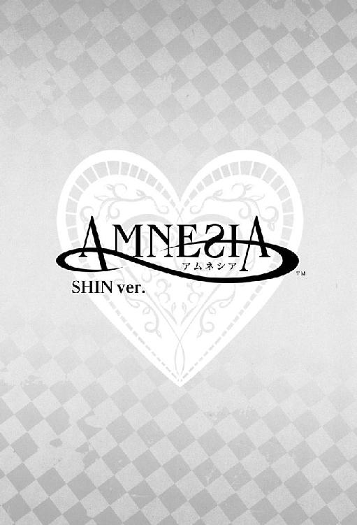

| 小説 AMNESIA SHIN Ver. AMNESIAシリーズ | |
| 狐塚冬里 | |
| (2013) | |

７月22日
「シンなんか嫌いっ！」
泣きそうに歪んだ彼女の声は、すぐ近くに迫った暗い森に吸い込まれて消えた。道もわからないくせに走り出した彼女の背中を見て、オレは溜息を零した。
時間はすでに遅く、辺りには人の気配もない。まともな明かりもないし道というよりは林の中のような場所だから、道を間違えるのも無理はないかもしれない。が、道を間違えるにしても彼女は帰り道とは全く逆の方向に走っていってしまった。オレから逃げようと勢いだけで飛び出したせいで、道など何も見ていないのだろう。
本当なら、すぐに追いかけるべきだった。しかし、突きつけられた言葉がオレの足を止めていた。
「あーそう。お友達扱いされるくらいなら嫌いで結構だよ」
本気の言葉じゃないとわかってはいたが、それでも好きな相手に嫌いと言われてにこにこしていられるほどおめでたくもない。いや、幼なじみとして仲良しこよしと思われるよりは嫌いの方がまだましだ。やっと、幼なじみから脱却できたんだ。
「............」
一瞬悩みもしたが、結局オレは冷たく言い捨てたまま追うことなく背を向けた。すぐに道の間違いに気付いて彼女も戻ってくるはずだ。
そう思っていたのに、足音は遠のくばかりで、
「ったく、バカ。そっちじゃないって......」
連れ戻そうと振り返った直後だった。
「きゃああああっ!!」
「......!? おい!?」
彼女の柔らかな髪が、真っ暗な森に吸い込まれるのが見えた。
何が起こったのか咄嗟にはわからなかった。それでも足は勝手に駆け出していて、姿が見えなくなった場所まで走り寄る。そのまま突っ込みそうになり、オレは慌てて足を踏み留めた。
暗くて何も見えない。しばらく目を凝らしていると、足下の数十センチ先から急斜面のようになっているのがやっと見えた。そこから先は暗闇しかない。ここに落ちたのか？ この何も見えない真っ暗な崖の底に。
名前をいくら叫んでも、返る声はない。ぞっとした。
すぐにでも助けに行きたかったが、このまま崖に下りていったところで彼女を助けられる可能性は極めて低い。しかし、落ちた彼女を置き去りにしてここを離れると思うと足が竦んだ。
心臓は壊れそうなほど焦りを訴え、脳は尋常じゃない速さでフル稼働している。あいつを確実に助けるにはどうしたらいい。
『もしどっちか遭難したら二次遭難に気をつけて』
森に出る前、誰かがそう言っていなかったか。
空回りする無能な脳を置き去りに、足が山荘へと走り出す。
山荘のラウンジに飛び込むように入ると、運良くラウンジに多くの客の姿があった。その中にトーマやミネ、サワを見つけて駆け寄る。オレに気付いたトーマが驚いたような顔をした。
「あれ、シン。一人？ あいつと一緒じゃなかったの」
トーマはオレが一人でいることに首を傾げ、サワはオレの顔を見てぎょっと声を上げた。
「っていうか、顔真っ青だよ!?」
ミネも何か言いかけていたが、今はそれどころじゃない。
「あいつが落ちた」
言った瞬間、トーマの目が驚愕に見開かれた。
「崖があるのに気付かないでふざけてて......落ちた。暗くて下が見えないからみんなで探してほしい」
「おまえ、何やってんだっ!?」
普段からはおよそ想像もつかないきつい怒声をオレに叩きつけ、トーマはラウンジを飛び出した。サワも半泣きの顔でトーマの後を追うように出て行った。
詳しい場所も方角すらまだ何も言っていない。バラバラに行動すれば自分たちだって遭難の可能性があるというのに、構わず飛び出した彼らの背を、オレは半ば呆然と見送った。
「探すってでもどうしたら......っ」
その場に残っていたミネがおろおろと辺りを見回す。それに頷き返してから、オレはラウンジにいた他の客にも事情を説明し捜索の手伝いを申し出た。
みんなすぐに了承してくれ、山荘にいた客の一人が残っている人を呼び集めててきぱきと指示を与えていく。それをオレは映画でも観るような心地で眺めていた。何度か簡単な質問をされ、それには機械的に答えた。
最終的に、夜道の単独捜索は危険なのでペアで探しに出ようということになった。できることなら、オレもその中に加わりたかった。けれど、理性がそれを止める。
「オレはここに残ります」
「え！」とミネがオレの顔を凝視した。周りの客も怪訝そうにしているのがわかった。
「連絡役は必要だし、事情説明ができるのはオレだけです」
そこまで言うともう誰も何も言わずにオレから目を離した。
手際よく指示を与えられたみんなは、ペアで出かけていく。すぐに館内、館外の電灯が目印にするために全て灯された。
ひとり残されたオレは、手が動くままに携帯で救急車と警察に連絡をした。その到着をラウンジの椅子に座ってじっと待つ。震えそうになる手を、きつく握り締める。
捜索のために人は出払い、ラウンジにはカチカチという時計の音だけが響いていた。今、あれから何分経った？
どうして、あんなことを言ってしまったのか。道が暗いことなんて行く前からわかってたはずだ。それなのにどうして。あんな場所に誘わなければ、あいつは落ちなかったんじゃないのか。
今さら自分を責めたところで何も解決しないことはわかっていたけれど、ただ待つしかない時間にできるのは考えることくらいだ。携帯を握り締めて山荘の入り口を睨み付けている間、オレは自分を責め続けた。一秒が一〇分にも一時間にも感じられた。
このまま永遠に、ここで彼女を待ち続けるんじゃないのか。そんな絶望に染まりそうになった時、喧噪と共に人影が見えた。無意識のうちに立ち上がっていた。
勢いよく入り口のドアが開かれ、二人がかりで人が運び込まれてくる。声は出なかった。
よろめくように数歩前に出て、足が止まった。彼女はぐったりと目を閉じていた。その顔や身体は真っ赤な血で汚れている。一瞬、もう死んでしまっているのではないかと思うほど、その赤は鮮明だった。
「なんでこんな......」
彼女が毛布の上に横たえられた時も、オレは何もできなかった。かろうじて機能していた耳がサイレンの音を拾ったくらいで、ただ血まみれの恋人を見下ろすことしかできない。
彼女の到着とほぼ同時に駆けつけた救急隊員の手によって、彼女はストレッチャーに乗せられた。そのままオレを見つめ返すことなく救急車の中へと運ばれる。大丈夫なのか。助かるのか。ふらりと足がその後を追いかける。
「事件発生時、被害者とご一緒だったというのはあなたですか？」
無造作に肩に手を置かれ、オレは立ち止まった。目の前で救急車のバックドアがバタンと大きな音を立てて閉まった。救急車は大げさな赤いランプを点滅させ、けたたましいサイレンを鳴らしながら走り去る。もう誰も、オレに彼女の容態を教えてくれる人間はいない。
「事情を詳しくお聞きしたいので、署までご同行願えますか」
ようやく振り返ると、そこには制服を着た警察官が二人立っていた。どちらも鬼瓦のような険しい顔をしている。オレはのろのろと頷き返し、先を行く警官に続いた。ふと落とした視線の先に、赤い水溜まりが見えた。あんなに流れてしまったら、彼女がなくなってしまう。
「行きましょう」
立ち止まったオレを警官が促した。オレは無理やり視線を彼女の血から剥がしパトカーに乗り込んだ。パトカーはサイレンを鳴らさずに走り出す。
車の稼働音だけが響く車内からは、まるでお化けの影みたいな森がよく見えた。
──あいつの悲鳴が、耳から離れなかった......。
８月１日
白い壁にかけられたネームプレートを見上げたオレは、彼女の部屋に間違いないことを確認してから、二回ノックをした。信濃の病院から移ってまだ日が浅いので慣れていない。
室内からの返事は聞こえなかったが、構わずに扉に手を掛ける。
「入るぞ」
言うと同時にドアを開けると、彼女は上半身を起こした状態でベッドからこちらを見つめていた。思わずほっと安堵の息をつきそうになり呑み込む。入院した当初ならまだしも、もう目覚めてから何日も経っているのにちゃんと起きているのを確認するまではまだ緊張する。
「......おい。いつまで寝てるつもりだよ。もう一〇時なんだけど。寝ぼけすぎだろおまえ」
ぼんやりしたままの彼女を横切り、何気なく窓から病院の外を見下ろした。そこからは中庭が見渡せるのでそこそこ景観がいい。明るい太陽の光に照らされた芝生が青々と茂っていた。
晴れていてよかった。それほど荷物も多くないはずだが、雨だと移動が面倒だ。
窓から顔を戻すと、呆けた視線とぶつかった。彼女の表情はオレが病室に入ってきた時から、一ミリも変化がない。
「──ったく。何ぼーっとしてんだ」
寝起きにしても少し反応が鈍すぎる。だが、じっと自分を見上げてくる瞳にすぐにそんなことどうでもよくなった。目が覚めないなら、覚まさせればいい。
「目、覚ましてやるよ」
小さな頭を支えるように手を添え、そっと唇を合わせる。彼女は驚いたように頭を後ろに引こうとしたが、そう簡単に放す気もなかった。
反応を見ようと細めていた目を閉じ、柔らかな唇の感触を貪る。てっきり抵抗されると思ったが、震えるような吐息が返ってくるだけだった。
「......何なんだよ。今日は恥ずかしがって暴れないの？ 嫌がられないと、やめ時わかんないんだけど」
唇を離して間近で顔を見つめても、ほんのり上気した顔で見つめ返されるだけ。その瞳はうっすら潤んでいるように見えて、オレの方が視線の置き場に困った。
「おとなしくしてるなら先進むぞ。いいのかよ」
怒らせるつもりで言ったのに、首を傾げられた。どこからどう見ても彼女に間違いないのに、よくできた人形を相手にしているようで一瞬背筋が寒くなる。
「......？ おまえ、マジで寝ぼけてるな」
きっと気にしすぎだろう。何もキスをするだけで怒られるのが当たり前なわけじゃない。今までがそうであっても。
「オレ退院手続きしてくるから、それまでに着替えておけよ。戻ってきたら声かけずに入るぞ」
小さく吐息を吐き出し、彼女の頭に軽く手を置いてからベッドから離れた。わかっているのかいないのか、彼女からの返事はない。
「じゃ、また後で」
後ろ手に病室の扉を閉めた時、自分でも眉間にしわが寄っているのがわかった。オレは消毒液臭い廊下を歩きながら、今の出来事を反芻していた。
単に寝起きでぼーっとしていただけか？ そもそも、今日一度でもあいつの声を聞いただろうか。
ボタンを掛け間違えているような気持ち悪さがあった。キスを避けなかったのは怪我が悪化して抵抗しようにもできなかったのかと一瞬考えたが、昨日までは何ともなかった。それに、昨日今日で急変するような深刻な容体ではない。そんな状態なら、退院の許可が下りるはずがない。
──それなら何が原因だ？
受付で退院の手続きをしたい旨を伝えると、順番に呼ぶから座って待つようにと指示された。ロビーにはオレと同じく名前を呼ばれるのを待っている人がたくさんいた。
オレもそれに倣い、大人しく椅子に腰を下ろした。待っている間も、彼女の様子が気になった。
大病院とまではいかないがそこそこ大きな病院だけあって、様々な人が受付前の椅子に座っている。腕を包帯で吊った子供、マスクをしたひどい猫背の女性、付き添いらしい家族、その家族が判別できていない様子の老人。
「ほら、お母さん行きますよ」
「あんたどちらさんかね？」
ふいに、横を通り過ぎる老婆とその娘らしき二人の会話が聞こえた。
「どちらさん」と娘に聞く老婆の目にドキリとする。さっき病室に入った時、あいつも同じような目で自分を見ていなかっただろうか。
まさか、と思う。オレは老婆の後ろ姿を凝視していたことに気付き、目を伏せた。
ちょうど受付から名前を呼ばれ、腰を浮かせる。必要な手続きを済ませて受付を後にしようとした時、「あの」と声をかけていた。小窓の向こう側から、看護師が愛想よくオレに返事を返す。
「いかがいたしましたか？」
「......いえ、何でも」
不思議そうな顔をされたが、オレは何も言わずに受付を離れた。
事故から数日後に記憶が混乱するようなことがあるのか。そう聞こうとした。だが、声になる前にやめた。朝ぼんやりしていた程度でそこまで考えるのは考え過ぎだ。もう少しすれば、きっと彼女も目が覚めていつもの調子を取り戻すだろう。
病室に戻る前にナースステーションに寄り、世話になった看護師に挨拶を済ませる。
彼女の病室の前に戻り、ドアに手をかけてから何気なく携帯で時間を確認した。出ていたのは一〇分程度か。
そのままドアを開けようとして一瞬躊躇した。ノックをしないことにじゃない。この部屋の中にちゃんといつもどおりの彼女がいるのかと考えてしまったからだった。何を馬鹿なことを、とドアを開ける。
「ただいま。着替えた？」
彼女はまだベッドの上に座っていたが、きちんと着替えは済ませていた。ちょっと反応を待ってみたが、沈黙が続いた。
「......何おまえ。まだぼーっとしてんの？ いつもみたいに勝手に入ってくるなって怒んなくていいわけ？」
反応はなし。
「なんかほんとに様子おかしいな。退院して大丈夫なのか？」
この問いには、一応頷きらしきものが返って来た。声が聞こえていない、ということではないらしい。
「......あれ？」
溜息と共に視線を落とすと、ゴミ箱の中が視界に入った。綺麗なもので何も入っていない。
「おまえ朝の薬飲んだ？ ゴミ捨てた様子ないけど」
毎朝飲む決まりになっている薬のゴミがないのはおかしい。
「......あのさ、おまえ痛くないの？」
顔を上げると、彼女は何のことかわからないとばかりに首を傾げた。その途端、傷が痛んだのか顔を歪める。見ているこっちの方が痛い。
「どうやったら毎日飲んでる痛み止め飲み忘れるんだよ」
ひとり言のように言ってから、オレははっとした。毎日やっていたことを忘れる？
「さっさと飲めよ、バカ。荷物片付けてるから」
浮かんだ考えを否定するように、オレは彼女に背を向けた。ちらりと横目で確認すると、彼女は鞄を探って痛み止めを取り出していた。少しほっとする。薬のある場所を知っているのなら安心だ。
布団や着ていた寝間着を簡単に畳み、棚へと手を伸ばす。
「......意外と片付いてるな。棚の中も空だし。おまえ昨日自分でやったの？」
彼女は曖昧に頷いた。
「特にやることなさそうだしもう行くか。あ、看護師にはさっき挨拶してきたから」
てっきり、「自分も挨拶をしに行く」と言うと思ったのに何も言わない。簡単にはぬぐい去れないほど、違和感は大きくなっていた。
考え過ぎだと思いたいが、確かめる必要はありそうだ。
「家まで近いけど、タクシーの方がいいよな？」
何か返事が返ってくることを期待したけど、無駄だった。だから、わかりやすいカマをかけた。
「あ、オレおまえの家の周りよくわかんないから、自分で道順説明してくれよな」
病院前に停まっているタクシーの横に立つと、すぐにドアが開いた。先に彼女を乗せる。
夏だというのに今日も冷えますね、なんて挨拶を口にする運転手を適当にあしらいシートベルトを締めた。
「で、お客さん。どこへ行きます？」
身体を捻って振り返った運転手は、目を合わせようとしないオレを通り越して彼女の方を見た。どう返事をするのかと様子を窺っていると、
「住所書いてあるもの持ってないかな」
と言う。今日初めての聞く声がこれになるとは。
「口で言えよ、そのくらい」
予測していただけにあまり動揺はしなかった。
しかし、どうやったら自分の家の住所を忘れることなんてできるのだろう。
「......しょうがないな」
長く放置しても意味はないので、彼女の代わりにオレが運転手に答える。
「すみません、場所上手く言えないんですけど、とりあえず鬼神母心の方にお願いします。後は曲がる場所指示しますんで」
「かしこまりました」
運転手はほっとしたような顔をして前に向き直り、タクシーを滑らかに発進させた。
同じように安堵した人間がもう一人。彼女は感情が抜け落ちたような目で窓の外を眺めていたが、明らかにほっとしているように見える。そんな彼女を見て、オレは溜息を零した。
マンション前でタクシーを止める。支払いを済ませてからタクシーを降りると、彼女はオレが促さなくても自らタクシーを降りた。日常生活に支障をきたすほどひどくはないようだ。
少しの間様子を見守る。彼女はオレが見ている目の前で、物珍しげに目の前のマンションを見上げていた。光沢が上品なタイル張りで、築年数も浅いまさに女子大生が好みそうな洒落たマンションだ。
「何自分ちに見とれてんだよ。行くぞ」
この分では、自分の家だということもわかっていなかったのかもしれない。じわじわと這い寄るような悪寒に気付かないふりをして、オレはあえて彼女に先を歩かせた。
案の定、彼女は自分の部屋を見もせずに通り過ぎた。
「おい。どこまで行くんだよ」
久しぶりだからうっかりしてたなんてレベルじゃない。
声をかけると、幾分慌てた様子で引き返しごそごそと鞄の中を探り出す。
「......もしかして鍵だそうとしてるわけ？」
手を止め、彼女はオレを見上げた。不思議そうな、それでいて何も考えていないような目だった。
「オレが預かってるだろ？ どうやったら忘れられんの？」
タクシーに乗る前はまさかとまだ思っていた。でも今は、半分以上疑っている。ここまでのことが全てこいつの演技で、「たまには仕返ししたくて」と言われたらどれほどいいだろう。
預かった鍵で部屋を開け、遠慮なく上がり込む。彼女の様子はこんなだし、室内に何があるともわからなかった。だが、まさか彼女も同じことを考えていたのか、入った途端きょろきょろと視線を泳がせた。すぐにはっとしたようにやめたが、何を探していたのだろう。
ざっと室内を見渡し、異常がないことを確認する。ワンルームなので確認すると言ってもそれほど見る場所もない。ベッド、ローテーブル、座椅子に姿見。どれも不審な点は見られなかった。
部屋の持ち主の様子がおかしくても、何事もなかったかのように部屋は彼女を受け入れる。
オレは閉まっていたカーテンを開け、室内に日の光を取り込んだ。
「なあ。片付けはやるから、お茶入れて」
立ち尽くしたままの彼女の手から鞄を受け取る。
まだ痛み止めを飲んでいるくらいだから気を遣わないわけではなかったが、ずっとベッドに伏せっていた分動いた方がいい。
「退院の許可が下りたってことは最低限の日常生活はできるってことだろ。倒れたらベッドまで運んでやるから、オレがいる間にリハビリしろよ」
自分がいないところで倒れられるのだけは御免だ。それなら今体を動かして疲れさせておいた方が、後で危ないこともしないだろう。
「何飲みたい？」
思ったよりしっかりした問いかけに少し驚いた。まともに会話ができるならよくなっているのかもしれない。何が、よくなっているのかは自分でもよくわからないが。
「メロンソーダ」
いつもの調子で答えると、彼女は冷蔵庫を開けて少し探した後、ペットボトルを取り出した。口がすでに開いているそれを躊躇せずコップに注ごうとしているのを見て、思わず声が出る。
「......ちょっと待て。それ二週間は前のヤツだろ。何で平然と入れてんだよ」
彼女はまじまじとペットボトルを見つめ、またそれを冷蔵庫に戻した。捨てはしないらしい。
「ないのはわかってるよ。言ってみただけ。いちいち真に受けなくていいんだけど」
彼女は賞味期限が一日切れたくらいでぐだぐだ言うタイプじゃない。それでも、さすがに口を開けてから二週間以上経ったジュースを出そうとするほどズボラでもなかった。らしくない。
「......ま、いいけど」
試すようなことばかりしている後ろめたさのせいで、彼女の顔を真っ直ぐ見ることができなかった。
荷物を片付け軽い食事をさせてと所用を済ませているうちに、窓から差し込む光が茜色に染まっていた。
「......あ、もうこんな時間か。オレ帰るわ」
言った途端、ほっとされたような気がしたのは気のせいか。ちくりと胸に何かが刺さった感じがした。
「そろそろおまえ限界だろ。一人の間は誰も面倒見られないんだから、横になっとけよ」
オレが玄関に向かうと、彼女は犬みたいに後をついてくる。こういう態度は前となんら変わらないけれど、状況がまるで違う。今はオレを追い出せる喜びに尻尾を振っているのだから。不信感は高まるばかりだ。
「あ、明日も来るから」
「うん、わかった」
一見、普通に聞こえるやりとりが笑ってしまうくらい間違いだらけだ。
「......ほんとにわかってるか？ 明日、オレ予備校の日なんだけど」
微かに見開かれた目には、自分の姿が映っていた。動揺を表に出さないように必死になっている情けない、年下の恋人。
「......いや、いい。わかった。とにかく明日も来るから」
今日はここまでにした方がいいだろう。こいつのためにも、自分のためにも。
「じゃ、また明日。あ、鍵はキッチンカウンターの上に置いといた。明日は普通に客として来るから。寝坊するなよ」
返事は待たずに外に出た。背後でバタンとドアの閉まる音がする。
明日になったらあいつは元に戻っているだろうか。今日のことは全部冗談でしたと、まんまと引っかかった自分を笑ってくれるだろうか。
「鍵かけろよ、バカ」
いつまで経っても鍵をかける気配のないドアを残し、オレは廊下を足早に歩いた。
８月２日
昨日訪れたばかりのマンションを見上げると、勝手に溜息が零れた。
事故などに遭った人間の記憶がしばらく経ってから混乱し始める。これが実際に起こりえるということは、昨日自宅に帰ってからすぐ調べたのでわかっている。インターネットがどこまで信用できるかという問題はあるが、そういった事例があると主張する人間がいることは確かだ。
まさか身内にこんなことが起こるとは思っていなかったが、今の段階ではかなりの確率で記憶混乱が当てはまりそうだった。オレは今日、もう一度カマをかけてそれを確かめるつもりでいた。
インターホンを鳴らすと、少ししてからバタバタと人の動く気配がした。インターホン越しに、「ちょっと待ってほしい」と声が聞こえる。
彼女の記憶がどうなっているのかが心配で気を張っていただけに、拍子抜けしてしまった。
わかったとだけ答えて待つこと一〇分。ようやくドアが開いた。
「遅い。寝てたな」
出迎えた彼女の姿はきちんと身支度が整っているように見えたが、よく見るとサイドの髪がおかしな方向に跳ねていた。
「シンが早いんだよ」
そんな返事が返って来るのが日常だった。でも今は曖昧に頷かれるだけ。
「家に帰ったからってだらけるな。病院にいた時と同じように生活する方が身体にいいに決まってる。だから昨日、寝坊するなって言っただろ」
追撃するように言っても、効果はなし。仕方ないので、促されもしないのに靴を脱いだ。
「入るぞ」
今のチャイムで起きて、身支度を整えるのが精一杯だったことがよくわかる部屋に少し笑いそうになる。そこまで慌てなくても寝起きの顔なんてもう何度も見ているのに。ああ、でも今のオレは......と考えそうになってやめた。
落ち込むのも、悩むのも確信してからでいい。
「これ、朝飯買ってきた。それと、聞きたいことがあるんだけど」
テーブルの上にコンビニ袋を置きながら腰を下ろす。顔に出ない自信はあったが、一応心の準備をしてから用意してきた台詞を口にした。
「今日で付き合って一年になるよな？ 何かしなくていいのか？」
一瞬の間があった。
「......別に、何もいらないよ」
「......あ、そう」
罠にはめているような罪悪感があった。それでもやめない。
明らかに隠そうとされているのだから、直接聞いても言わないだろう。
「......で、もうひとつ質問」
これで最後になるだろう質問をぶつける。
「オレ、昨日からおまえに名前呼ばれてないんだけど、なんで？」
彼女の頬の辺りに微かに動揺が走った。
「いつもしょっちゅう呼ばれてる気がするんだけど？ てか、普段はオレが邪険にしても犬コロみたいについてくるクセに、昨日ずっと帰らせたがってたよな」
強いて気を鎮めたオレは、早口にならないように努めた。しかし、矢継ぎ早に質問を重ねてしまう。
ここで追い詰めても意味ないのに、どうしてこいつのこととなると冷静でいられないんだろう。
「で、聞きたいんだけど、おまえオレの名前覚えてる？」
「............」
──ああ、やっぱり。
返事を聞かなくても、わかってしまった。彼女は他人を見る目でオレを見つめていた。
「......ちょっとド忘れ」
間を置いて返ってきた彼女の返事に、心の中で情けない笑いが漏れた。
「んなわけあるか、バカ」
気まずい沈黙が部屋に落ちる。
「......ふうん、そう」
ぽっかりと心に穴が空き、そこから自分の何かが流れ出していくような錯覚に陥る。さらさらと零れ続けて何もなくなったら、そこには何が残るのだろう。
「やっぱり覚えてないのか」
何もかも、自分のせいだ。あの夜に追い詰めたりしなければ。いや、あの場所に誘ったりしなければ。
後悔したところで、起こってしまったことは取り消せない。このまま記憶が戻らなかったらどうなるのだろう。当たり前のようにあった毎日が、足下から崩れ落ちていく。
自分の気持ちばかり追いかけてからはっとした。今、知らない男と二人きりで部屋にいる彼女は、何を考えてる？
想像するのも嫌で、場を繋ぐように口を開いた。
「あ、ちなみに付き合い始めてからはまだ三ヶ月だから。日付なんて覚えてないし」
手品の種明かしをすると、彼女は素直に驚きの表情を浮かべた。
こうして声を掛ければ反応するし、話せないわけでもない。それなのに、今まで培ってきた共通の記憶がそこにないなんて。悪夢なら早く醒めろ。
少しだけ長く瞼を閉じてみたが、何も変化はなかった。目が覚めない以上、これが現実だ。
「何で隠したがってるのか知らないけど、もうしらばっくれてもムダ。隠してるのは間違いないから聞いても言わないだろうと思ってカマかけた」
そう、ただのカマだったのに彼女は見事に引っかかった。
「記憶、混乱してるんだろ、おまえ」
もう確信していることなのに、改めて言葉にすると馬鹿みたいに心細くなった。
観念したのか、彼女は反論もせずにオレの言葉に耳を傾けている。こうも大人しいと本当に調子が狂う。
「てか、隠せると思う方がおかしいだろ。おまえ、記憶混乱しててもバカなのは変わんないよな」
馬鹿と言うとすぐに怒っていたくせに、今は目を伏せられるだけだった。怒られないと、自分でもどうしていいかわからない。
「オレがおまえと付き合ってるってすぐわかんなかったの？ 様子が違ってても隠し通せるって？」
恋人が記憶を失くして気付かない奴がいると思うか？ いたらそれは恋人じゃない。恋人ごっこをしてるだけだ。
「......バァカ」
頼られないことだけが悔しかったわけじゃない。恋人に怪我をさせて、記憶まで失くさせた自分が憎かった。誰もオレを責めてくれないから、自分で責めるしかない。
「朝からおかしいと思ってたっての。一時的に混乱してるだけならその内治るかと思って様子見てただけ」
何事もなく回復していたら、こんな試すようなこともしなかった。彼女にはそれを責める権利があったのに、やはり何も言わない。
記憶がなくなってしまうと、感情も一緒に消えてしまうものなんだろうか。
「......で。なんで隠してたんだよ」
しばらく間を置いてから、彼女はおずおずと顔を上げた。まるで怯えているような態度に自分勝手だとわかっていても苛立った。
「......病院に戻されたくなかったから」
彼女が怯えているのが自分じゃなかったのだとわかると、一瞬前の苛立ちがすっと消えた。
だが、記憶がないなんてわかったら、自ら病院に行こうと考えそうなものだがと少し首を捻る。実験か何かされるとでも思っているのだろうか。だとしたら、ＳＦ映画の見過ぎだ。
「......わかった。じゃあ病院には絶対戻さない」
言った途端、彼女はパッと顔を輝かせた。
「それでもう隠す必要はないんだな？」
トーマ辺りが聞いたら「何言ってんの。どっか悪かったらどうするの」と怒りそうなものだ。声まで聞こえそうなほどリアルに想像できる。
色々聞きたいことはあった。だが、ひとまずは状況を整理しなければ何もできない。
オレは一度座り直すと、正面から彼女の顔を見据えた。真っ直ぐに視線を返して来るところは変わらないのに、その瞳に映るオレの姿はきっと別人なのだろう。
「......で、どこまで理解できてるんだ？」
再び不安に呑み込まれそうになるのを頭をひとつ振ってやり過ごし、問いかける。
「自分の名前はわかってるか？ 年齢とか立場は？」
返事の代わりに、彼女は鞄からごそごそと身分証を出してオレに見せる。
「ん？ ああ、身分証があったのか」
身分証には、はにかんだような顔で笑う彼女の写真がついている。そして今、目の前には不安な顔をした彼女がいる。
「......てか、身分証がないと名前もわかんないくらい混乱してるのか」
それは、この身分証では記憶の混乱を治めることができなかったということ──つまり、事態は思った以上に深刻ということだ。もしかすると、記憶の混乱どころの話じゃ済まないかもしれない。
記憶の混乱じゃないとしたら何なんだ、と自問自答する。彼女は昨日、病院から退院許可が下りたばかりだ。何の問題もないから、退院できたはずだ。
心臓が、オレの意思を置き去りに早鐘を打ち始める。ある可能性から目を逸らそうとしても、オレの頭は冷静に動き続けて思考を止めてはくれない。
記憶の混乱より酷い状態。それの示すものは──記憶喪失？
「......っ......はぁー」
少し落ち着こうと、首の後ろに手を回して意識して呼吸を深くした。
もし記憶を失っているのだとしたら、カマをかけるなんてことをしてる場合じゃない。記憶を取り戻さなければならない。そのためには、と彼女に改めて向き直った。
「......じゃあ、一から説明するけど、オレの名前はシン。おまえとは子供の頃からの知り合いで......まあいわゆる幼なじみか。三ヶ月前からは付き合ってた。年は一コ下。高三」
幼なじみじゃなければよかったのに、と思ったこともあった。しかし、こんな風に関係をリセットされることを望んだわけじゃない。
ひとつひとつ必死に覚えようと頷く彼女にオレは言葉を続ける。
「おまえの両親は海外に赴任中。入院直後には一回帰ってきたけど、もう向こうに戻った。で、その代わりにオレが鍵と金を預かって色々面倒見てた。親もオレのことはよく知ってるから」
口は滑らかに動き、淀みなく説明をする。内心の動揺など微塵も感じさせない平淡な声が出ることに、自分でも驚くくらいにスムーズだ。
それでも、病院に駆けつけた時の彼女の両親の顔を思い出すと、どうしても胸に苦いものが広がった。どんな言い訳もするつもりはない。オレが彼らの信頼を裏切り、彼女に怪我を負わせた。それが事実だ。
「......いっぺんに話しても混乱するだろうし、とりあえずこんなとこか。他に気になることあるか？」
「学校に行かなくていいのかな？」
少し間を置いて聞かれた。
「今は夏休み中」
オレにとっては当たり前のことが、今の彼女にはわからない。胸が重くなる。
改めて部屋を見回すと、カレンダーの類は置いていなかった。それに、彼女の携帯は今故障中だ。
「......そっか。日付もわかってないんだよな」
今年は例年稀にみる冷夏で季節感などまるでなく、秋だと言われれば納得してしまうほど肌寒い。退院直後でテレビもまともに見ていなければ、時間に取り残されても仕方ないだろう。
日常生活に支障はなさそうだと思っていた。でも、今こうして彼女は困っている。これから先も、記憶がないことで不安になることがあるはずだ。
それも全て、自分のせいだ。
「......悪かった」
本当は、ずっと謝りたかった。彼女の様子がおかしいと気付いた時からずっと。
しかし、謝罪をすればあの日の説明をしなければならない。オレ自身が怪我を負ったわけではないから傷が痛んだりすることはないけど、それでも思い出すのは辛かった。
急に謝罪を口にしたオレを、彼女は驚いたように見つめる。
「オレのせいなんだ。おまえが怪我したのも、記憶がおかしくなったのも全部」
脳裏に、闇に吸い込まれていった彼女の姿が浮かんだ。
「おまえは一〇日くらい前事故に遭った。その時頭を強く打ってるんだ。記憶が混乱してるのはそのせいだと思う。事故のことは......」
彼女の悲鳴が、耳の奥で響いた。あの事故からずっと忘れらず、何度も蘇る声だ。
「悪い、オレもまだ気持ちの整理がついてないんだ。冷静に話せる自信がない」
あんなところに崖さえなければ、いつもどおり何事もなく二人で一緒にいられるはずだった。そう、あれは不運な事故だった。
一瞬、頭の中に何かが引っかかった気がしたが、具体的な形になる前に消えた。
事故だろうと、彼女が崖から転落した責任は自分にある。そのことから目を逸らしてはいけない。
「とにかく、全責任はオレにある。怪我のことも、記憶がないならそのことも、全部面倒見るつもりでいる」
言葉だけじゃない。本当に、彼女のためなら何でもするつもりだ。
思い出してほしい。思い出させてやりたい。原因を作ったのは自分だからこそ、全てを元に戻してやりたかった。
「おばさんとおじさんにも、オレが面倒見るって約束して鍵預けてもらった」
事故の後、彼女の両親はすぐに病院に駆けつけた。そして、彼女の父親は頭を下げたオレに「私たちは、君のせいだなんて思っていないよ」と穏やかな声をかけてくれた。それが余計に胸に痛かった。
ふと、彼女の視線は空を彷徨い、しばらくしてからオレに据えられた。少し様子がおかしい。
「......どうかしたか？」
彼女は数回瞬きを繰り返してから、
「病室でお父さんに謝ってくれた？」
「......！」
オレの頭の中を読んだように聞いてくるから驚いた。
「......うん」
ふ、と口元が自然と緩む。
「イヤなところ思い出すな、おまえ。もう少し格好つけてるとこ思い出してくれよ」
心の中に温かいものがじわりと広がっていくような心地がした。
「......よかった、一応思い出せるんだな」
張っていた気が少し緩む。思っていた以上に、彼女の記憶から自分が消えていたことが堪えていたようだ。本当なら彼女の不安を第一に考えるべきなのに、自分が忘れられていたことの方がショックだなんて自分勝手で嫌になる。
オレは緩みかけた気をもう一度引き締めてから、立ち上がった。
「......おまえ、動けそうか？」
そう聞くと、彼女は手をちょっと持ち上げてみせてから頷いた。まるで、ロボットが故障している箇所を調べているような動作のようでちょっとコミカルで可愛いかった。
「その辺歩いてみようぜ。何か思い出すかもしれない」
マンションから少し歩いて、高層ビルが見える路地に出る。
「この辺がおまえの実家のあった場所。思い出せない？」
思い出の場所を見れば何か思い出すんじゃないかと思ったが、反応は薄い。そんな簡単にいくわけないとわかっていても、「あっそ」と落胆の声が漏れる。
「あそこがオレの家。おまえの家からはすぐ近くだから、何かあったら直接来い」
溜息を呑み込み、オレは自分の家を指さす。いまいちわからないような顔をしていたので、立ち位置をずらして、あれだと認識させた。
やはり見覚えがないのか、彼女は頷くだけだった。
「次、バイト先。歩いて二十分ぐらい」
顔を見ないまま歩き出す。踏切を渡り、高架下を通る間も会話はなかった。
いつもどおりに歩いて様子を窺っていたが、彼女は軽く息を切らしていた。入院生活のせいで体力が落ちている。「もうムリか」とひとりごちた。
「じゃあ店入るか。そこがおまえのバイト先だから」
『冥土の羊』と看板を掲げる店のドアを押すと、軽やかなドアベルの音が響く。
一歩店に入っただけでコーヒーの香ばしい香りがした。煉瓦造りの壁にわざとくすませた上品なフローリングが、中世ヨーロッパのお城みたいな空気を醸し出している。さりげなくジャズが流れる店内は、今日も常連客で賑わっている。
「お帰りなさいませ、ご主人様、お嬢様」
オレたちが呼ぶより早く、ウエイターの一人が丁寧に頭を下げた。トーマだ。
上品に整った顔に穏やかな微笑が女性受けするらしく、トーマがウエイターの日は女性客が多い。長年の付き合いで見慣れてしまっているオレには含みがあるように見える笑顔も、客として来る女性には十分魅力的に映るらしい。
白シャツにツートンカラーのベスト、首元には細身のリボンに冥土の羊のロゴ入りブローチという、着る人間を選ぶ男性用の制服をトーマは今日もさらりと着こなしている。ちなみに女性用の制服は、着物にフリルたっぷりのエプロン、頭にはヘッドドレスといった和製メイド風な作りだ。
「ってシン、おまえね。彼女、昨日退院じゃなかったの。何でこんなとこ連れて来んの」
頭を上げた途端、トーマの口調が気安いものになる。そのままの調子で、トーマは彼女の顔を覗き込んだ。
「おまえ、顔色悪いな。頭の傷、痛むのか？」
──頭の傷？
隣の彼女をちらりと見ると、オレに助けを求めているようだ。何だっけ、と思いながらとりあえず助け船を出した。
「今日は客で来てるんだけど」
「......あーそうですか。それは失礼しました」
お説教を聞く気はないと言うと、トーマはわずかに眉根を寄せたがあっさりと態度を正した。他の客に対するように頭を一度下げると、話がしやすい角の席に案内する。
「ご注文がお決まりの頃また伺います」
トーマが立ち去るまで待って、彼女に聞く。
「今のはトーマ。何か思い出さない？」
恋人であるオレのことすら何も思い出せないのに、幼なじみに過ぎないトーマの顔を見て急に何かを思い出せるはずもない。予想していたとおり、彼女は静かに首を横に振った。
「......ダメか。じゃあまあいいや。目的のひとつは終了。あとは、適当に携帯買ってタクシーで帰ろう」
話が途切れたところにトーマが顔を出し、注文を取っていった。完璧に店員の立場を取ろうと決めたらしく、余計なことを話しかけては来なかった。
注文している間、彼女は何も言わず話の続きを待っているようだった。
「おまえさ、携帯ないんだよ。気付いてたか？ 事故の時壊れたまま」
何の疑問にも思わなかったのだろうか。そもそも、携帯を持っていたことすらも忘れてしまっていたのだろうか。
「病院にいる間は安全だったけど、今は緊急の時にオレと連絡つかないと面倒だろ。オレには女の携帯なんかわかんないから自分で選べ。せっかくここまで来れたんだし」
息切れはしていたけれど、退院翌日にしてはよくついて来たものだと思う。
「てか、ダメそうなら途中で帰るつもりだったんだけど......。そういえば今のおまえあんまり文句言わないよな。もしかしてムリしてたのか？」
口数全体が減っているから気付かなかった。
「ちょっとがんばった」
「バカ。がんばれなんて言ってないだろ。不満は口に出せよ。言われなきゃわかんないから。言われない不満をわかってやるつもりもないし」
間を計ったように飲み物が運ばれてきた。緑色の炭酸飲料を一口飲んでから、溜息をつく。
「......何で今さらこんなことおまえに言わなきゃなんないんだろうな。そういう細々とした折り合い方、十年以上かけて積み上げてきたはずだったのに」
やっと、辿り着いたはずの場所が一瞬にして壊れ去った虚しさが口を滑らせる。
「説明しなきゃわかんないって。ピンと来ねえよ」
記憶を失った相手に言っても仕方ないことなのはわかっていた。それでも言わずにはいられないほどの喪失感。
「今ここにいるのはオレの知ってるおまえなのか？ そうじゃないと思って扱った方がいいのか？」
目の前に座る彼女は俯いている。哀しそうに見えた。
何を記憶喪失者相手に言っているのだろう。また深い溜息が漏れる。
「......あの事故の時、おまえが死んだかと思った。すげえ怖かった」
だから、命が助かったとわかった時は信じてもいない神に感謝すらした。でも。
「昨日、おまえの記憶がおかしいって気付いた時にも、なんか築いてきたもんがガラガラ崩れてく気がした」
弱い心の内をさらけ出すのは格好いいもんじゃない。わかっているのに、止められない。
「思い出せるよな？ 全部なくなったりしないよな？」
こいつに縋ってどうする、と頭の中の冷静な自分が嗤う。
「......まあ、何が起こったとしても結局はオレのせいなんだけどな」
オレが口を閉じると、間が持てないとばかりに彼女は紅茶のカップに手を伸ばした。茶色い角砂糖を二つ、沈める。
とっくに冷めた紅茶は、それを溶かすことができずただ静かにそこにあった。
８月３日
もしかしたら記憶が戻っているんじゃないか、という淡い期待は、彼女の家を訪れた瞬間に脆くも崩れ去った。彼女は記憶を失ったままの彼女で、オレとの幼なじみ気分が抜けないあの彼女ではなかった。見た目は何も変わらないから余計に、変な心地だ。
それでも、落胆したばかりだと言うのに、懲りもせずもしかしたらもう記憶が戻っているのにまた隠そうとしているだけかも、ともちらりと考える。
絨毯の上に直接座り込んでいる彼女をオレは見下ろした。
「オレ、昨日おまえにウソついたんだけど」
驚きで大きくなる彼女の瞳を見つめたまま先を続けた。
「おまえの両親が海外にいるって、あれウソ。本当はとなりの県にいる。退院日は仕事で来られなかっただけ。記憶のないおまえを独占したくてウソついた。ハイ、これ連絡先」
メモを手渡すと彼女は素直に受け取り、数回瞬きをしてから口を開く。
「......教えてくれてありがとう」
駄目か。溜息が零れた。
「......連絡先は本物だけど、オレの言ったことはウソだから」
わけがわからないと、彼女が困った顔をする。
「記憶が戻ってないか聞いてもまた隠すかもしれないと思って。やっぱまだ戻ってないんだな」
顔を見た瞬間にわかってはいたけど、確かめずにはいられなかった。
「おまえの両親はほんとに海外赴任。昨日ウソついたってのがウソ。その連絡先はロスのヤツ。家から写してきた。何なら国際電話で確かめたら」
彼女は何も思い出していない。こんな簡単なウソも見破れないほど何も。
「......やっぱ、一日二日経ったら自然に回復してるかもなんて甘すぎるよな」
呟きは溜息に紛れて足下に落ちた。そのまま気力まで落としそうになって、オレは頭をひとつ振った。今は自分が落ち込んでいる場合じゃない。
「体調は？ 元気ならおまえの学校見に行かない？」
少し間が空いてから「行く」と返事が聞こえた。怒らないのか？ と思わず聞き返しそうになって、また溜息をついた。
彼女は、オレが嘘をつくといつもすぐ怒った。彼女自身が正直者だからなのか、息をするように嘘をつくのを叱りもした。オオカミ少年になっちゃうよ、と。
オレがつく嘘は物事を円滑に進めるためのもので、誰かを困らせたくてついているものじゃない。それに、誰も信じてくれなくなったとしてもおまえは信じてくれるんだろ？ とオレは高をくくっていた。彼女もそれをわかっていたので本気で怒りはしなかったが、やっぱり騙されるとよくむくれていた。
今はそれがひどく懐かしい。
「うん、じゃあ行こう」
背を向けてドアに手をかけたが、どうにも気まずい。「あのさ」と振り返ると、彼女はじーっとオレを見つめていた。
「ウソつかれたら、怒っていいんだからな。ぼーっとしてんのはわかってるし、だまし討ちしたオレが悪いんだけど、なんか調子狂う」
記憶がない相手にいつもどおりにしろなんて、難しい注文だとは思う。しかし頭でわかってはいても感情が追いつかない。
「いつもどおりぶんむくれて怒るだろうって無意識に思ってたみたいだな。地味に堪える、こういう違和感」
手を伸ばしそうになってすんででそれを押しとどめた。
「今のおまえは、おまえだけど違うんだよな。わかってもらえるつもりであしらったらダメだよな」
今の彼女からしたら、オレは見知らぬ男だ。浮いた手をきつく握り締めて、「じゃあ行くか」と今度こそ背を向けた。
「......あ、今日は具合悪くなったらさっさと言えよ」と釘はしっかり刺しておいた。
歩いて数十分で彼女の通う大学に着いた。
彼女の通う大学──茗荷大学は、同じ敷地内に付属の高校も併設されておりそこそこの規模を誇る。新しいとは言えないが補修工事や掃除が行き届いているので、休みの日でも顔を見せる学生は多い。今もちらほらと大学生活を満喫する学生の姿があった。
高校とは門こそ共有しているが、高校の敷地に入るには脇道を逸れる必要がある。そのため比較的区分けがしっかりしており、大学キャンパス内で高校生がうろうろしていることは珍しい。逆に高校の敷地内に私服姿の大学生がいても目立つ。
それでも、チャレンジ精神溢れる高校生が果敢にも制服姿で大学の食堂に並ぶという肝試し的なことがたまに行われていたりもする。もちろん、大学の食堂は開放されているので違反でもなんでもない。
「ここがおまえの大学。高校からエスカレーターで進学した」
門を前にした彼女は、物珍しそうに大学の校舎を見上げている。そんなに珍しい造りをしている建物じゃないから、やはり記憶を失くしているのだろう。
「高校も敷地内にあるけど、制服だから部外者には入りにくい。とりあえず大学でいいよな」
返事は待たずにそのまま歩き出す。後からちゃんとついて来ているのを確認しながら、一番近い入り口から校内に入った。
夏休み中だけあって、ずらりと並んでいる教室に人気はない。大きなタイルが敷かれた廊下を、軽音部の部室の方へ向かって進む。
「多分、おまえの記憶に一番残ってるのは部活動のことだと思う。高二から軽音部に入って、バンドやってた。ボーカル担当」
歩いている途中で数人の学生とすれ違ったが、幸いその中に知り合いはいないようで二人を素通りしていった。
「始めた時はすげえヘタクソだったけど、その後相当練習したらしくて三年の時はまあまあ。大学に入ってからは演奏聞いてない。でもまあ、熱中してたな。......で、ここが部室」
さして広くもない部室に入ると、彼女は室内を目を凝らすようにして見渡し始める。
ケースにしまわれたギターとアンプがすぐ視界に入る。コードの類は乱雑にまとめられ足を取られないように部屋の隅に追いやられていた。机の上には何冊かスコアが出しっぱなしにされていて、ちょっと前まで人がそこで楽譜をチェックしていたような雰囲気を醸し出している。それなのに、室内は少し埃っぽく空気が濃密だった。
「見覚えあるか？ かなり通ってたはずだけど」
入り口近くから動こうとしない彼女のすぐ横に立ち、同じ光景を眺めて見るが気持ちまではわからなかった。
「今はおまえの怪我で休止中。その調子じゃ当分休止のままになりそうだな」
覚えてもいないくせに、彼女は申し訳なさそうな顔をする。意地悪で言ったわけじゃないのに、居心地が悪くなった。
「普段は週二くらいで練習してたのかな。授業の後とか休みの日とか。オレもしょっちゅう来てた。おまえの部活が終わった後、ここで二人で話してた」
ここでの思い出も数え出せばキリがない。それなのに、初めて来た場所のような素振りを見せる彼女が堪らなかった。
「──おまえが必死になってるとこ、見てんのが楽しかった」
今まで伝えたことはあっただろうか。あったとしても、今みたいに切実な気持ちで伝えてはいなかっただろう。
「オレにはそういうのムリだし」
呟きは自嘲めいて響いた。いつからか何事にも熱中できなくて冷めた目で周りを見ている自分がいた。何がそんなに楽しいのかはわからなかったけど、音楽に夢中になる彼女は一際輝いて見えた。羨ましいと思えるほどに。
自分が今、記憶を失う前の彼女を見ていたことに気付いて目を伏せた。懐かしいと思うことが今の彼女に悪いような気がした。
横で黙り込んでいる彼女の様子を窺うと、まだ室内を熱心に見つめていた。室内の物に手を触れようとはしないのに必死に見つめる姿が、どこかいたいけに映る。
彼女に触れたい、という気持ちがふいに湧く。衝動にも似たそれは、自分が深く考るよりも早く表に溢れ出た。
「オレがおまえに告白したのも、初めてキスしたのも、この部屋」
言いながら、上体を屈めてキスをする。彼女は目も閉じなかった。驚いてはいるみたいだったけど、突き飛ばされたりはしなかった。
「......覚えてないか？」
ほんの少し唇を離し、吐息のかかる距離のままに問う。こうしていると前と変わらず鼓動は速まるし愛しさもこみ上げるのに、目の前の彼女は驚きだけしか感じていないように見える。
「その時のことは覚えてなくても、キスの感触は？」
欠片でもいい。彼女の中に自分との繋がりを見つけたかった。
「数え切れないくらい、おまえにキスしてるんだけど。全然印象に残ってないって言われたら、結構悔しい」
悔しいと口にしたけど、半分くらいは哀しいが正しい気がした。しかしそれを言ってしまうと堰き止めていたものが溢れるような気がして、気付かないふりをする。
「......ダメか」
しばらく待ってみたが、期待したような返事は返ってこなかった。溜息をひとつついてから、オレは彼女から身体を離した。
「悪い、もうしない。ここでキスしたら普通に思い出すんじゃないかと思ったけど、甘かった」
お伽話のような展開を期待したわけじゃない。でもどこか心の片隅で、思い出してもらえるんじゃないかと期待もしていた。
「......困るよな。今のおまえにとっては知らない男だもんな」
それなりに酷いことをした自覚はあるのに、彼女の反応は鈍い。拒絶されるのも辛いが、なかったことのようにされるのも堪えるなと溜息をつきかけた時、
「嫌じゃなかったよ」
思いがけない返事に溜息が引っ込んだ。
「あ、そう？ じゃあこれからも遠慮なく」
愛想の良さも何もない声が出たが、たぶん自分は喜んでいる。オレは他人事のように考えて、ほっと吐息をついた。
「......何だかんだ言って、どっかに気持ちの欠片みたいのは残ってんだな」
彼女の中に、やっと自分を見つけた。そこにまだいるのなら、希望がある。
「いきなりキスされて嫌じゃないってのはそういうことだろ。それならいいんだ」
それならいい、と心の中で繰り返し部室を出た。
「......焦っても仕方なさそうだな。長期戦覚悟するか」
長期戦だろうと、ひとつでも希望があればやり抜ける。逃げ出す気などどこにもないが、オレの足取りは先程より大分軽かった。
部室以外にも一般教室や食堂などよく使いそうな場所に連れて行ったが、彼女は首を傾げるだけだった。
「これで、パッと思い付くとこは一通り連れてった。後はなりゆきに任せるしかないと思う」
キャンパスのやや開けた広場で一息つく。
「知り合いと話してるうちになんとなく思い出せることもあるかもしんないし。なんか思い出に残ってる場所に行ったら、そこであったことを思い出すってこともあるだろうし。オレが知ってるヤツには引きあわせてやれるけど......」
気がつくと、彼女の足が止まっていた。距離が空いてしまった分を詰めて、
「どうした？ 何立ち止まってんだよ」
ぼんやりした彼女の顔を覗き込む。その途端、彼女の身体がぐらりとよろめき、
「......っ。どうした」
慌てて支えた。貧血を起こしたのか、やや顔が青ざめている。
「......おい、また具合悪いの我慢してたんじゃないだろうな」
心配すると怒ってしまうのをどうにかしたいとは思うが、そもそも心配をかける方が悪い。
怒られたことを気にしたのでもないだろうが、彼女は極小さく首を横に振った。少し深呼吸のようなことをすると、徐々に顔に赤みが戻っていくのがわかった。
「......大丈夫か？」
と問いかけると、
「ライブの後、泣くまで叱られた？」
予想外の返しに一瞬返事に詰まる。
「............。ヤなこと思い出すな、おまえ」
自分の脳裏にも、鮮やかにライブの時の光景が蘇る。ライブハウスの熱気や歓声じゃない。ライブが終わってからの出来事を思い出していた。
──二年前の夏のことだった。
茗荷大学で行われたライブは、まだ日の高い時間に終わった。ただの観客だったオレは、ステージから下りた彼女にすぐ詰め寄った。
「......何、あのライブ」
ひどく冷たい声だという自覚はあった。彼女は怯えたようにびくりと肩を震わせる。隣にいたトーマが彼女を庇おうと前に出かかるのを、オレは目で制した。
「おまえ人に聞かせようって気あんの？ 自分の歌ってるとこ録音して聞いたことある？ マジで聞けたもんじゃないんだけど」
言い過ぎだとは思わなかった。素直な感想を極正直に伝えただけだ。あえて言葉を選んでいないだけで。
今、このタイミングで聞かなければ、彼女はそれで止まってしまうだろうから。
俯いたまま、ぼそぼそとした声が返る。
「緊張して声が出なかった？」
免罪符をそこに見つけたように、彼女が頷くのをオレは許さない。
「言い訳だろ。練習が足りないからそういうことになるんだよ。おまえ、どんな状況になっても自信持って歌えるくらい練習した？ してないよな？ 遊んでたよな？」
たぶん今、彼女の脳内には過ぎて行った後悔すべき時間たちが見えていることだろう。誤魔化そうとしても無駄だ。オレはそれを知っている。
「それで言い訳しても誰も聞いてくれないよ」
返事をしない彼女の頬を涙が伝う。今度こそトーマが一歩前に出た。
「......そのくらいにしといたら？ 追い討ちかけて言わなくても、十分落ち込んでるだろ」
「るさいな。身内が言わなくて誰が言うんだよ」
トーマは優しい。でも今の優しさは違うだろ、とオレは切り捨てる。
「みんな心の中じゃひどい演奏だって思ってただろ。自覚しなきゃ変わんないよ」
人から指摘されて気付くんでもいい。そこに自分で問題があるのだと自覚しないと何も変わらない。
彼女は涙を流してはいたが、悔しそうに唇は引き結んでいた。まだ心は折れていない証拠だ。
「泣くほど悔しいなら、来年は練習したら」
きつく批判されたくらいでやめるならそれまでのことだ。中途半端ならやめればいいと思っていた。
しばらく、沈黙が続いた。オレはそれ以上何も言わなかったし、彼女もオレを睨み付けたままだった。最初に耐えかねたのはトーマだった。
「えーっとね、あんまり気にしないでいいよ」
トーマが優しく彼女の頭に手を置く。
「こいつの言い方が大げさなの。そこまで悪くなかったから」
嘘つけ、と喉までまで出かかった。トーマはこういうところがある。傷つかないように、壊れないように真綿でくるむみたいに大切にする。そのための嘘は、トーマの中では嘘にならない。
「甘やかすなよ、トーマ」
ぬるま湯に浸かるような優しさは心地よいが、いざ外に出るとなると浸かる前より寒いし、何より出たくなくなってしまう。間違いを包み込む嘘を、オレはつけなかった。
どうしたの、というように遠慮がちに腕を叩かれ、思い出から現実に引き戻された。空いてしまった間を誤魔化すように、「だっておまえヘタだったんだもん」と言い訳じみた声が出た。
「言っとくけど、二回目はよくなってたからちゃんと褒めたぞ」
悪い印象だけを思い出されても癪だ。早く二回目も思い出せよと心の中で付け足した。
大学にこれ以上いても意味はなさそうだと、早々に見切りをつけ彼女のマンションまで戻る。
帰り着いた時には日が暮れていた。部屋に入ったとこまで見届けてから帰ろうとして思い出す。
「ところでさ、おまえ明後日からバイトに復帰する予定だったんだけど、ほとんど記憶ないんじゃさすがにバイトは厳しいよな」
彼女はぱちくりと瞬きを繰り返している。この様子じゃとてもじゃないがバイトは無理だろう。
「店長に伝えて、判断してもらうべきかな......」
単に休ませてもいいが、前と同じ生活をした方が記憶が戻るのが早いかもしれない。そう考えていると、
「あんまり人に知られたくない」と彼女が言った。
「まあ、わからなくもないけどさ」
自分からしたら見知らぬ他人でも、周りは自分を知っている。そんな中で記憶喪失です、なんてあまり言いたいものじゃない。
「じゃあ記憶がないのは隠したままバイト行くか？」
不安そうな顔をするかと思ったら、思いの外前向きな視線がオレを見上げた。
「もともと怪我人だから、しばらくお試し勤務みたいな感じらしいし、できなくはないと思うけど。もしやる気なら、一通り業務教えてやるよ。オレも同じとこでバイトしてたから」
大きい頷きが返ってきたので、わかったとひとつ頷いた。前向きなのはいいことだ。
「それでいいなら、明日はここでバイトの特訓な。ビシビシやるから、今日はしっかり休んどけよ」
８月４日
「だから、それはさっき教えただろバカ」
メモを手にした彼女がびくっと肩を竦めた。
約束どおり、オレは彼女のマンションでアルバイトの業務を教えていた。お試し勤務だろうと記憶喪失がばれたくないならそれなりに仕事はできないといけない。これも本人のためだと激しく突っ込みを入れる。
「えっと......お冷やは右手で持つの？」
「そのくらい自分で考えろバカ」
まるで子供を相手にしているような気分だ。水をどっちで持つかなんて、教えることじゃない。利き手なら知ってるが、それこそ教えるようなことじゃないはずだ。現に、彼女は今ペンをちゃんと右手で持っている。
それでも、教えたことは一生懸命メモを取るし、嫌だと投げ出さないところは評価するべきなんだろう。
オレは次のメニューを頭で組み上げながら思う。
「じゃ、次。コーヒーセットの客が一万円だしたら、おつりは？」
「えっ......」
咄嗟に固まった彼女に間髪入れずに、
「暗算くらいパッとできなくてどうすんだバカ」
と突っ込む。もちろん、店には自動で計算してくれるレジがあるが、レジがいつ壊れないとも限らない。よく出るメニューの値段くらいは覚えていて当たり前だ。釣り銭も間違えると後で収支が合わなくなり面倒だ。いや、店のお金だから面倒で済ませてはいけない問題か。
客対応についてざっと説明を終えるまでそこまで時間はかからなかった。イレギュラーなものに関しては臨機応変に対応してもらう他ない。
「これで一通り教えたかな。覚えたか？」
はい、なのか、いいえ、なのかよくわからない曖昧な斜めの頷きが返る。どっちだ。
「じゃあ、実践。オレが客の役やるから、接客して」
まあいっか、とオレはローテーブルの前に腰を下ろした。やらせてみればわかることだ。
片肘をついて、彼女がロールプレイを始めるのを待った。しかし、彼女はまごまごしたまま次の動作を迷っている。
はぁ、と溜息をひとつついて、
「もう座ってるけど、客が店入って来たとこからやって」
今、入って来たとこだと次の動作を指図すると、ようやく合点がいったとピッと背筋を伸ばす。なんだそれ可愛い。緩みそうになる頬を、意識して引き締めた。
「お帰りなさいませ、ご主人様」
「......うん」
思ったよりも、照れる。口元に手を当て、思わず目を逸らしてしまった。
実際のバイトでも研修時には店員を相手にこうした練習をする。その延長だと思えばなんてことはないはずなのに、自分ひとりのためにやってるんだと思うと、ごっこ遊びをしているようなちょっといけない気持ちがする。強いて言うならメイドとご主人様ごっこ。
何を考えてるんだと頭を振ると、きょとんとした目とぶつかった。少し気まずい。
「えーと。で、席に案内。メニューを出す」
手振りで状況を設定しながら先に進める。
彼女は律儀に「お席にご案内します」とどこかに行こうとするものだから、ここでいいとその手を掴んだ。一部屋しかないこのマンションのどこに連れて行こうというのか。
気を取り直して、席についたところからロールプレイを再開する。
「そのあと水を持ってきて、『ご注文がお決まりの頃伺います』」
また水を取りに行こうとしたから、それはいいと手で制した。
「そしたら呼ばれるまでしばらく遠くから客の様子を見てる。そのうち客が呼ぶ」
見てると言ったせいか、彼女はじっとオレを見つめていた。仮に店員にここまで凝視されたら相当びびる。後でそれも伝えておこうと心に止め、客の立場に戻った。
「......注文お願いします」
手を上げる素振りをして、店員役の彼女を呼ぶ。待ってましたとばかりに、彼女はメモを手にしてオレの横に立った。
店内では走るなよ、と言いたかったはずなのに駆け寄る姿があまりに可愛くて咄嗟に声が出なかった。
「お決まりでしょうか、ご主人様」
「............うん」
恋人とメイドごっこをして何とも思わない男がいるだろうか。いや、いない。......と思う。
オレはあらぬ方向に行きそうになる思考を無理やり引き戻した。これはごっこじゃない、あくまで明日のバイトのための特訓だと改めて彼女に向き直る。
「............」
わかってはいても、辛いものは辛い。空腹な時に目の前に置かれたご馳走と同じだ。
彼女は一点の曇りもない眼差しで見つめている。それがまた居たたまれない。
彼女は恋人であり、本当ならば触れたいと思った時に手を伸ばせる関係のはずだ。そういう関係を、オレが作った。それなのに今はそれが許されない。こんなにも可愛い姿を突きつけられているというのに。
無意識に逸らしていた視線をまた彼女に戻す。これは特訓なのだからと気持ちを強く持って見つめるも、やはりオレの方が先に視線を逸らしてしまった。これはもう、彼女が可愛いのがいけないのだと心の中で責任転嫁した。
大体、どうしてこんな一部屋しかないような場所でごっこ遊びなんて始めてしまったのか。......いや違う、とまたすぐ頭を振る。これはあくまでバイトのための特訓だ。断じて、彼女にメイドごっこをさせているわけじゃない。わかっているはずなのに、暴走しかけているオレの頭は良からぬ方向にすぐ向かおうとする。
彼女は相変わらず澄んだ瞳でオレが次の指示を出すのを待っている。この純真な瞳がまたオレの心を大きく揺さぶる。一瞬、手が浮きかけて慌ててきつく握り直した。
今、心の中を覗かれたら相当まずいことになっている自覚がある。ちらり、と彼女を見上げて大きな溜息を零す。許されるなら、今すぐギブアップしてしまいたかった。
「......何の拷問だこれ......」
頭を抱えそうになったがなんとか堪えた。記憶を戻す目的以外で手を出すのは、倫理的に問題がある。いや、この場合は男的に、だろうか。
彼女は不思議そうにオレを見下ろしている。たまには見上げるのも悪くない。って、そうじゃないだろうと大きく息を吸い込んだ。
「何でもない。えーと、注文な」
メニューに模したノートをパラパラとめくり、適当なところを開いて指を差す。
「メイドのコーヒーセット、ケーキはバナナタルトで」
うんうん、と彼女が頷く。
「って、注文言われたら復唱して、キッチンへ行く」
これもさっき言ったぞ、と口には出さないがちょっと睨むと、彼女は慌てて復唱し、頭を下げた。
「はい、ご主人様」
本当に勘弁してほしい。自分でやらせておいて何だが、可愛くてたまらない。私服でこの破壊力だ。店の制服を着たら......とうっかり想像してしまった。
「......あのさ。襲ってもいい？」
驚いてメモを落としそうになった彼女を見て、「ダメだよな」と溜息が零れる。
「あーなんだこれ。辛すぎるだろ。早く来いよトーマ......」
助けを求めるように玄関に視線を投げた時、まるで一部始終を見ていたかのようなタイミングでチャイムが鳴った。
「......やっと来た」
今日ばかりは、トーマがここに来てくれたことが嬉しい。
オレは彼女が動くよりも先に立ち上がり、玄関のドアを開ける。
「入って」
扉の前で待っていたトーマは、挨拶もなしに言ったオレに苦笑した。
当たり前だが、今日はトーマも私服姿だ。オレンジのボーダーＴシャツに、黒の半袖ジャケットを羽織っている。胸元で、フェザーのネックレスが軽やかに揺れていた。
「入って、って我が物顔だねおまえ。おまえの家じゃないだろ」
そんなの今さらだろ、と思うけど言い返すのも子供っぽいのでやめた。
トーマはオレの後ろに立つ彼女に気が付くと、ひょいとそちらを覗き込んだ。
「......あ。おまえ、大丈夫だった？ 記憶が混乱してるんだって？」
「......とにかく入って」
トーマを中に促し、自分も部屋に戻る。我が物顔とオレに言ったトーマも、勝手知ったる様子で適当に腰を下ろした。
「コイツはトーマ。こないだ店で会わせたよな」
彼女がオレとトーマの顔を交互に見つめているので、改めて紹介する。頷いたところを見ると、一応は覚えていたらしい。
トーマは複雑な表情でやはりオレと彼女の顔を見つめていた。
「バイト中に頼るヤツがいないと困ると思って、コイツにだけ話した」
「話したっつっても、ものすごく簡単にな」
すかさずトーマの突っ込みが入る。確かに彼女の記憶が混乱している、としか伝えていない。それ以上の説明は色々と複雑なのであえて省いていた。
「で、どのくらい忘れてるの？ 俺のことも完全に忘れてるわけ？」
どっちに聞いたらいいかわからないといった顔でトーマが言う。彼女がはきはき説明するのにはまだ無理があったから、必然的にオレが口を開く。
俺のことも、という言葉にちょっと引っかかったが今は問題が違うから流すことにした。とりあえず状況を説明しないことには、助力も得られない。
「おまえのこともオレのことも覚えてない。てか、ここがどこなのかもよくわかってないと思う」
「は？ わかってないと思うって何それ。教えてあげなよ」
でた。トーマはいつもこうやって彼女を甘やかす。オレの眉間にしわが寄ったのを見ても、まるで平気な顔をしているのもいつもどおりだ。
「そんくらい自分で調べればいいだろ。調べられないことは教えてやるよ」
当たり前のことを言っただけなのに、トーマは大仰に溜息をつく。
「......始まったよ。おまえ、こいつがこういう奴だってことも忘れてるんだよね？」
問いかけられると、彼女はオレの様子を少し気にしながらも頷いた。トーマはそれに優しい微笑を返した。
「振り回されたでしょ。かわいそうなことしたね。お疲れさん」
ぬくもりに溢れる声も、柔らかな笑顔も全て彼女に向けられている。これがトーマなのだから仕方ないとわかっていても、たまに苛立つ。
「甘やかさなくていいんだよ」
「おまえは厳しすぎじゃないの」
トーマの瞳が僅かに細められた。
室内にうっすらと険悪な空気が満ちていく。別にトーマと揉めても構わなかった。しかし、彼女がオレたち二人の間でおろおろしているのでやめた。
「......とにかくトーマ、バイト中のフォローは頼むから」
「まぁそれはもちろん、そのつもりだけどね」
どうしても声は低くなったが、トーマは軽く肩を竦めるだけでそれを受け流した。付き合いが長い分、引き際もお互いよくわかっている。そこまでわかり尽くしているからこそ、彼女を任せても大丈夫だと信用したわけだが。
「じゃ、お前相手に妙な気分だけど一応自己紹介するね」
トーマは一度座り直すと、人当たりのいい笑みを浮かべた。
「俺はトーマ。おまえのことは子供の頃から知ってて、まあ兄代わりみたいなもの」
代わりどころか実の兄がいたとしてもここまで口うるさくはないと思う。心の中でひっそりと毒づく。
「俺としてはシンに対してもそのつもりなんだけど......」
ちらりとトーマがこちらに視線をくれたので、思い切り顔をしかめてやった。
「いい年して兄代わりなんかいらないっての」
「って、嫌がられてるわけ」
トーマは、困ったもんだとこれ見よがしに溜息をついて見せる。この、反抗期だから仕方ない的な余裕の態度がまた神経を逆撫でするのに、知っていてそれをやめない。こういうところ、本当にいい性格をしていると思う。
「バイトのことはもちろんだけど、他のことでも気軽に頼っていいよ。あんま一人で無理しないようにね」
「とかなんとか優しいっぽいこと言いながら、平然ときつい要求してくるヤツだけど」
「こいつにはそんなことしないよ」
「まぁそこは信用してる。ってことだから頼っていいよ」
記憶のない状態でトーマに会うとどんな風に見えるのかが気になった。だが、そこは気にしても仕方ない。面倒見のいいトーマがいてくれて助かるのも事実だ。
「他のヤツにしゃべるなって言えばしゃべらないヤツだと思う。心配しなくていい」
口は堅いし、頭が切れるから状況判断も信用できる。これでオレの目が届かない場所でも、彼女の記憶喪失がそう簡単に第三者にばれることはないだろう。
「あともう一人、バイト仲間にサワって女がいて、おまえとはまあ、親友って言うの？ そいつも信用していいけど、すげえおしゃべりだから、秘密にしたいことはしゃべらない方が安全」
脳裏に元気溌剌といったサワの姿が浮かぶ。
「オレが保証できる交友関係はそんくらい」
「ま、他はただの友達の範囲を超えないよね。何かあったらオレかサワかシンを頼って」
記憶喪失に一番に気付いたのが自分でよかったとふいに思う。もしトーマが一番に気付いていたとしたら、きっと一人で全てを抱え込みオレのところまで情報が届くことはなかっただろう。背中に薄ら寒いものが走った。
オレの心中など知る由もないトーマは、兄貴面をして続ける。
「でもこいつ、受験生だからあんまり連絡つかないよね？ 少なくともバイトの日は予備校が......っておまえ。今日予備校の日じゃないの？」
「なんでトーマがそんなこと知ってんの」
完全な不意打ちにうっかり驚いた。今日は彼女の話がメインであって、こんな話なんて出ないと思って油断した。
「火木土日が予備校だってこいつから聞いたの。その曜日にバイト入れてるんだって。おまえ、予備校休んでこんなとこで油売ってていいわけ？」
心配そうに顔を覗き込まれて、オレはつい顔を背けた。サボっていることは事実なので、多少はばつが悪い。
「おまえが頭悪いとは思ってないけど、成績優秀者に選ばれて奨学金の枠取らないと進学できないんじゃないの？」
今度こそ本当にぎょっとした。思わずトーマを見てから、すぐに会話についていけていないような顔をしている彼女に顔を向けた。
彼女にしか話していないんだから、情報漏れもここからしかあり得ない。
「......おい。おまえ、しゃべりすぎ」
今のこいつに言っても仕方ないけど、言わずにはいられない。案の定、オレの言っていることがわからない彼女は困ったような顔をしている。こうもはっきり眉を八の字に下げられると、怒る気も失せた。
「忙しいのに来てくれてありがとう」
こうも丁寧に言われてしまったら、睨む気すらなくなる。
「別に大したことじゃない。おまえに改まって礼言われるって変な感じ」
でも、悪い気分でもない。
「......まぁ、どういたしまして」
反対側からも視線を感じてちらりと視線をやると、トーマが「それでどうなの」と見つめていた。溜息をつきそうになるのを呑み込んで、オレはトーマに顔を向ける。
「勉強の方は問題ないよ。明日から三日間補習入れてるから。遅れぐらいすぐに取り返す」
勉強を疎かにする気はない。そんなことも両立できないようじゃ彼女には釣り合わない。
誰にも何も言われなくとも、どちらもきちんとやるとオレは決めていた。トーマもオレの気概を感じたのかそれ以上は何も言わなかった。
「そんなことより、オレがいられない間のことはサワとトーマに頼むから、よろしく」
あくまで、自分がいない間だ。念を押したことに気付いたのか、トーマは一瞬微かに苦笑を漏らした。
「それは、構わないけどね」
あくまで穏やかに返すトーマに頷き、そういえばと思い出す。
「こいつ携帯新しくしたから、連絡先入れといてやって。できればサワの分も」
「ああそっか。事故で壊れたんだったね。ちょっと待って......」
トーマが携帯を出している間に、「おまえの携帯は？」と彼女に携帯を出させる。新しい携帯の使い方に少し手間取っていたが、トーマに説明されて問題なくボタンを操作している。携帯同士をかざすと、ピッと軽い電子音が聞こえた。
「......これでよし」
赤外線受信で連絡先を交換したのだろう。トーマは画面を確認すると携帯をまたポケットにしまいながら言う。
「ところでさ、記憶がないことを秘密にするのはいいけど、当然病院には連れてってるんだよな？」
言うと思った。
「当然」
トーマなら聞いて来るのはわかってたから、受け答えは用意してあった。もちろん、トーマがそれをあっさり信用しないこともわかってる。
「......ああそう、まあいいけど」
いい、という顔とはほど遠い表情でトーマが言った。
「おまえ何があっても自分で責任取れるんだろうな」
心なしかトーマは声を低めた。
「もちろん、責任取るつもりで面倒みてる」
怪我も記憶も、どちらも自分が原因を作った。だから責任も全て自分で取る。当たり前のことだ。
「あのな、ほんとか？ バイトなんか休ませた方がいいんじゃないのか？」
「休んでたってよくなるとは限らないだろ。薬飲ませて寝かせとけば治るっていうならオレもそうするけど。んな話聞いたことないし」
トーマの顔はどんどん渋くなっていく。オレもトーマの気持ちはわかる。でもここは譲れないし、譲らない。
「むしろ刺激があった方がいいんじゃないのか」
現に、学校に連れて行ったことで思い出したこともあるのだ。
しばし間が空いた。トーマが折れるまで、オレは口を開く気がなかった。トーマもそれがわかっていたのか口を引き結んでじっと下を見つめていた。
「......ま、三人がかりで様子見てれば滅多なことにはならないだろうけど」
「だろ」
結局、トーマが根負けして決着がついた。内心でほっと息をつく。決意していたことでも、信頼できる人間がいてくれるだけで随分と状況は楽になる。
「ってわけで、とりあえずトーマ、バイトのロールプレイに付き合って」
は？ とトーマが首を傾げる。突然の会話転換だからついて行けないのも無理はない。
「......オレ一人じゃ理性が切れる」
ぼそっと付け加えると、さらにトーマは訝しげに眉を寄せた。「何それ」とトーマが漏らす。何それの意味は、今すぐわかるとオレは心の中で答える。
「ロールプレイって、接客の実践練習？ 別にいいけど？」
「じゃ、そこ座って」
やりやすいように座る位置を変え、オレもトーマの隣に腰を下ろした。
「おい、最初から」
さっきまで使っていたメモを渡すと、彼女はすぐに合点がいったように頷いて立ち上がった。視線を合わせるようにトーマの首も持ち上がる。オレはそのトーマの顔を観察する。
「お帰りなさいませ、ご主人様」
彼女がぎこちない笑顔を浮かべて頭を下げた時、トーマは一度口を開けて、何も言わずにそのまま閉じた。横頬が微かに赤い。
「な、微妙な気持ちになるだろ」
オレも微妙に彼女から視線を逸らしながら、低く言った。
それから数日は何事もなく過ぎた。
懸念していたバイトも、補習の合間に様子を見た感じでは特に問題なさそうだった。トーマとサワのフォローのおかげだろう。念のため、店長のワカさんにも挨拶をしておくと、本人も相当頑張ったと聞いた。
甘やかすななんてトーマに言ったものの、見くびっていたのは自分の方だったかもしれない。
会えない時間はどうしても気になった。でも、あいつも頑張ってるんだからと自分を叱咤し、予備校に通う。
無性に声が聞きたくなっても、電話もしなかった。かけたら最後、顔が見たくなるのはわかっていたから。
８月８日
二日ぶりに彼女の顔を見た。まだ包帯は取れないが、顔色もいいし、記憶がない以外は元気そうで安心した。
何の連絡もなしに来たわりには驚いた様子はあまりない。退院時よりは大分ましになったとはいえ、まだころころと感情を表に出すほど回復はしていないことにそっと溜息をつく。
マンションの玄関を開けたままの状態でそれだけ確認すると、オレはちらと外に視線をやった。8月にしては異様に冷えるが、天気はいい。連れ出すにはいい機会に思えた。
「暇？ どこか行く？」
すぐに返事が返ってこなかったので補足する。
「昔トーマとよく行った公園とか、小学校とか......そのくらいしか思い付かなかったんだけど」
記憶を失ってから、彼女は考える時に少し視線を何もないところに向ける。人が考え事をする時なんてそんなものかもしれないが、ぼんやりした瞳でやられると何もない空間に何かを見ているんじゃないかという気になった。今も、視線をあらぬ方向に止めてから、頷き返した。
なんで何もないところを見るのか、と聞いてみても良かったが、やめておいた。聞いたところではっきりとした答えが返ってくるはずもない。
「とりあえず公園に行くか」
半ばひとり言のように言って、近くの公園へと向かった。
天気が良いとはいえ冷えるからか、公園で遊ぶ子供は少なかった。遠くの噴水の音がさらに寒々しさをいや増していた。
公園内を歩きながら、見覚えのある場所がないか確認したがめぼしい反応は返ってこない。昔のことも最近のことと同様、まるで思い出せないようだった。とはいえ、来てすぐに帰るのもせっかちだし、もうしばらく公園にいようとベンチに腰を下ろした時だった。
「事故のあった日......シン、迎えに来てくれた？」
「え......」
急に質問されたから驚いたんじゃない。彼女の口から「シン」と名前を呼ばれたことに動揺した。名前は教えたが、それから名前を呼ばれたのは初めてだと思う。
あんなにも毎日呼ばれていたのに、今はもう呼ばれないことに慣れていた自分に気が付いて呆然とする。人の慣れとは本当に恐ろしい。
もう一度名前を呼んでもらえないかと思ったが、高揚しかけた気持ちは他の人間の名が同様に呼ばれたことですぐに治まった。
「トーマたちは山荘に来ていたお客さんが私を見つけてくれたって言ってたんだけど、私はシンが迎えに来てくれた気がしてて......」
「......ふうん、そう。オレが迎えに、ね」
事故のあった日、オレは山荘から動かなかった。だから、迎えには行っていない。では、オレが迎えに来たという彼女の記憶はなんなのだろう。
これも記憶が混乱しているせいか？
咄嗟に口元に手を当て考えを巡らせた。だが、はっきりしたことは何もわからなかった。単なる記憶違いにしても、そんな間違いをするだろうか。今の状態で彼女が嘘をつくとも思えないから、その可能性はないとしても情報が曖昧過ぎて何にも結びつかなかった。
「何を間違ってるのかわかんないけど、オレは迎えに行ってないよ。トーマたちの言ってることが正しい」
彼女は大人しく聞いていたが、納得はいかないようだった。
「おまえを見つけたのは、たまたま山荘に居合わせたイッキさんとケントさんて人」
言いながら、頭の中で二人の顔を思い浮かべる。
驚くほど整った顔立ちに何故か不釣り合いなサングラスをかけたイッキ。そのイッキの友人らしいがイッキとは対照的に愛想の欠片もないケント。二人とも山荘で偶然一緒になっただけだったが、すぐにシンたちと打ち解け、あの事件の前の晩は一緒にゲームをして盛り上がった。
「イッキさんは大学生で、ケントさんは大学院生って聞いた。けど、それ以上のことは知らない」
あの日のことを話すだけで、思い出したくもないのに目の前にいる彼女の悲鳴を思い出す。手にじわりと汗が滲んだ。
「オレは救急車と警察が来るのを山荘で待ってた。どうせ警察に事情聴取されるってわかってたし、誰かが山荘に残って中継点にならなきゃいけないだろ。それなら、放っといてもまちがいなく警察に呼ばれるオレが残ってれば、話が早いだろうと思って」
すでにトーマたちから聞いているようだったが、自分の口から説明したかった。
言い訳をする気はない。あの時はあれが最善の行動だと思ったし、現実に彼女は見つかって救急車で運ばれ、オレは警察に連れて行かれた。ミネが、オレのことを冷静過ぎて怖かったと言っているのも知っている。確かにそうだと自分でも思う。
「おまえが見つかった後少ししてパトカーと救急車が来て、オレは警察に連れて行かれた」
サイレンの音が山荘の前で止まり、赤いランプだけがくるくると光っている様子は、あまり現実味のある光景じゃなかった。ましてやその救急車に運び込まれるのが自分の恋人だなんて、悪夢だった。
「おまえの証言とオレの証言が食い違ってて、オレが警察に一日拘束されてたのも本当。でも食い違ってた内容ってのはものすごく些細な話」
「被害者はそうは証言してないんですよ」と言っていた刑事の声を思い出す。
警察というのは、あんな些細な証言の違いでも鬼の首を取ったような顔をするものなのだろうか。そこに、オレが自分の生い立ちを考えてしまうのは被害妄想からなのかと苦笑する。
「......てか、オレが嘘ついた」
あの時はそれを嘘だと思わなかっただけだ。逆に、オレの方が警察に「あいつが間違ってるんじゃないですか」と言いそうになったくらいに真剣だった。
「よく考えたら、最初から本当のこと言うべきだったんだけど。まあ、オレも動揺してたんだと思う」
いくら落ち着いていたとは言え、恋人の安否もわからない状態で事情聴取なんてされれば誰だって動揺くらいする。今だからこそこうして言葉にできるが。
「おまえは、『からかわれて逃げた』って証言したんだけど......」
オレとしてはからかったつもりもないから、それにすぐ同調することもできなかった。それも警察に疑われることになった理由かもしれない。
「オレは、『後ろからおまえを脅かした』って言ったんだよ」
逃げるくらい怯えさせて追い詰めたのは事実だ。それをからかっただけとは言えなかった。
今になって思えば、本人相手に言うのではなく警察への説明なのだから、自分の気持ちに嘘をつくくらいどうってことなかったはずなのに。どこかで治療を受けている彼女に嘘をつくみたいで、言えなかった。
深刻な顔をして俯いている彼女に気付き、オレは小さく溜息をついた。彼女にはあの晩の記憶ももちろんない。どっちの証言が正しいかわからず混乱しても仕方ない。
「で、実際はおまえの言ったことの方が事実に近いわけ」
答えを与えてやると、彼女はほっとしたように息をついた。
記憶がないというのは、どんな気持ちなのだろう。オレは彼女の横顔を見つめながら考える。
何もわからないのに怪我をしていて、信用していいのかわからないままに恋人だと名乗る人間に会い、友達だという人間から聞いた話と微かに残っていた自分の記憶が違う。何を信じていいかわからなくなっても不思議はない。
オレは、自分が疑われても仕方ないと思った。たとえ、気持ちがついていかなくても。
「足跡でも、何かから逃げようとして落ちたことが証明されて、何で嘘つくんだって話になった」
ちら、と隣を見ると、真剣な目とぶつかった。どう説明しようか迷う。
細かいオレの葛藤はおいといて、とりあえずあったことは正直に教えておかないと、後々また面倒なことになりそうだった。
ただ、今あの時あったことをそのまま言って怯えさせないという自信もない。今は幼なじみじゃない。ただの一人の男なのだから。
「......別に、何でってほどのことじゃないんだけど。ただ会話の内容が内容だったから」
言おうと決めたものの、やはり言いづらい。オレは彼女から目を離し、前に向き直ってから口を開いた。
「まぁなんつーか......要は、今晩おまえの部屋に入れろとかそういう話をしてたんだよ」
どんな反応をするかと隣を窺ってみたけど、きょとんとした純真な眼差しを向けられた。正視してはいけない気がして、さっと目を逸らす。
「それが言いづらくて、とっさに『後ろから脅かした』なんて馬鹿な嘘ついたんだ」
これも嘘じゃない。警察から解放された時には、こっちの気持ちの方が本当だったと思えるくらいにはそう思っていた。
「別にふざけてたわけじゃないからおまえの言ったことも微妙に嘘なんだけど。まあ、オレの言ったことよりは事実に近いよな。とにかく何にしろ、深刻な話じゃなかったんだ」
あの時、こいつがからかわれたと思っていたのかも、今は確認できない。そして今、恋人だった時のことを聞かされてどう感じたかも、オレには聞くことができなかった。
「でも、その時何話してたかなんて当事者以外わかるわけないし、実際逃げようとした足跡があるわけだ。些細とは言え嘘をついたオレが疑われるのは当然だったと思う」
警察が嘘だと判断しただけだけど。と、声には出さずに付け加えた。
でも、と続けようとしてオレは無意識のうちに微笑を浮かべていた。
「すぐ釈放されたのは、おまえが泣いて庇ってくれたおかげ。感謝してる」
後からトーマに聞いただけだが、その光景は容易に想像できた。釈放されてからすぐに病院に会いに行った時も、彼女はボロボロと涙を零した。「よかった」と。
「おまえも結局軽傷だったしな。警察もそれほどこだわる必要感じなかったんだろ。っていうのが、オレの主張なわけだけど。これ、信じられるか？」
「信じるよ」
間を空けることなく言われる。
「......そっか、ありがと」
思ってたより緊張していたらしい。オレはいつの間にか握り込んでいた手をそっと開いた。
「って、オレがおまえの言葉に救われてどうするんだろうな。おまえの方が不安な立場なのに」
情けない、とこういう時思う。結局は彼女にどう思われるかが、自分の中の一番になっている。警察に疑われることよりも、彼女に疑われることの方がずっと怖い。そんなの、幼い頃から何も変わらない。
自分の気持ちより彼女のことを優先してやりたいのに、本当に情けない。
「心配するな。今のは全部本当だから」
情けない気持ちも含めて全部、本当だ。
話を聞き終えると、彼女はほんの微かにだが笑った。それがどんな感情から来たものなのか、オレにはわからない。
「......悪い」
何か言われるより先に口を開く。
「オレからさっさと話すべきだったよな。他の奴らから聞かせて不安にさせた」
バイトに出れば、あの事故の話になるのは予測できたはずだ。わかっていながら、先に話さなかったのはオレの気持ちの問題だった。
「............あの日のことを話そうとすると、嫌なことを思い出すんだよ」
一度きつく目を閉じてみたが、その光景は消えてくれない。
「落ちた時のおまえの悲鳴とか。探しに行った奴らが帰ってくるのを待ってる時間のハンパない長さとか。血まみれのおまえが運ばれてきた時のこととか。容体も聞けずに尋問されてた時間のこととか」
口に出してしまうと、途端に安っぽいものになってしまったような気がした。どう語ったところで、あの時の気持ちはオレにしかわからない。
それなのに、一度口を開いてしまうと止められない。
「......運ばれてきた時は、首がざっくり切れててすげえ出血に見えたんだ」
隣から、痛いほどに視線を感じた。それでも前を向いたまま続ける。
「軽傷で済んだのは、たまたまだ。発見が遅ければ命に関わってたかもしれないって、後から聞いた」
命に別状はないのだとわかっていても、その事実はオレの心をえぐった。可能性のひとつであり、もうその危機はないのだとわかってはいても。
「もしかしたら、オレがおまえを死なせてたかもしれないんだ」
病室で白い顔をして眠る彼女と今の彼女の顔が重なりそうで、見ることができない。
手を温めるような素振りで口元に運ぶ。それが微かに震えているのに、気付かれているだろうか。
「自分が不甲斐なくて、許せない。何もできなかった。オレは、何も」
誰よりも守りたい人を傷つけた。それだけじゃない。今は彼女の記憶までも奪ってしまった。
「目の前にいたのに......。ほんの数秒前まで、おまえの腕を掴んでたのに......」
腕を離さなければよかった？ 違う。
夜の森に誘わなければよかった？ 違う。
──付き合わなければ、よかった？
いくつものＩＦが頭の中に浮かんでは消えた。
トーマには全責任が取れるなんて大口を叩いたが、本当のところどう責任を取っていいのかわからない。責任ってどうやったら取れんの？ 何をしたら許してもらえるのかわからない。いや、誰がオレを許しても、オレは自分を許せないし、許したいとも思わなかった。
わぁ、とはしゃいだ声を上げて、二人の子供が駆けていく。その声にはっと我に返って咄嗟に隣を見た。彼女はきちんとそこにいる。生きて、オレを見上げていた。
何を当たり前のことを、と思いつつもほっとせずにはいられなかった。その柔らかそうな頬に手を伸ばしそうになって、やめた。
「......悪い。まだ、思い出したくなかった」
時間が経てば、この記憶は薄れるのだろうか。こんなにありありと思い出せる光景が、音が、消えてくれるのはいつだろう。
彼女の記憶を取り戻してやりたいと思うのに、同時にこの事故の記憶も蘇るのだろうと思うと躊躇する時がある。辛い記憶は思い出さなくてもいいんじゃないか。そんな自分勝手なことを考えてしまう。
オレの沈黙をなんと思ったのか、彼女がふいにオレをまっすぐ見つめて言う。
「助かったのはシンのおかげだよ」
驚いた。
「うん、何度も聞いた」
本当に何度も。
「おまえ、オレが謝るたびに同じこと言うの。記憶失くしてもやっぱ言うんだな」
一瞬、泣きたいような笑いたいような気持ちに襲われた。
「でもやっぱり、オレがもっと周りに気をつけてれば、あんなとこから落ちたりせずに済んだだろ。それは変わらない。これはオレの責任なんだ」
そう。一生、背負うべき責任なんだと、オレは心の中で強く自分に言い聞かせた。
８月10日
今日はどこへ連れて行こうと考えながら、オレは彼女のマンションに向かっていた。
昨日は、彼女がバイトでオレが予備校だったため会っていない。メールのやりとりもしておらず、大丈夫だと思ってはいても様子が気になった。確か、昨日からフルシフトでバイトに入っていたはずだ。
久しぶりにフルで入ると体力的にも精神的にもきついだろう。近くで食事をする程度が妥当か。
エレベーターを降り、彼女の部屋に向かおうとしたところで、目的地のドアが開いているのが見えた。無意識のうちに眉間にしわが寄る。
ドアは手前に開いているから、誰が来ているのかは見えない。足早に近づいたところでようやく訪問者の顔が見えて、それはそれで眉間のしわは取れなかった。
「こんなとこで何してんの、トーマ。こいつに何か用？」
トーマが会いに来ること自体は珍しいことじゃない。彼女にとっては優しい兄代わりで、その関係は記憶を失くす前まで続いていたはずだから。でも、今はどうなのだろう。記憶のない彼女にとって、トーマはただの幼なじみ？ そうだとしたら、オレは何になるのか。
男としてようやく意識してもらえだしたと思った矢先の事故。そうして記憶を失くした彼女は、見知らぬ男を見る目でオレを見るようになった。何日か共に過ごした今は、大分その視線も和らいだ。しかし、オレを恋人と認めたのか自信がなかった。もし、家族に近いものになっているとしたら......。冗談じゃない。
不躾な質問にも、トーマはにこやかな笑顔で応じた。その余裕がまた少し癪に障る。
「別に用ってわけじゃないんだけど。昨日通しだったから体調見に来ただけ」
同じことを考えていたのかと思うと、複雑な気持ちだった。
それが自分が幼なじみの立場であるトーマと同じことを考えてたからなのか、トーマが恋人である自分と同じことを考えていたからかはわからない。
オレの眉間のしわに気付いたからではないだろうが、トーマは苦笑を零した。
「彼氏が来たなら、帰るよ」
言うと、トーマは少し体をずらして場所を空けた。動かずにいるのも不自然かと思い、その場所に立ち直しはしたものの、居心地が悪い。
「......約束してたわけじゃないし、先約なら優先すればいい。オレが帰る」
子供っぽいと思われるだろうか。すぐ隣に立つトーマが困ったように笑ったのが見なくてもわかった。たぶん、オレがそう言うだろうことを予測していたのだろう。
間に挟まれた形の彼女は、おろおろと二人を見比べている。「どうして三人じゃ駄目なの？」とその顔には書いてあったが、気付かないふりをした。
三人仲良しな時間はもう終わった。今の彼女にそれが通じないこともわかっていたけれど、元通りになる気はない。
どうするだろうか。どっちを選ぶなんて問題じゃないことはわかっていても、少し緊張した。
それを顔には出さずに待っていると、
「ごめんトーマ、今日はシンといるね」
トーマは軽く肩を竦め、オレはトーマから目を逸らした。ほっとしたのを悟られたくなかった。
「はいはい了解。じゃ、またな二人とも」
あっさりと立ち去ろうとするトーマに思わずオレは声をかけていた。
「......悪い」
トーマはそれには何も答えずに擦れ違い様に微笑を浮かべた。オレが何に悪いと言ったのか、トーマは気付いているだろうか。それを深読みするのは、オレの身勝手に過ぎない。
「じゃ、出かけようぜ」
考えても仕方ない。オレは気持ちを切り替えて、玄関の方に向き直った。
「もう人のいる場所行けるか？ リハビリ。外に食事しに行こう」
なんとなく乗り気じゃない彼女の様子に小さく吐息をつく。
昨日がフルタイムの仕事だったから、まだ疲れが残っているのだろう。ゆっくりしたい気持ちもわかるが、甘やかす気もない。
「少しずつ使わないと、すぐ体がサビ付くぞ。その時に辛い思いをするのはおまえだからな」
行こう、と身振りで促すと大人しく靴をはき始める。それを見下ろしながら、どの店に行こうと考える。ふと、彼女が手に何も持っていないのに気付いて注意する。せめて携帯ぐらいは持ってもらわないと困る。
戸締まりまでしっかり見守ってから、ようやく廊下を歩き出す。
「......あ。辛くなったらすぐ言えよ。別におまえに無理させたくてやってるわけじゃない」
曖昧な頷きに、わかってないなと内心で苦笑する。どうせ無理するんだろうから、気を付けておこうと心に決めて外に出た。
昼食は駅近くのカフェに入った。
くすんだアイボリーの石造りの店構えで、赤い屋根が目を引く小さなカフェだ。内装もこっていて、テーブルなどは木目が綺麗に浮かんでいて全体的に温かみを感じる。オレ一人なら絶対に選ばないような店。
以前、一度入ってみたいと彼女が言っていた店だった。もちろん、彼女はそんなことを思い出さずに素敵な店だと素直に喜んでいた。
食事後は腹ごなしを兼ねて街を歩き、食べたそうな顔をしていたので駅でクレープを食べた。その店は彼女のお気に入りの店で、よく通っていた。記憶がなくなっても味の好みは変わらないらしい。
結局、新しい記憶が戻ることはなく、本当に体を動かすためだけの外出になった。そろそろ限界だろうと判断して家に帰った時には、日が暮れかけていた。
「じゃ、オレここで帰るから」
玄関に入り、靴を脱ぐところまで見守ってから言うと、きょとんと見上げられた。彼女の目が『どうして寄って行かないの？』と言っている。
「......なんでそこで不思議そうな顔すんの」
記憶を失くす前なら納得がいく。でも今は違う。
オレは開けっ放しの扉に手をついたまま、わずかに首を傾けた。
「おまえの体が不自由な時はともかく、今上がってったら問題あるだろ。おまえ、オレが彼氏だって自覚ある？」
相手に自覚がなくとも、オレにとっては何も変わらないからこその気遣いだった。
はっとしたような顔をされて、やっぱりな、と思う。
「前から聞こうと思ってたんだけど」
前置きをしてからも少し迷う。ずっと気になってはいたけれど、返って来る答えが怖くて聞けなかったことだ。
「今のおまえって、オレをどう認識してんの？ 幼なじみ？ 家族みたいなもん？ それとも自分の彼氏だって認めてんの？」
まっすぐ目を見て聞く。彼女は目を逸らさなかった。
初めてこれを聞いた時は、誤魔化すように笑われた覚えがあった。
「前はちゃんと彼氏だって認めさせてたから強引になれたけど、今のおまえには了解取ってないから迷う」
付き合ってからも幼なじみの感覚が抜けない彼女に、彼氏彼女の関係だとわからせるのは苦労した。危機感がないというか、無防備で幼なじみの時となんら変わらない様子に何度となく苛々させられた。それでも、彼女を好きだから、男として意識してほしかった。
「さんざん迫って、せっかく緊張感持たせられるようになったってのに」
男として見てもらえて、ようやく対等な立場になれたと思ってたのに。
開け放したドアを拳で強く押さえる。そうしていないと、ドアに八つ当たりしてしまいそうだった。
「こんな風に足かせ付けられてる内にいつの間にか家族扱いに戻るのは嫌だ」
記憶を失くしてからの彼女にずっと付き添ってきた。だからこそ、気付くことがある。
初めはオレ相手に彼女は緊張していた。それはそうだろう。恋人だと聞かされても、彼女にはその記憶がない。彼女にしてみたら、言葉だけの恋人であってただの見知らぬ男だ。
しかし、数日共に過ごすうちに、彼女の警戒が徐々に解けていくのがわかった。信頼されたのかもしれない。でも、男扱いされなくなってきたんじゃないかとも思うとやるせなかった。幼なじみどころか、それじゃ家族扱いだ。
オレは彼女の保護者になりたいわけじゃない。
「オレと付き合おう。おまえと家族には戻れない」
気持ちを打ち明けてしまった時から、いや、自覚してしまった日からずっと、オレの中で彼女は幼なじみでも家族でもない。一人の女性だった。
記憶がなくて、自分のことすらままならない状態で言われても困らせるだけかとも思った。でも、ゆっくりと感情を取り戻していっている彼女の目に、自分が家族として映っていたらと思うと言わずにはいられなかった。
じっと返事を待っていると、
「......私はまだ男の人だと思えてないよ？」
少し困ったような声が聞こえた。オレの唇から笑みが零れる。
「別に、問題ない。すぐ男だと思わせる。......つーかおまえ」
記憶がなくなっていようと、彼女は彼女だ。中身は何も変わらない。オレは彼女に告白した時のことを思い出していた。
あれは、軽音部の部室でだった。部室には二人しかいなくて、傾いた日差しが窓から差し込んでいた。
付き合ってほしい、と伝えたらすごく困った顔をされた。
「だって、私の方が年上だよ？」
「何の関係があるんだよ。たかだか半年くらい先に生まれただけだろ」
「そうだけど......。それに、それだけじゃなくって、子供の頃からずっと一緒なのに」
彼女の視線がオレのそれから逃げるように彷徨う。それを逃がしてやる気はなく、わざと間合いを詰めた。
「今さら、男の人としてなんて見られないよ」
申し訳なさそうな、小さな声。オレが怒るとでも思ったのかもしれない。見くびってもらっちゃ困る。
「そんなの、すぐ男にしか見えないようにしてやる。とりあえず、話は付き合ってからだ」
丸め込むような調子で言いつのる。揺らいでいるなら、押し切った方が勝ちだ。
「でも、付き合っちゃったら、ダメになったとき元に戻れなくなるかもしれないんだよ？」
心底、そのことに怯えているような彼女に、ほんの少しだけ良心が痛んだ。彼女の中では、オレは大切な家族の一人で、それを切り離すことはできないのだろう。それは嬉しいことでもあったけど、それだけじゃもう、満足できない。
「どうせもう戻れないよ」
「......！」
「オレはもうおまえのこと女としてしか見てない」
そう告げた時、彼女は一瞬だけ本当にただの男を見る目でオレを見たのがわかった。オレが、ずっとそうしてほしいと思っていた目で。
「おまえがどうしても嫌だって言うなら無理強いはしない。だけど幼なじみには戻らない」
──戻れない。
好きという気持ちをひた隠しにして笑い合う期間はとうに過ぎてしまった。おままごとだけじゃもう満足できないんだ、とオレは心の中で彼女に一度だけ謝った。
「......脅しだよ、それ」
そうかもしれない、と思う。でもそれでも構わない。彼女を手に入れることができるなら、どんなものも犠牲にする覚悟があった。平和で愛しい今の関係すらも。
オレは距離を詰めることはせずに続ける。
「これが脅しに聞こえるんなら、少しは脈があると思っていいわけ？ オレと話せなくなるのが嫌だってことだろ、それ」
「そんなの......嫌に決まってる......」
泣き出しそうな顔で、彼女が言う。
「生まれた時からずっと一緒にいるのに、会えなくなったら嫌だよ」
どうしてそんなこと言うの？ と彼女の顔には書いてあった。それは今言っただろ、と心の中で返事をして一度目を伏せた。
「じゃあ、一緒にいればいいだろ」
離れるのが嫌なら、一番近い距離にいればいい。そんなの子供の理屈だと言われるかもしれないけど、他に思い付かない。幼なじみならずっと一緒にいられるなんて、そんなの嘘だ。それは両方が家族の感情を持っていないと成り立たない。
だから、どうせ一緒にいられないなら賭けに出る。
「いつかおまえが男を作ったら、どうせ一緒になんかいられなくなる」
いつかなんて、と彼女の口が動くけど、オレは止めなかった。
「ずっとこの位置にいたいと思うなら、どっちにしろ変わらなくちゃいけなかったんだ」
いつか、壊れてしまうその日まで待つことなんてできない。気持ちに気付いてしまったから、ゼロか一かしか道はないんだ。
彼女はやはり泣きそうな顔のまま、オレをじっと見上げていた。
「付き合おう。今の距離感なんか、すぐに忘れさせるから」
まだ三ヶ月しか経っていないはずなのに、遠い昔のことのように思えた。
オレは思い出から気持ちを引き戻した。どうしてオレが笑ったのかわからなかったのか、彼女は小首を傾げている。
「前に告白した時も同じこと言ったんだけど」
記憶の中の彼女は目の前の彼女よりもずっと困った顔をしていたけど、大まかな反応は変わらない。幼なじみという立場がなくても、結局困るのか、と何か新しい発見をしたような心地になる。まるで一種のパラレルワールドのようだと考えて、それは違うかと頭を振る。
ふと気がつくと、彼女は虚空をぼんやりと見つめていた。
「......何ぼーっとしてんだ」
声をかけると、はっとしたようにオレを見る。けれど、見た瞬間にちょっと恥ずかしそうに目を逸らした。
「何か思い出したか？」
目を合わさないままに、彼女は小さく頷いた。その反応から、何を思い出したのか聞かないまでもなんとなく想像がついた。たぶん、オレが先程思い出していたのと同じ記憶を取り戻したのだろう。
「ほんと、何がきっかけで思い出すかわかんねぇな」
というか、もう少しいい思い出から思い出してもらえないものかとひとりごちる。まぁいいや、と呟いてから、
「それで？ オレの申し込みの返事は？」
彼女の顔を覗き込んだ。彼女は心なしか顔を赤らめ、小さい声で言う。
「あんまり強引なことはしないでね？」
何それ、と思わず笑いそうになる。
「それ、了解ってことだよな。わかった、じゃあとりあえず」
言いながら、オレは後ろ手に玄関の扉を閉める。さすがにいつ誰が通るかわからない廊下で行動を起こすほど無神経じゃない。
すでに廊下に上がっていた彼女に手を伸ばし、その肩を強引に引き寄せた。驚いた顔の彼女の唇をそのまま奪う。きっと、驚きすぎて今彼女は目を閉じるのも忘れているのだろうな、と思うとやはり可笑しかった。
しっとりと唇を合わせ、彼女の体温を確認してから顔を離した。彼女はその場に固まってしまったかのように大きく目を見開いてオレを見上げている。その顔に拒絶の色がないことにほっとした。
「......ずっとこうしたかった」
肩に回していた腕を腰まで下ろし、彼女をきつく抱き寄せた。触れ合っているところから速い鼓動が伝わってくる。それが自分のものなのか、彼女のものなのかはわからなかった。
「冗談じゃねえよ。好きな女が目の前にいて手出しできないって、苦痛すぎるだろ」
彼女の肩口に顔を埋めるようにして吐き出す。今こうして抱きしめている時だって、まだ足りないと心が彼女を求めるのがわかった。
「記憶が戻るまで待ってやろうかと思ってたけど、やめた。そんないつ戻るかわからないもの待てない」
一緒に過ごしてみてわかったことは、記憶がなくてもオレは彼女を変わらず好きだということ。そして、彼女の中にもその気持ちの欠片が残っているということ。それだけで十分だった。
「待ち続けて、前みたいに家族扱いに戻ったらどうすんだよ。この三ヶ月の苦労が水の泡だ」
ちょっと腕の力を弱めて彼女の横顔を窺うと、頬がうっすらと赤くなっていた。それを見て、まだ家族には戻ってなかったみたいだなとシンは口元に笑みを浮かべた。
「......また緊張させてやるから」
囁くように耳元で言うと、彼女の肩が震えるのがわかった。記憶を失くしているせいかもしれないけど、彼女の反応は、ちゃんとオレを男として意識しているように思えた。

「いつキスされるかわかんないってびくびくしてればいいよ」
記憶は取り戻してみせる。でも、その間も彼女の気持ちを放す気はない。
オレはもう一度彼女をきつく抱きしめてから、ゆっくりと腕を離した。彼女は赤い顔で戸惑った様子を見せながら、素足で下りてしまった玄関からおろおろと廊下へと後ろ向きに上がる。人間、混乱している時ほどよくわからない行動をするものだ。オレが思っていた以上に、彼女を緊張させることにすでに成功していた。
少しだけ待ってみたけれど、彼女から何か聞けそうもない。
「じゃ、今日はこれで帰るから。次の休みは明後日だよな。そん時に」
オレは赤い顔をしたままの彼女を残し、玄関を後にした。
まだ日は沈みきっておらず、目に赤い光が眩しい。それに目を細めながら、一度だけ、彼女の部屋を振り返った。
これで、ようやく振り出しだな。
彼女の記憶を取り戻すにしても、自分の立場をはっきりさせておきたかった。今はもう、迷いなく進める。結局、自分のことばっかだなと自嘲気味に笑ってから、オレはゆっくりと廊下を歩き出した。
この時はまだ、このまま記憶さえ戻れば今までどおりの日常が返って来るのだと、信じていた。
８月11日
朝、自室で予備校に行く支度をしていると、携帯がチカチカと明滅した。どうせメールだろうと無視を決め込んだが、明滅が長い。室内にある時計を見るとまだ朝の八時過ぎ。こんな朝から電話をもらう覚えはない。仕方なく携帯を手に取ると、ディスプレイに『サワ』の文字。
一瞬、あいつに何かあったのかという悪い考えが頭を過ぎる。今日は朝からバイトに入っていたはずだ。確か、サワも同じシフトじゃなかったか？
嫌な予感なんてそう当たるもんじゃないと気持ちを落ち着けてから、オレはようやく通話ボタンを押した。
「サワ？ 何なのこんな時間に」
何の用でもなかったら何か言ってやろうと、オレは端から喧嘩腰だった。だが、繋がった電話先から聞こえてきた声はサワのものじゃなかった。
「あの、今日は花火しに来ない？」
「......おまえか？ なんなの？」
一度携帯を耳から外して確認してみたが、相変わらず通話相手は『サワ』になっている。サワの携帯を使って彼女が電話をかけていることになる。何のために人の携帯を使う必要があったのだろう。
「花火って？ サワとおまえと三人で？」
とりあえず、話の先を促す。
「ううん、お店の人と。私が荒川の花火大会にはまだ行けないだろうからってサワが......」
なるほど。要はサワが気を利かせてオレに電話をかけ、繋がった直後に彼女に携帯を渡したから訳の分からないことになっているわけだ。
電話先の声は、少し弾んでいた。きっと、サワの好意が嬉しかったのだろうと想像して、苦笑が漏れる。そこに水を差す気にもなれなかったし、何より楽しそうに花火をする彼女を見守るのも悪くない。
「......ふぅん。わかった、じゃあ後で行く」
そう伝えた途端、小さく「よかった」という彼女の声が聞こえた気がした。もしかしたら、オレの妄想かもしれない。
「バイト終わる頃電話かけるから、時間とか場所とか教えて。それじゃ」
時間からいって仕事中だろうから、手短に用件だけ伝えて電話を切った。
夜ならば予備校が終わっているし、多少遅くなっても明日は彼女もバイトが休みだから問題ないだろう。
今日の夜分の勉強は、明日多めに消化するしかない。とはいえ、元々そこまで切羽詰まってやらなければいけないようなスケジュールは立てていないから、さほど問題はない。
オレは時計を確認してから携帯をポケットにしまった。夜までは、集中して勉強だ。
「よーし、それじゃあ次はこの打ち上げ行こうか！ これはすごいよ～！」
「ちょっとサワ先輩！ どうして打ち上げ花火ばっかりなんですか！ 普通はこういうのは手持ち花火でしょ？」
「え、だって、打ち上げの方が派手でいいじゃん。あ、手持ちのを打ち上げの周りにセットしてもいいよ？」
「危ないですから!!」
花火にはしゃぐサワとミネの声が、明るく鬼神母心の境内に響く。冥土の羊のスタッフの他に人影はなく、花火の火が届かないところは闇に沈んでいた。
オレは現地に直接来た。山ほど積み上がった花火は、みんなで買いに行ったのだろう。きちんと水の入れられたバケツが三つほどあり、それの管理は主にトーマが行っていた。
「おかしいな。俺、バイト仲間から花火に誘われた気がするんだけど。子守に来たんだったかな」
ぶつぶつ言うトーマに見守れているからか、サワのはしゃぎっぷりには遠慮がなかった。元から、こういうイベント事で盛り上がるのが好きだからかもしれないが。
店長であるワカさんはにこにこと笑顔を浮かべていたけれど、何かあったら鉄槌を下す気なのが傍目からでもよくわかった。
「何でもいいけど、お堂を燃やさないでちょうだいね」
ワカさんの右手にはどこから引いてきたのかホースがしっかりと握られている。サワはそれを見てピンと来たらしく、「気をつけます！」と敬礼を返していた。教育がよく行き届いている証拠だ。
騒がしい面子を横目に、ふと彼女がその中にいないことに気付いた。どうせマイペースに一人で好きな花火でも物色しているのだろうと予測し、裏手に回ると案の定姿が見えた。
「......いないと思ったら、こんな隅っこで線香花火か。おまえらしいけど」
お堂の裏側にはもう使われてはいない古い井戸がある。涸れ井戸でもないらしく、今も覗き込むと泥で濁った水面がゆらりと見える。
使ってもいないのだから蓋をしてほしいものだ。子供が覗き込んで落ちたらどうするんだと思ったが、このお堂に子供が来ること自体が稀なのかもしれない。大人だろうと落ちたら冗談では済まないのだが、今のところ事故らしきことは起きていない。
彼女はその井戸の縁に腰を下ろして線香花火を楽しんでいた。
「ここ、座りやすそうだもんな。椅子代わりにするのはいいけど、後ろにひっくり返って落ちるなよ」
少しでも気を抜けば、本当にひっくり返ってしまうと思っているような顔が可笑しかった。
「となり、いい？」
返事を聞くより先に、隣に腰を下ろした。
「オレにも線香花火ちょうだい」
手を差し出すと、彼女は束にした線香花火から一本をオレにくれた。彼女の手の中にある束は太く、一体ひとりで何本やる気だったのかと笑ってしまう。
まだ火の消えていない彼女の線香花火から火をもらおうと近付けると、簡単に火がついた。代わりに彼女の線香花火は火玉を取られてしょぼしょぼと小さな光になってしまった。あからさまにショックを受けた横顔を盗み見て、オレは声を出さずに小さく笑った。
しばらくそうして、二人で線香花火の儚い光を見守る。少し離れたところから、サワやミネの声が聞こえた。チチチ、と火の爆ぜる微かな音がそれに合わさり、なんだかうら寂しかった。
彼女の様子を窺うと、身じろぎせずに線香花火の火を見つめている。
「......これ、楽しいわけ？」
ふと疑問に思って呟いてみてぎょっとした。彼女は、オレの方を見て「面白くないの!?」と驚いた顔をしていたから。なんだその反応。今度こそ、オレは声を立てて笑った。
相変わらず、お堂の正面の方からは騒がしい声が聞こえている。後で合流するのもいいかもしれないと思いながら、二人で他愛もない話を続けた。
８月12日
早朝から起き出したオレは、冷え冷えとした空気に肩を震わせた。八月だというのに、未だ掛け布団に毛布を使っている。一体、日本の蒸し暑い夏はどこに行ってしまったのだろうか。
カーテンの外はまだ薄暗い。階下で眠る母親を起こさないようにとあまり音を立てないようにすると、どうしても動作のひとつひとつは遅くなった。電気をつけてから私服に着替え、ようやく机につく。
ヘッドフォンをしてから参考書を開き、ノートにシャーペンを走らせる。早朝の勉強は効率よく進みそうだ。
決めた時間まで勉強したら、今日も彼女のところに行こうと決めている。バイトは休みのはずだし、記憶を取り戻すためにはゆっくり休ませるよりも、どこかまだ行っていないところに連れて行った方がいいと思う。
あと三時間くらいは勉強できそうだ。時計から視線を外し、またノートにペンを走らせた。
集中していると、三時間などすぐに経つ。朝に終えた分を確認してから、オレはヘッドフォンを外した。時刻は朝の八時。さすがに母は起きているようで、階下から朝食を作る音が微かに聞こえてくる。その時だった。
表に車が止まる音がした。明らかに家の前に止まった音を不審に思い窓の外を見ると、銀色の普通車が止まっていた。中から、スーツ姿の男性が二人降りる。
遠目でも、そのうちの一人の方に見覚えがあった。鬼瓦のようなあの顔はそう簡単に忘れるものじゃない。もう一人は知らない男で、これといった特徴もない中肉中背の中年男性だ。
チャイムの音が家の中に響くとすぐに「はーい」という母の声が聞こえた。
不穏な空気を感じながら、オレは努めて足音を忍ばせ階段を下りる。
「──信濃県警のオサベです」
二人が揃って胸ポケットから警察手帳を出すのが階段の途中から見えた。一人がオレに気付いて視線を上げる。あの信濃の事故の際、事情聴取を担当した刑事だった。
母は二階から下りてきているオレには気付かず、呆然と二人の刑事を交互に見つめていた。
「母さん、オレが対応するから」
後ろから母の肩に手を置くと、弾かれたように母はオレの顔を見上げた。ありありとその顔に動揺と怯えが見て取れて、目の前の刑事に向ける眼差しがきつくなる。
「何の用ですか」
母を背中に庇うように追いやり、尖った口調で問いかけた。高校生の睨みなど大人に効くわけもなく、刑事二人は目配せをするようにして話し始める。
「お久しぶりです」
「............」
「我々は、現在も信濃で起こった事件を担当しています」
──事件？
あれは事故で片がついたはずだ。オレは自分の眉間のしわが深くなるのを感じた。
「......まだ、捜査は続いてたんですか」
抑揚のない声でオレが聞くと、刑事たちは曖昧に頷いた。捜査状況を教えてくれる気はなさそうだ。
「再度、事情聴取をさせていただきたいのですが、今からご足労いただけますか」
丁寧な口調だが、初めからオレの意思を汲む気はないように感じた。後ろにいる母が、心配そうにオレの腕を掴んだ。その手を軽く叩いてから、
「......任意ですよね？」
オレは高校生らしからぬ余裕でわずかに首を傾げた。刑事の顔がピクリと引きつる。
外に停まっている車はただの普通車。パトカーではない。それに、まだ事故か事件か曖昧なのだから、令状なんてものも持っていないだろう。つまり、彼らはオレを強制的に警察に連れて行く権利はない。
「......同行していただけない。ということですか？」
「いえ、確認しただけです。大人しく同行しますよ」
さらりと言うと、刑事は鼻白んだ。馬鹿にされたとでも思ったのだろうか。
「それでは、ご同行願います」
先に、後ろに立っているだけだった刑事が外に出る。続いて、今まで話していた刑事が、オレに視線をやってから出て行く。さすがに任意同行だけあって、腕を掴んで引っ張って行くようなことはしない。
「じゃあ、ちょっと行ってくるから」
すぐ戻れるだろうとふんで、必要最低限の荷物だけを手に行こうとすると、
「シン......」
後ろから不安げに名前を呼ばれた。
「大丈夫だよ、母さん。あれはただの事故だったんだから」
もう一度、母の手を軽く叩いてから、オレは外に出た。銀色の車の前で、刑事が待っている。
母にはああ言ったが、警察があの事故を何者かの故意による事件だと疑っているのは確かだ。そうでないなら、わざわざ再度の任意同行など求めるはずがない。
事故じゃないという新たな証拠が出たのだろうか。もしそうだとしたら、それを知りたい。
「後ろへどうぞ」
促されるままに後部座席へ座った。すぐに刑事二人は前座席に座り、車が発進する。バックミラー越しに観察されているのがわかった。
車に乗ってしまってから、彼女に一報を入れておいた方が良かっただろうかと思い至る。今からでもメールをしておくべきか。
だが、下手に伝えて混乱させたくはない。どうせ、母からトーマの母親ヘは連絡がすぐ入る。そうすれば、トーマから彼女にも伝わるだろう。きっとその方がマシだ。ストレートにしか物を言えない自分と比べ、トーマは彼女を気遣う言葉を選んでくれるはずだから。
着いた先は家からどうにか歩ける範囲にある警察署だった。いきなり信濃まで連れて行かれることはないだろうと思ってはいたが、想定の範囲内であることに少し安心する。
「こちらにお願いします」
先導されるままについて行くと、廊下の先にまた、見覚えのある刑事が立っていた。できれば忘れてしまいたい相手だ。どうして、あいつがここにいるのだろう。
素知らぬ顔で横を通り過ぎようとした時、
「殺人犯の息子は、所詮殺人犯か」
とぼそりと言われた。思わず立ち止まりそうなる。なんとか平常心を保って歩き続けた。
「この部屋で事情聴取をさせていただきます」
先程の刑事の声が聞こえていないはずはないのに、先導する刑事は顔色ひとつ変えずにオレを取調室へと促した。二人がすでに顔見知りであることは明らかだった。だからか、と妙に冷めた気持ちで考える。
四畳ほどの狭い部屋の中には、中央に灰色の机と向かい合わせのパイプ椅子、部屋の角にまた別の簡素な机が置かれていた。隅の机にはすでに制服を着た警官が座っていた。オレが室内に入ると、彼は会釈を寄越した。
前の時は会議室のような場所だったが、今度は任意とは言え自分ひとりに絞った聞き込みだと予測できた。気分で推し量ってはいけないと思うが、これではまるで犯人扱いだ。
パイプ椅子に腰を下ろすと、すぐノックの音と共に婦人警官がお茶を持って来てくれた。湯気の立つ緑茶を見下ろし、これに自白剤とか入ってたら面白いな、と自嘲気味に思う。
「それでは、始めてよろしいですか？」
「どうぞ」
「まず確認のために氏名、年齢、住所、学校名を教えてください」
前と同じやりとりをもう一度頭からやるのかと思うとうんざりしたが、うんざりするためだけにここへ来たわけじゃない。
流れ作業的に質問に答えていくと、ようやく本題に入った。
「事件当日......七月二二日について伺います」
「事故じゃない証拠が出てきたんですか？」
軽いジャブのつもりで聞いてみると、刑事は不愉快そうに眉根を寄せた。
「......随分と落ち着いていますね。さすがに取り調べには慣れっこですか？」
「......は？」
これは、事情聴取のはずだ。それに、オレは取り調べなど今まで受けたことがない。短く問い返すと、刑事は愛想笑いの見本のような笑みで言う。
「ああ、失礼しました。取り調べではありませんでしたね。お父さんの事件で警察には来慣れていると聞いていたので、勘違いしてしまいました」
呆れて物が言えなかった。
オレは、先程すれ違った男──父親の事件を担当した刑事の顔を思い浮かべた。あの刑事から、一体どんな風に父の話がされたのかが気になった。
オレの父は、過去に過失致死で人の命を奪った。泥酔した男に絡まれたあげく、逃げるために相手を突き飛ばした。そうしたら、当たり所が悪くて相手はそのまま帰らぬ人となった。安いテレビドラマのような話だが、本当にあった話だ。
それ以来、オレは人々の偏見の目に晒されるようになった。『隣のシンちゃん』から、『殺人犯の息子』となったわけだ。
小学生の頃のことだから、過失致死と殺人がどう違うのかまではわからなかった。だが、父が悪いとはあの時は思えなかった。今なら、父も酔っていて手加減がわからなかったわけだから、責められても仕方ないと納得ができる。
ただ、手のひらを返したように自分に冷たく当たる人々の気持ちは、わからなかった。
あれから何年も経って、ようやく父の事件がみんなの記憶から薄らいだと思ったのに。
「我々も仕事ですから。関係者の家族についてはきちんと調べることにしてるんですよ」
目の前でにやにや笑う刑事が気持ち悪かった。警察もこんなものかと思う。
「それで、何の話からすればいいんですか」
オレが堪えた様子もなしに先を促すと、刑事はすっと愛想笑いを引っ込めた。
「事件当日の夜、あなたはどうして彼女を夜の森になど呼び出したんですか？」
信濃でも、同じやりとりを何度もした。一通り話し終えると、壊れたラジカセみたいに頭からまた繰り返す。それでも、オレは辛抱強く同じ説明を繰り返した。一語一句でも間違えると、途端にスタート地点に戻されるのはもう知っている。
受け答えをしながらも、冷静に相手の様子を観察していた。こうして再度事情聴取をされることになったのは父の件が判明したからだけではないはずだ。それとも、自分が思う以上に警察は偏見の塊で、単に、疑っていたオレの父が過去に逮捕歴があるからという理由だけで事故を事件に切り替えたのだろうか。いや、警察だってそこまで馬鹿じゃない。
──あれは、事故じゃなかった......？
血まみれで運ばれてきた彼女。入院後に医師から伝えられた怪我の数々。それらが脳裏を駆け巡る。
落ちた瞬間は確かに事故だと思っていた。だが今は？
オレは両手を口元で組み、自分の心に問いかける。あれは確実に事故だったか、と。答えはノーだ。
確たる証拠は何もないが、今のこの状況を考えると『あれが事故だった』という確信は、今のオレには持てなかった。
８月13日
夜になり、朝がきても警察から解放されなかった。
もう遅いから泊まっていきなさいと、親切顔で留置場に宿泊させられる日がくるとは思ってもみなかった。留置場とはいえ部屋は清潔で、布団もきちんとありビジネスホテルのようだったけれど、気分がまるで違う。鍵がかかっていなかろうと、どこに格子の入った部屋に泊まりたい輩がいるだろう。
それでも、オレが帰ると主張しなかったのは、まだ警察から聞き出したい情報が残っているからだった。
──事故じゃない可能性について。
せっかく懐に入れているのだから、今のうちに引っ張り出せるものは全て引っ張り出しておきたい。
たいして美味しくもない朝食を出された後は、また事情聴取だ。
今朝は、オサベではない刑事が前に座っていた。家に来たもう一人の方の刑事だ。
「被害者が崖から転落した時の状況をもう一度教えてくださいますか」
やはり口調は丁寧だが、刑事の顔には苛立ちが浮かんでいた。オレを連れてくれば、ボロが出るとでも思っていたのだろうか。
信濃の時を入れると、これでこの質問は十回以上になる。いい加減覚えろよ、と言いたくなるが書記係もいるくらいだから忘れたわけじゃないだろう。わかっているからこそ、オレも溜息を堪えて同じ返事を繰り返す。
「ふざけ合っていたら、彼女が足を滑らせたんです」
「では、落下直前あなたから彼女は逃げようとしていたようですが、それはなぜですか？」
「......彼女にオレが迫って、恥ずかしがって彼女が逃げました」
「恥ずかしがって、ね」
疑わしいものだ、と刑事の目が言っている。けれど、それを証明する術をオレは知らない。知っていても頑張って説得したかも疑わしいが。
「あくまで確認ですので気を悪くされないといいのですが......」
勿体ぶった言い方まで昨日と同じで、呆れを通り越して感心しそうになった。
「なんですか」
「彼女とは交際しているのですよね？」
「ええ」
「......暴力をふるったことはありますか」
「ありません。一度も」
「言葉も時として暴力に入りますが、その点はいかがですか」
「......暴力として使ったことはありません」
言い方が曖昧になってしまったのは、自分の口調がきついことを自覚していたからだ。でも、彼女を傷付けようと思って何かを言ったことは一度としてない。
「......あなたからすると、ないということですね」
「どういう意味ですか」
思わず問い返してしまったが、刑事は片方の眉を少し持ち上げただけで答えようとはしなかった。
「質問を変えましょう」
来た。ようやく新しい質問だ。
「彼女の捜索が行われている間、あなたは山荘から一歩も動かなかった。これに間違いはありませんか？」
「間違いありません。オレは山荘にいた人に協力をお願いして、救急車と警察を呼んでずっと待ってました」
「本当に一歩も出ていない？」
「出てません。......それがどうかしたんですか？」
さりげなく問い返しても、刑事が乗ってくることはなかった。
「確認したまでです」
刑事は手元の資料に視線を落とした。つられたようにそちらを見ると、さっと手元を隠された。それでも、オレは赤字で書き加えられた文字を見逃さなかった。『救助前に第三者が被害者を移動させた可能性有り』と。その文字を見た瞬間、『迎えに来てくれた？』と言っていた彼女の言葉を思い出した。
自分の考えに思いふけそうになったオレを、刑事の声が現実に引き戻す。
「彼女の怪我の状況はご存じですか？」
「......医師の話を聞きましたから」
「そうですか」
怪我の様子なんて聞いてどうするんだ、と思ったすぐ後に、刑事が何を確認したかったかがわかった。知っているかを知りたかったのではなく、オレが動揺するかを見たかったのだ。だが、オレは引っかからなかった。引っかかるはずがない、今まで疑問にすら思っていなかったのだから。
「......今日のところは以上で結構です。お引き取りください」
「え......」
まだまだ同じ質問責めに合うのだろうと思っていただけに驚く。といっても、朝から休憩も挟んで長々と取り調べを受けていたので、相当時間は経っていた。
刑事はすでに立ち上がり、オレを出口へと促している。
「ご家族から連絡が入っていましてね。色々とご予定がおありだとか？」
「ああ......」
母かトーマ辺りが、受験生をいつまでも拘束するなと抗議でもしてくれたのかもしれない。確かに、こうずっと拘束されていては予備校を休みっぱなしになってしまう。
「申し訳ありませんが、またご足労願うこともあると思います。その時はご協力のほどお願いしますよ」
取調室を出る時、刑事に言われた。これは当分、予備校以外の日は呼び出されることになりそうだ。たぶん、監視も付くだろう。現に、外に出る時にも一定の距離を保って付いてくる人影があった。
正面入り口まで見送られ、ようやく太陽の下に出る。といっても、ほとんど日は暮れてしまっていて太陽より月が見えそうだ。
とりあえず、彼女と母には連絡を入れようとポケットに手を入れた時、植え込みに座る男を見つけた。両手を組んで膝に置き、じっと俯いているせいで彼はまだオレに気付いていない。
「......おい。何やってんだよトーマ」
目の前に立ってから声をかけると、ようやくトーマが顔を上げた。
「......見てわかんない？ お前を待ってたんだよ」
オレを見上げるトーマの顔は、オレよりよほど憔悴していた。目の下にはクマのようなものが見えたし、髪も心なしかセットが乱れている。さすがに昨晩から待っていたわけじゃないだろうけど、長いこと待っていたのは確かだ。
「疑い、晴れたのか？」
「疑いも何も、俺何もやってないし」
「それはそうだけどさ......」
「ひとまずは予備校行けってことじゃないの」
心配してきてくれたことが少しくすぐったくて、わざと冗談めかして言うと、途端にトーマは顔を曇らせた。
「あのね、シン......他人事みたいに言ってる場合じゃないんじゃないの？」
「トーマこそ、なに他人事に動揺してんの」
「そりゃ、お前が警察に連れて行かれれば動揺もするっての。で......信濃の？」
トーマは事故とも、事件とも言わなかった。現段階ではどちらとも言えないから、それは極めて正しい判断に思える。やっぱりトーマは冷静なんだなと思う。
「そ。事故かどうか疑わしいとこが出て来たから、再度調べ直してるらしいな」
「疑わしいことって？」
「そこまでは教えてくんなかった。まぁでも......」
ちらり、と背後にいるであろう監視に目を向けると、トーマもすぐに気付いて顔をしかめた。
「親父の事件を担当してた刑事が色々吹き込んだのは確かだな」
「ああ......。俺も見かけたよ」
苦い沈黙の後、トーマがようやく腰を上げた。軽く服についた埃を払ってから、オレを見下ろす。
「あいつに連絡してやって。随分と動揺して落ち着きなくしてたからさ」
「あっそ......」
言われなくてもする気だったと言うほど、オレも大人げなくはない。もう少し彼女の様子を聞こうかとも思ったが、やめておいた。人づてに聞いてちゃんと伝わったことなど、あまりない。
「じゃあ、俺は先に帰るから。ほんと、ちゃんと連絡してやれよ」
言うだけ言うと、トーマはさっさと踵を返して歩いて行ってしまった。どうせ同じ方向だろうに、と思ったけどあえて止めもしなかった。仲良しこよしで帰ったところで、何を話していいかもよくわからない。
「とりあえず......メールしとくか」
電話だと、オレを監視している刑事たちに聞かれる可能性がある。聞かれて困るものでもないが、聞き耳を立てられてるとわかっているのにわざわざ電話するほどお人好しでもない。
慣れた手つきで、メールを打つ。
『一応帰ってきた。予備校には行かせてくれる気になったらしい。監視付きだし、暇な時間はまだ警察に行くから、当分会えそうにないけど』
途中まで打って、文面を考えてからまた続きを打ち込む。
『おまえがすげえ落ち着きなくしてたってトーマから聞いた。てか、トーマとどこで会ったと思う？ 警察署の前で座って待ってたんだぜ？』
あんなにしょげた様子のトーマは本当に珍しい。いつも飄々として余裕たっぷりなのに、と苦笑が漏れる。オレが重要参考人として警察に連れていかれたのが相当きいたらしい。
『二人とも、オレより動揺してどうすんの？ とりあえず落ち着け。大丈夫だから』
本文を打ち終わった後、悩んだあげく件名は『大丈夫か？』にした。本当は今すぐ顔を見に行きたかった。でも、その前にやるべきことが見つかった。
警察があの事故を事件として洗い直す理由は、オレの父親が犯罪者だと伝わったからじゃない。崖から落ちた彼女を移動させた人物がいる、という新たな証拠が見つかったからだ。その証拠が確かなものなのか、何なのかもオレにはまだわからない。しかし、ずっと感じていた違和感の正体がそこにある。
彼女とオレの記憶の矛盾も、その第三者の存在がキーのはずだ。崖から落ちた際、彼女はオレが迎えに来たと言い、オレは行っていないと答えたあの矛盾。オレが行っていない以上、誰かが行ったはずなのだ。
事件を一から洗い直す必要がある。
警察も動いているようだが、できればそれより先に犯人を突き止めたい。今のところ、犯人である可能性がある人物はみんな顔見知りに絞られてしまう。あの山荘の周りには人家もないし、山荘に泊まっていた人間は皆顔見知りなのだから。とすると、事実を知った際、彼女は深く傷つくことになるだろう。
だから、第三者から真実を伝えられるよりは、自分から伝えたい。だがその気持ち以上に、この事件を公にせず内輪で解決してしまいたい気持ちが強かった。オレが警察より早く真犯人を見つけることができれば内輪の話で済むかもしれない。──犯罪を犯した人間が身内にいるのは、自分だけで十分だ。
メールの送信ボタンを押して、きちんと送信完了の文字を確認してから歩き出す。それに合わせて背後で人が動くのを感じた。当分、鬱陶しいことになりそうだ。
８月14日
予備校から出ると、すぐ後ろから監視役の刑事がついてくるのがわかった。何をされるわけでもないが、地味に堪える。予備校内にまで入ってこないだけましか、と溜息をつきかけてやめた。監視されて疲れていると刑事に思われるのも癪だ。
監視付きで彼女に会いに行く気には当然なれない。オレは予備校から真っ直ぐ自宅に帰ることにした。
すでに辺りは暗かったが、家には明かりがついていない。母はまだ勤め先から帰っていないようだった。
暗い玄関に明かりを入れ、何となく廊下の電気もつけて家中を明るくした。自分で思っているよりも、気持ちが落ちているのかもしれない。
キッチンに用意されていたひとり分の食事をレンジで温め、黙々と食べる。食事が喉を通るうちはまだ大丈夫だ。
予備校の日以外は警察に呼び出されることも多く、自由に身動きが取れない。といっても、予備校のある日はある日で授業に出るから似たようなものだった。
警察の監視の目が向いていない時にやりたいことはたくさんあるのに、中々進まない。そういった細かなことの行き詰まりが、自分を苛立たせていた。
食事を終え、きちんと食器を片付けてから自室に向かう。何気なく窓から外を窺うと、案の定、オレの部屋が見える位置に銀色の車が停まっていた。
暗い外から見ると明かりのついたオレの部屋の動きは丸見えらしく、車の中で軽く頭を下げる影が見えた。外でうろうろされるのも嫌だが、刑事ドラマのように車で張り込みをされるのも気が落ち着かなかった。
オレはカーテンをしっかりと閉め直し、窓に影の映らない場所まで移動してから携帯を手に取った。さすがに盗聴まではされていないだろう。そもそも、盗聴などしていたら犯罪になるが。
連絡帳から素早く相手を選んで通話ボタンを押す。まだ仕事中かな、と思ったがツーコールで相手が出た。
「もしもし、ワカさん？ シンです」
『あらシンちゃん！ 心配したのよ』
「その節はご迷惑をおかけしました。あいつ、大丈夫でした？」
『落ち込んでたわよ。見るに見かねてバイトは途中で帰ってもらったくらいに』
「すいません......会ったら、よく言っておきます」
『ああ、いいのよ。こうして無事にシンちゃんが帰って来たなら大丈夫でしょう』
「ほんと、すいません。それでちょっとお願いがあるんですけど......」
『あら、何？』
「オーナーにはどうやったら連絡できますか？」
すぐには返事が返ってこなかった。当たり前だ。個人情報管理の問題上、元バイトにオーナーの連絡先を軽々と教えるはずがない。
きっと断られるだろうなと思っていたので、何か言われる前にあらかじめ考えておいた台詞を口にする。
「山荘に泊まった時、オレの荷物にオーナーの大事な物が紛れ込んだみたいなんですけど......」
『あら。それなら私が預かりましょうか？』
「すいません、ちょっと口にはしづらい物なんで......」
そう言うと、ワカさんは『......ああ』とちょっと含み笑うような声を出した。何を想像されたのかは、あえて考えないことにする。
『それじゃあ、仕方ないわね』
ワカさんから聞いた連絡先を復唱して頭に叩き込み、お礼を言ってから電話を切った。
事件を調べ直すからには、冥土の羊のオーナーであり、あの山荘・信濃路の所有者であるオーナーの連絡先を手に入れることは必須だった。オーナー自身も、あの夜、信濃路にいたひとり──というだけでなく、事故の現場となった山荘周辺の森には、必ず行く必要が出てくるからだ。
すぐにオーナーに電話を入れようかとも思ったが、時間を見て明日にしようと、オレは携帯から手を離した。
８月15日
朝の光が眩しく室内に差し込んでいる。空は青く晴れ雲一つない。肌寒いことを除けば絶好のデート日和だ。それなのに、オレは自室に引きこもっていた。時折、机の上にある卓上カレンダーに視線をやって、小さく溜息を零す。
予備校がない日は、彼女と一緒に過ごすのが当たり前になっていた。でも今はそうすることができない。
確認はしていないが、今日もあの銀の車はオレを監視しているだろう。いや、今日は前もってまた話を聞きたいと言われていたから、迎えに来る時間を狙って待っていると言った方が正しいか。
警察があの事故を調べているとはいえ、オレには何の情報も流れてこない。警察による解決を望んではいないが、あちらの進展具合が見えないのは地味に焦る。
警察が手にしている新たな証拠とは何なのか。今日の事情聴取でそれを聞き出せればいいのだけれど、とオレは無意識のうちに溜息を零していた。
警察から声がかかるまではまだ時間がありそうだ。オレは適当なノートを取り出し、改めて事件についてとりとめもなく書き出してみることにした。何がわかっていて、何がわかっていないのか。そして、自分は何をするべきなのかを、まとめる必要がある。
まずはっきりしていることは、警察は彼女が崖から落ちた後に移動させた第三者がいると考えていること。その証拠を掴んでいること。その証拠が何なのかがわからないと、本当に彼女が移動させられたのか、そしてそれは自らの意思で移動したのではなく第三者によるものなのかは判断できない。
この証拠が何なのかをとにかく聞き出さなければならない、とオレは赤くラインを引いた。相手が警察だけに聞き出すのは骨だな、とまた溜息が漏れる。
次に彼女が第三者に移動させられたと仮定した場合、その移動させることができた人物についてだ。これも現段階では絞り込むことができない。あの夜の行動を洗い直してみても、信濃路に泊まっていた人物ならば、誰にでも可能だと言えた。
保留、という文字を書き足して、頭を切り換える。
一番厄介なのは──彼女の記憶。シンが迎えに来たと言ったあの彼女の記憶は何なのだろう。
もちろん、オレは迎えに行ってはいない。山荘から一歩も動いていないのだから。それなら、彼女は誰とオレを間違えたのか？ 誰かが迎えに来たという彼女の記憶自体が間違っているのかとも考えたが、警察が第三者の存在を疑っているということからも、まるで記憶違いとも言えないはずだ。
ここまで書き出してみて、彼女はどこで意識を失ったのだろうと疑問に思った。崖から落ちた直後から発見されるまでずっと意識がなかったとしたら、誰かが迎えに来たことも覚えていないはずだ。それを覚えているということは意識のある時間がないといけない。では、その第三者が去った後は？ 少なくとも、山荘に運ばれてきた時には意識がないように見えた。崖から落ちてすぐは意識があって、どこかで意識を失ったのだとしたら、それは何故なのか。
頭の中で、怪我をした彼女が誰かに運ばれ、そしてまた置き去りにされる様子がぼんやりと浮かんだ。その誰かが何をしたのかが、はっきりしない。
オレは机の中から、彼女が入院した際、医師から怪我の説明用に渡された紙を取り出した。そこには彼女が怪我をした位置、状態が詳しく書かれていた。細かな傷はおいておくとして、大きな傷は二箇所。当時はどちらも崖から落ちたせいだと思っていたが、そうじゃないとしたら......。
わからないことが多すぎる。彼女は誰かに移動させられたのか、自分で移動したのか、誰かに故意に傷つけられたのか、それともやはりただの事故なのか。どっちだ、と言えるだけのカードが揃わない。
とにかく今はすぐに確認が取れることから潰していこうと、オレは携帯を手に取った。
時刻は午前九時。電話を掛けても迷惑にはならないだろう時間だ。
オレは携帯の連絡帳から電話をかけた。
『何の用かね』
ケントはワンコールで出たと思ったら、もしもしも何もなしに本題に入った。彼らしいと言えばらしいが、かけた方がまごまごしてしまう。
「......お久しぶりです。いきなりすいません」
『別にかまわない。ちょうど手が空いたところだ』
手が空いていたわりには性急さを求める様子だ。よく知った仲ではないが、手際の良さや合理性を好む人物であることはわかっている。オレは前置きはやめて、単刀直入に聞くことにした。
「七月二二日にあった事故のことなんですが、あいつを見つけた時意識はありましたか？」
『いや、まるでなかった。名前を呼んでも頬を叩いても一切反応がなかった』
あまりに唐突な質問にも、ケントは淀みなく答えた。記憶を探る様子もまるでないことから、自信があるのだろう。
「そうですか。ありがとうございました」
『......用はそれだけかね』
さすがに、訝しげな返事が返ってくる。
「はい。あ、でも......また連絡すると思います。その時はまたお願いします」
『そうか。わかった』
もう少し何か聞かれるかと思ったが、電話はあっさり切れた。
「......数学科の人間ってのは、こういうもんなのか？」
一応は用意していた言い訳はまるで必要なかった。
オレはノートに『発見時は意識がなかった→第三者に会った後に意識を失った？（何かされたのか？）』と書き殴る。
少し気持ちを落ち着けてから、オレは次の相手へとまた電話を鳴らす。今後は先程とは違い、コール音が続いた。かけ直そうかと思った時、『もしもし』と直接聞くよりやや甘い声が聞こえた。今度は前置きも言い訳も必要そうだ。
「お久しぶりです、イッキさん」
無難な挨拶をしてから、オレはケントにしたのと同じ質問を繰り返した。返って来た答えはまるで同じものだった。
８月16日
オレは疲れていた。
例えるなら、出口があることは知らされているが道順は教えてもらえず、ひとりでゴールしなければならない巨大迷路の中をぐるぐる歩いているような気分だった。それも、時折地味にダメージを与えるモンスターに遭遇し、さりげなくかわさなければならない。攻撃してはいけないし、背中を見せて逃亡することも許されないので、遭遇する度に体力と精神力が削られていく。それでも、ゴールした暁には彼女が待っているはずだからとじりじり進む。
出口があるのを知っているだけましか、とオレはベッドに横になった。部屋の明かりはつけていない。今日も家の前には銀色の車が停車しており、この部屋の様子を窺っている。本当に地味な攻撃が好きなモンスターだ。
けれど、再三の呼出にきちんと応じてダメージを喰らい続けたおかげで欲しい情報はようやく手に入った。警察があの事故を『事件』と判断した証拠だ。
証拠写真までは見ることができなかったが、刑事たちの口から何とか聞き出すことができた。その証拠は、確かに彼女が自らの意思ではなく、第三者によって転落後に移動させられたのだと物語っていた。さらに、彼女の大きな怪我のうちひとつが、その誰かによって移動させられた後ついたものだということも、その証拠は示していた。
ケントやイッキの証言と合わせてみると、あまり気持ちのよくない仮説がひとつ立った。
──彼女は転落後に何者かによって発見されていた。そして何らかの会話をした後に移動させられ、故意に昏倒させられる。その後に、ケントとイッキによって救出された。
この仮説が正しいかはまだわからない。『何者』が誰なのか。そして『何者』と彼女の間に何があったのかがわからない限り、仮説は仮説のままだ。
彼女は誰に傷つけられたのか。誰であろうと許さない、とオレは一度きつく目を閉じた。
ベッドにごろりと横になり、これからするべきことに思考を巡らせた。
彼女の記憶を取り戻さなければならない。そのためには信濃にもう一度行かなくては。
彼女を傷つけた犯人を見つけ、言い逃れをさせないためには証拠という名のカードも必要になる。彼女の記憶が戻ったとしても、証言だけではいくらでも言い逃れができてしまうからだ。警察が手にしているものと同じ証拠。あの証拠とあの事件当夜にいた人間が揃えば、犯人の特定ができるはずだ。
あの夜と同じメンバーを信濃路に呼ぶにはどうしたらいいだろうか。そこまで考えたところで頭痛がしたため、意識して思考を止めた。
階下からは微かにテレビの音が聞こえてきていた。母にも、随分と心配をかけている。早いところ決着をつけてしまいたいが、間違えは許されないのでどうしても慎重に進むしかなかった。
ごろりと仰向けに寝返りを打った時、手に固い物が触れた。携帯電話だ。帰ってきてから放り出したままだったらしい。ディスプレイにはメール着信を知らせるメッセージが表示されている。
「......ちゃんとバイトには行ってんだな」
メールは彼女からのものが大半で、バイトであったことなどが書かれていた。中にはサワやトーマからのものもあって、どちらにも最後は『何でもいいから連絡を寄越せ』と結ばれていた。怒った二人の顔が容易に想像できて可笑しかった。
返信をしようかと思ったが、そのまま携帯を閉じた。
まだ事情聴取をされてるのか、事故じゃなかったのか、どうして彼女に会いに来ないのか。
投げかけられた問いに正確に答えられるほど、オレはまだカードを手に入れていないし、ヒットポイントも回復していない。
適当に答えることはしたくないから、無言を貫く。
彼女からのメールには、問いかけなどは一切なく自分の近況とオレのことを心配していることだけがシンプルに書かれていた。記憶がないはずなのに、気を付けていないとそれを忘れてしまうほど自然なメールだった。平和な時間が、彼女の元に流れていることだけが救いだった。
無性に彼女に会いたくなった。せめて、声が聞きたい。
気が付くと、オレは携帯を握り彼女のナンバーを呼び出していた。
『もしもし？』
数コールで彼女が出る。声を聞いた途端、何かがオレの中で弾けたような気がした。
「......オレ。元気？」
『うん。シンは大丈夫？』
大丈夫、と答えようとして、あんまり大丈夫そうな声じゃないなと思ってやめた。暗い天井を見上げながら、曖昧な沈黙で話を逸らした。
「連絡できなくて悪い。状況はメールしたとおりだけど。......ちょっと疲れてる」
なんで、こんなことを言ってるんだろうと思う。電話越しなんだから、言わなければ分からないかもしれないのに、制御不能のラジカセみたいに口からぽろぽろと弱音が零れ落ちる。
「おまえに会いたいよ。でも......そんなこと言っちゃダメだよな」
ちょっと間が空いてから、『どうして？』と小さな声が聞こえた。どうして会えないのか、どうしてそんなこと言っちゃ駄目なのか、どっちの『どうして』だろう。
自分でも、頭が混乱しているのがわかった。
「ええと、だからつまり......なんで電話したかっていうと......」
何で、電話してしまったんだろう。声を聞いてしまったら、こうなることはどこかでわかっていたはずなのに、我慢できなかった。
好きだから、会いたいし声が聞きたい。好きだから守りたい。でも、オレが彼女を好きなせいで彼女が笑えなくなってしまうとしたら──それは好きでも許されない。
「ああ、前に付き合おうって言った件。あれ、取り消した方がいいと思って」
頭は追いついていないのに、言葉はするすると口をついて出た。まるでずっとそう思ってたみたいにすんなりと。
携帯の向こうから、息を呑む気配が伝わってくる。今なら、冗談だよで済むかな、なんて都合のいいことを考える自分がいる。
一緒にいたいのに、一緒にいたくない。オレは心が軋むような音を聞いた。
「やめよう。おまえに迷惑がかかる」
そうだ、やめてしまおう。そうすれば、彼女が辛い目に遭うこともない。自分の手で守り抜けないなら、そうする他ないじゃないか。
『なんで』とか『どうして』とか言われたら、いくらでもずるい言い訳をする用意があるのに、彼女は何も言わない。
「親父が人を殺してオレまで迫害されたみたいに、オレが殺人犯扱いされてたら、おまえに迷惑かかる」
自分と同じ目にだけは遭わせたくなかった。身内に犯罪者がいるだけで、世界は一八〇度模様を変える。大人になったからと言って、人から後ろ指をさされることに傷つかなくなるわけじゃない。彼女にだけは、そんな思いをさせたくなかった。
殺人犯の疑いを晴らせるかも、正直自信がない。所詮は素人探偵だ。それに、疑いを晴らした先に救いがあるなんて誰も知らない。
傷が浅いうちに離れてしまうのが彼女のために思えて、ぐらぐらと心が揺れる。
「オレを好きだってこと、覚えてないんだろ？ いいよ、無理に思い出さなくても」
思い出さない方が、傷つかないならそれでいい。彼女が好きなこと、好きでいてもらった記憶がなくならないから、オレが全て持っていようと思う。
「むしろ都合いいかもしんない。そのまま他の奴を好きになってもいいからさ......」
自分より彼女を幸せにできそうな人間を知っている。ずっと、そう思って、そう思いたくなかったから頑張ってきたけど認めるしかない。もうひとりの幼なじみの顔を思い浮かべ、悔しさに顔が歪むのがわかった。すごく嫌だけど、本当に嫌だけど、あいつになら、彼女を任せてもいい。
恋人として、彼女がトーマの隣に並ぶのを見ていられるほど大人じゃないから、そうなったら一緒にはいられないけど、それでも、彼女が笑っていてくれるならその方がずっといい。この決断は、間違ってはいないはずだ。
沈黙が続いた。記憶を失ってから口数が減ったとはいえ、さすがに聞いているのか不安になってきた時、ようやく彼女が言った。
『らしくないよ......』
咄嗟には何も言い返せなかった。
らしくないって、何も覚えてないくせに『らしい』って何だよとか、ちゃんと今の話聞いてたかとか、色々なことを一瞬のうちに考えた。どうしたら彼女が一番幸せにできるか考えた末の結論だったのに、あっさりとひと言で片付けられたことが不思議と嬉しかった。
「......らしくないか。そうだな。そうだよな」
笑っちゃうほど、声が明るくなっていた。
きっと、記憶を失くす前の彼女でも、同じことを言っていたと思う。言うだけ言ってしまったからか、妙にすっきりしていた。
「悪い、情けないこと言った。......おまえの前では格好つけたかったのにな」
電話の向こうで、彼女が笑った気配がした。対等に見られたくてずっと見栄を張って来たのに、大事なところでボロが出た気分だ。本当に、いつまで経っても格好悪い彼氏だと苦笑する。
「でも、別れてもいいってのは本当だから。辛くなったら離れていいからな」
もし、彼女から切り出されたら潔く身を引こう。そう心に決めた。と言っても、彼女の性格からして、オレを見捨てるような真似ができるとも思えないのでそのタイミングは自分で探らなければならないだろう。それくらいはできる男でありたいと思う。
「まぁ、色々キツいけど、オレなりに調べたいこともあって話聞いてる」
オレは勢いをつけてベッドの上で起き上がる。
「あんまりオレのこと気にしてトーマやサワに迷惑かけんなよ。......それじゃ」
通話を切ってから、一度大きく息を吐き出した。やることは山積みだ。後悔は全部やってみてからでもきっと遅くない。ただ、走り出したらもう止まれないジェットコースターだ。
事件当夜、信濃路に泊まっていた人間の動向を洗い直しておきたかったし、警察から聞き出した証拠をもう少し詳しく把握してもおきたい。そして、あの時のメンバーをもう一度、信濃に呼び集めなければならない。
溜息を無理やり呑み込んでから、オレは切ったばかりの携帯でまた電話をかける。
「あ、もしもし、オーナーですか？」
８月19日
ようやく一通りのことを調べ終えた。
事件当夜、信濃路に宿泊していたメンバーの断定。そして事件発生時のそれぞれの行動の把握は終えた。信濃に再びあの夜のメンバーを集める手筈も整えたし、その後の計画もすでに立ててある。
警察が手にしていた証拠の写真も実際に目にすることができた。だが、これは自分の手元にあるわけではないので犯人を追い詰めることに利用できない。それに、警察はこの証拠を持ってしてもまだ、犯人を特定できていない。たぶん、被害者である彼女が訴え出ていないことも大きな要因になっているのだろう。とすると、オレが実際に信濃に行って証拠を集め、犯人を導き出すしか先に進む方法はない。
オレは自室の窓からそっと外の様子を窺う。
「あれ......」
予想していた場所に車が停まっていない。予備校が休みの日だというのに、まだ呼出の声もかかっていなかった。ようやく、監視が解けたのだろうか。
念のため、一度ふらりと外に出てみたが誰かが付いてくる気配もなかった。理由はわからないが、少しだけ安堵の息が漏れた。
一度家に戻ろうかと思ったが、気が付いてみればもう彼女の顔を一週間見ていない。一度諦めかけたとはいえ、今は彼女に会いたくて仕方なかった。
そういえば、彼女から事故について何を調べているのか、というメールが来ていた。それに返事をしていなかったし、今ならある程度話すこともできる。足が自然と向くまま、オレは彼女の住むマンションを目指した。
数分後、彼女のマンションに着いた。一週間、彼女に会わずにいた時間に色々なことがあったというのに、何の変化もないことが不思議に思えた。
チャイムを鳴らしたが、しばらく待っても何の反応もない。
今日はバイトは休みのはずだ。まさかまだ眠っているのかと、もう一度押してみたが誰も出ない。買い物だろうか。
誰かと遊びに行っているのなら、当分戻ってこないだろう。
諦めて帰ろうと引き返しかけた時、ちょうど戻ってきたらしい彼女が廊下の向こうに見えた。オレを見つけると、大きく目を見開いて走って来る。
「あ、おかえり。どこ行ってたの、おまえ」
軽く息を切らせた彼女は、パクパクと金魚のように口を開いた。たぶん、オレの方こそどうしてたのとか、そういうことを言いたいんだろうけど声になっていない。ちょっと可愛い。
オレは口元が緩むのを感じながら、
「あいつらもオレを呼び出すのは飽きたらしいから、暇になった。寄っていっていい？」
ことさら何でもないことのように言う。でも、取り繕っていられたのはほんの数秒だけだった。
「......てか、おまえ。ちょっとこっち来いよ」
来いと自分で言っておきながら待てなくて、手は彼女を抱き寄せていた。柔らかな彼女の体を抱きしめると、どこか甘いいい香りがした。
「ああ......疲れた」
思わず吐息が零れる。
彼女はどうしたらいいのかわからないらしく、されるがままになっていた。戸惑うような気配が伝わってくる。
「少しだけ、このままでいさせてくれよ。......癒して」
そっと言うと、彼女の体から緊張が少しだけ解けるのがわかった。相変わらず浮いた手はそのままだったけど、突き放したりはしないでいてくれた。その気遣いだけでも嬉しかった。
「おまえあったかいな。子犬抱いてるみたい。ふかふかして、気持ちいーや」
鼻先を埋めるようにしてすり寄ると、頬に彼女の柔らかい髪が触れる。少しくすぐったいけど、それが心地よかった。やんわりと、彼女を抱く腕に力を入れるとしなやかに背が反る感触があった。
「力入れたら抱きつぶしそう。すげえ柔らかい。......ほっとする」
ずっと、こうやって抱きしめていたい。何も見ず、何も感じず、彼女だけを抱いていられたらどんなにいいだろう。腕の中の温もりがどうしようもなく愛しい。
彼女を抱く自分の手が、微かに震えていた。調べごとをする間、気持ちがぶれてしまわないように極力接触を断っていたせいで禁断症状でも出ているかのようだ。
「......。ここにいるの、おまえだよな？ オレが抱いてるの、おまえだよな？」
ふと、もしこれが夢だったらと不安になり、一度顔を覗き込む。彼女はちょっと笑って、頷いてくれた。ほっとしてまた、腕の中に彼女を抱く。
「おまえとこんなに離れてたの初めてで、混乱する......」
いつも一緒にいた。一緒にいるのが当たり前だった。でもその当たり前の位置を修正したくて頑張って......離れそうになって、また隣にいる。
あんな事件さえ起きなければ、全て順調にいっていたかもしれないのに。彼女を腕に抱いたまま、暗い淵を覗き込みそうになった時──
「会いたかったよ......」
腕の中の彼女が言った。
「......何、おまえ。可愛いこと言うようになったな」
顔が、どうしようもなく緩む。
素直に嬉しかった。オレは笑みを湛えたまま、彼女を抱く腕に力を込めた。今度は、おずおずとではあったけど、背中に彼女の腕が回った。どうしてこういうタイミングで可愛いことをするのか、ともどかしいような気持ちが湧いてくる。
「寂しがらせたのもムダじゃなかったかも。なんてな」
「えっ......」
「......いや、悪い。嘘。わざわざそうしてたわけじゃない」
慌てて弁解すると、彼女はちょっと笑った。もうすでに弱みを見せるだけ見せてしまっているだけに、今さら見栄を張ったところで格好はつかないな、とオレは内心で苦笑を漏らす。
もうちょっとだけ、と誰に言い訳をするでもなく、彼女を抱きしめた。腕の中で、きちんと鼓動している存在にこんなにも救われるとは思わなかった。
「......サンキュ。もういいよ」
ようやく腕を離すと、彼女はちょっと赤い顔をして、どういたしましてと言った。その様子が可愛くて、うっかりまた抱きしめそうになる。もうちょっと自覚を持ってほしいなと思いつつ、オレは彼女の部屋にちらりと視線を投げた。
「とりあえず、部屋入っていい？ ここでするような話じゃないし」
彼女の部屋は綺麗に掃除されていた。今までひどく乱れていたこともなかったけれど、綺麗好きは健在らしい。
適当なクッションを敷いて腰を下ろし、出された麦茶で喉を潤した。彼女も腰を落ち着かせてから、本題に入る。
「一応、オレもオレなりに調べてることがあって、あいつらの話聞いてたところもあるんだけど、おまえも何か調べてたんだって？ イッキさんに連絡した時いただろ。まずおまえの報告聞いていい？」
彼女は二、三度大きく頷く。
情報が重なっているなら、まとめてしまった方が話が早い。先を促すと、彼女は少し空を見つめてから、順序立てて話し出した。
オレはしらばく黙って耳を傾けていたが、「これくらいかな」と彼女が話し終えた時、
「は？ それだけ？」
思わずそう口に出していた。馬鹿にする気じゃなかったが、あまりに情報が少なすぎる。
彼女の話をまとめると、要はリカと会って話を聞いたけど、あまり目新しい情報が得られなかったこと。その後、イッキとケントにも会って、事件当夜のみんなの動きを教えてもらったこと。発見された時、彼女の意識がなかったこと。だから、シンが迎えに来てくれたという彼女の記憶が実は勘違いだったんじゃないかと予測したこと。あと、ウキョウと連絡の取りようがないということ。
頑張ったようではあるが成果が何もない。
「てか、時間拘束されてたオレの方がよっぽど色々調べてんだけど」
人を疑うことを知らないというか、探偵助手としての才能は彼女には期待しない方がよさそうだ。
「とりあえずこれ」
紙に書いたメモを手渡すと、彼女は小首を傾げる。
「ウキョウさんとイッキさんとケントさんと、あとリカの電話番号な。登録しとけ」
ぽかんと口を開けて、彼女はメモとオレを見比べている。
「何驚いてんの？ まずイッキさんたちに電話番号を聞いてみるって発想はなかったわけ？」
まるで思い付かなかったのか、彼女は妙に感心した様子で何度も頷いた。ピコピコと早速携帯を取り出して、メモに書かれた電話番号を入力している。
「それから、教えられないけどオーナーの連絡先もわかったから」
携帯に視線を落としていた彼女が、バッと顔を上げた。あまりに驚いてるものだから、場にそぐわないとわかっていても笑いそうになる。
「ワカさんから聞いた」
たぶん、彼女も聞いてはみたのだろう。でも、断られた。顔を見るだけでそれがわかってしまうのは、ある意味すごい。顔で語る選手権でもあれば、彼女が優勝するに違いない。
「山荘に泊まった時、オレの荷物にオーナーの大事なもんが紛れ込んだっぽいって話して、ちょっと人目をはばかりそうなんでとか何とか言ったら、すんなり連絡先教えてくれた。そのくらいの嘘は方便じゃないの？」
もちろん、彼女にそんな嘘がつけるはずがないのをわかっていて、言っている。そういう役目は自分がやればいい。
彼女はそんなこと気付かずに、ちょっと悔しそうにオレを見つめていた。
「で、オーナーの方にも根回し済み。明日には動きがあると思うから楽しみにしてて」
彼女は声に出さずに目だけで何故と訴える。今教えてもいいが、どうせ明日わかることだから放っておくことにした。
「問題は警察の方だったんだけど......」
一度、麦茶で喉を潤わせてから、続けた。思い出すだけでしかめっ面になるのが自分でもよくわかる。
「さすがにこっちの知りたい情報をさらっとしゃべってもらうわけにはいかなくて、手間取った」
事情聴取という名の取り調べも、自分の方からやってほしいと言うわけにはいかず、相手が動くのを辛抱強く待たなければいけなかった。予備校がない日にいつも呼び出しがかかるというわけでもなかったから、思った以上にやきもきした。
おかげで勉強にも差し支えが出てしまった。だから、一度、監視で自分の後をつけ回す刑事に、事情聴取のスケジュールを教えてくれと言ったらおかしな顔をされたので、それ以降は待つしかなかった。刑事の方も、高校生に舐められたらいかんと、むきになっていた節がある。
「オレが殺人犯の息子だってわかった上で再度の呼び出しかけてるわけだから、まるっきり信用してないし、あっちも海千山千だから地味にダメージ食らい続けるし」
延々とレベル上げをさせられてる気分にもなったものだと、今だから思える。
「向こうの知りたいことを言わずにこっちの知りたいことを言わすまで粘るのは正直かなり厳しくて......って、オレの愚痴はどうでもいいんだよ」
長々と語ってしまって今さらだけど、慌てて口を閉じた。今までは彼女の方がおしゃべりだったから、ここまでべらべら話すこともそうなかったのに、調子が狂う。
「とにかく、粘ったおかげでオレが目を付けられた理由はわかった。ちょっとした証拠が出たらしい」
「どんな証拠なの？」
彼女の食いつきの良さに、オレの口端がほんの少しだけ上がってしまう。彼女が逃げずに考えてくれていることが嬉しかった。
「まだ秘密。てか、めんどくさいから本物見せる」
百聞は一見にしかず、だ。それに、見せたら彼女が何かを思い出す可能性もある。
彼女は気になって仕方ないようだったけど、オレは不適な笑みを浮かべるに留めた。
「だからさ、明日を楽しみにしてろって」
一通り話し終えた後、一番大事なことを伝えていないことに思い至った。彼女の様子を窺うと、麦茶を手にしながらしきりに首を傾げている。
「......あのさ」
改まった調子で話しかけると、彼女は空気を察してピンと背筋を伸ばした。構えられるとオレも言い辛かったが今さらやめられない。覚悟を決めて、口にした。
「オレはおまえを突き落としたりしてない」
彼女は瞬きを数回繰り返し、オレの顔をじっと見つめている。どう返事をしたらいいのか迷っているようだったので、補足した。
「まず、これは信じてもらわなきゃどうしようもないんだけど」
今後、証拠を集めていくにしても、彼女自身に自分のことを信じてもらっていないとどうにもやりづらい。気持ち的にも辛いし、全ての証拠を集めるには彼女の協力が必要になるだろう。
緊張するオレとは逆に、彼女はきょとんとした顔で「信じてるよ」と事もなく言った。何当たり前のことを聞いてるの、といった調子だった。
もし、疑われていたら、まずはそこを信じさせるところからやらないといけない、と意気込んでいただけに肩すかしをくらった気分だ。オレが少し笑うと、彼女は不思議そうにそれを見つめていた。
よかったと胸を撫で下ろしながら、オレは気持ちを切り替えようと居住まいを正す。
「......で、そうだとするとオレとは別に『犯人』がいる」
まだ、完全なる事故の可能性を捨てたわけじゃない。だが、事故では説明がつかないことがあるのも事実だ。
訳が分からないといった顔をしている彼女をおいて、オレは続けた。
「オレが聞いてきた話からすると、『犯人』がいるのは確実。でもオレじゃないんだから別の奴だ」
崖から落ちたこと自体は、事故の可能性が高い。問題はその後だ。
「オレはそいつを突き止めたい。っていうか......」
彼女を傷付けた、犯人を許すことはできない。
「──犯人の目星はついてる」
彼女は驚愕に目を見張り、全身で驚きを表現していた。今まで、事故と信じてきたのに、いきなりここに来て『犯人』だ。驚くのも無理もない。
「でも、そいつを追い詰められるだけの手札が何もない。オレはそれがほしい」
犯人を追い詰めたいから、手札が欲しいわけじゃない。はっきりと、誰が犯人なのか確信するためには、手札を集めるしか方法がないだけだ。
「これからオレは手札を集めるために行動する。お前にも協力してほしい。オレにどんな計算違いがあっても、おまえが犯人じゃないことだけは確実だからな」
驚かせないように注意をしながら、彼女の肩にそっと手を置いた。彼女は混乱し、動揺していたけれど、オレと目が合うとしっかりと頷いた。
「心配すんな。おまえはオレが守る。二度とおまえを傷付けさせない。誰にもだ」
不安そうにしている彼女の肩を抱き寄せる。これ以上、彼女を傷付けることを許しはしない。もし、犯人があの事件で彼女に危害を加えていたことがはっきりしたら、オレはそれもしっかりと償わせる気でいた。
それに、あそこに行くことが彼女の記憶を取り戻す鍵になる。そんな気がした。
「そのために、まずは......オーナーに動いてもらう」
一回り以上小さな彼女の肩をしっかりと腕に抱き、オレはひとり言のように呟いた。
８月20日
冥土の羊が開店する一時間前。オレは彼女を連れて、約束より十分ほど早く店についた。
扉を開けるとふわりとコーヒーの香ばしい香りがした。従業員専用の入り口も開いていたし、すでに店長が来ているのだろう。
事務所に顔を出すと、予想どおり店長の姿があった。その隣には、中折れ帽子に色の濃いサングラス、見るからに上質なスーツに身をまとったオーナーが立っている。その口端は微笑むように上がっていたが、目が見えないから本当に笑っているのかはわからない。
「おはようございます」
二人に向かって挨拶すると、オーナーは大様に頷き、店長はどうしてオレが来たのか訝しむような顔で、
「おはよう、シンちゃん。......あなたも呼ばれてたのね」
と言った。オレはそれに頷き返すだけに留めた。事務所の端のパイプ椅子に彼女と並んで座り、残りのメンバーが来るのを待つ。
数分もしないうちにトーマが顔を出し、ほぼ同時にミネが来た。
「あれ、シン？ それにおまえ......今日シフトじゃないよね？」
トーマは二人に気が付くと、ガタガタと音を立てて彼女の隣に座りながら言った。
「そんなことより、サワ先輩はどうしたんですか？ 今日だけミーティング時間早いのってちゃんと連絡いってるんですよね？」
ミネはオーナーの隣は嫌だとばかりに、トーマの後ろに無理やり椅子を移動して座った。
「連絡はしたよ。けど、サワのことだから......」
「時間ぴったりになったら来るだろ」
トーマとオレが室内の時計を見上げた時、タイミングを見計らったように勢いよくドアが開いた。
「お、遅くなりました～！」
文字どおり駆け込んだサワは、室内にいる全員の目が自分に向けられていることに気付くと視線をちょっと泳がせてからオレの隣に座った。店長はそれを見て溜息をついたが、今日ばかりは遅刻ぎりぎりを注意するのはやめたようだった。
これで全員が揃った。
オレはさりげなく全員の顔色を窺う。皆、今から何が始まるのかと幾分緊張した面持ちだった。
こほん、とオーナーは咳払いをひとつした。誰も私語をしていたわけではないが、空気がそれだけで引き締まる。
「みなさん、おはようございます」
バラバラと、挨拶の声が返る。
「急な招集にもかかわらず、時間通りに集まってくださって感謝しています。さすがは、冥土の羊のスタッフですね。......ああ、元スタッフのシンくんもいますが」
ちら、とオーナーの視線がオレに移動する。つられたように何人かの視線がオレに集まった。何食わぬ顔でオレはそれを受け流す。ここでは、オレもオーナーに呼ばれたうちのひとりに過ぎないと思わせておかなければならない。
「前置きはさておき......」
そうは言いながらも、オーナーはたっぷりとした間を空ける。サワ辺りがフライングで「で、何なんですか」と言い出しかねない間だ。
十分に間を楽しんでから、オーナーはぐるりと全員の顔を見渡しゆっくりと口を開く。
「みなさん、もう一度私の山荘で合宿をしてみませんか？」
「はっ!?」
サワの裏返った声が、合いの手のような絶妙なタイミングで入った。言ってしまった本人は、慌てて口に手を当てて黙り込んだ。
隣に座る彼女の視線を頬に感じたが、オレは前を向いたままそれに気付かないふりをした。
「......オーナー」
ここで話を先に進められるのは店長しかいない。それを本人も承知のようで、ゆるゆると首を振りながらオーナーに言う。
「突然みんなを集めて何をおっしゃるかと思えば」
店長の口調は苦く、オーナーの意見に反対のようだ。オレはそんな二人のやりとりをじっと見守る。下手に口を出すのは逆効果だろうから。
「シンちゃんが疑われてるこんな時に、少し不謹慎のように思われますわ」
「シンくんが疑われているからこそ、ですよ」
オーナーは店長の声に被せるように言い、両手をオーバーに広げながらみんなに向き直った。
「みなさんも友人が疑われたままでは気分が悪いでしょう」
一瞬、気まずい空気が流れたが、その空気こそが気まずいとばかりにすぐに霧散する。誰もオレを見たりはしなかった。
「私はとても不快な思いです。シンくんはそんな少年ではない。そう確信しています」
確信ね、とオレは内心で苦笑した。確信してもらうほど、オーナーは何を知っているのか。大人の詭弁はこういう時、本当に便利だ。
みんなが何も言わずにいると、オーナーはますます声を張り上げ、演説よろしく語る。
「しかし、警察は現場の状況からシンくんを疑う理由があると判断したようです。ならば、その状況をこの目で確かめ、シンくんではないと我々で証明してあげるべきではありませんか？」
オーナーは胸の前で拳をぐっと握った。この人はカフェのオーナーより政治家にでもなった方がよかったんじゃないのか。
オーナーがオレと彼女とトーマの関係を、謎の三角関係などと言って面白がっているのを知っている。もちろん、オーナーはオレが知っていることなど露ほども疑っていないのだろう。もし知っていてのこの演説ならば、政治家ではなく俳優への道を勧める。
やはり誰も何も言わないでいると、オーナーはやや不満げに眉根を寄せた。と言っても、オーナーは色の濃いサングラスをかけているので眉が動くのがかろうじて見える程度の変化だが。
「みなさんも、シンくんがわざと彼女を傷付けたなどと思ってはいないでしょう？」
依然、反応の悪い様子に焦れたように、オーナーはひとりひとり（オレをしっかりと除いて）の顔を見ながら言う。さすがにこれを無視することはできなかったのか、サワがもごもごと口を開いた。
「いや、そりゃそうですけど。でも、警察も解明できてないのに、私たちに何かできるんですか？」
「愛と勇気と友情があれば何でもできます......！」
オーナーは握っていた拳を高く掲げた。
室内にいた全員が絶句し、そっとオーナーから視線を逸らす。
「というのは冗談ですが」
明らかに本気だったが、誰も突っ込まない。突っ込んだら、きっと負けだ。サングラスの奥に隠されていて、オーナーの表情が窺えないのが少し残念だった。
「実際のところ警察はこの件にさほどの戦力を投入していないようです。何しろ、事故の可能性も高い上に、たとえ事件だったとしても重大事件ではありませんしね」
何事もなかったかのようにオーナーは仕切り直した。ほっとした空気が流れ、みんなの視線がオーナーに戻る。オレもそれに漏れず、オーナーの方を見つめた。
「ですが、どんな微罪であっても疑われている当事者にしてみれば大事件。そうではないですか？」
ここで、初めてオーナーはオレに顔を向けた。たぶん、オレだけではなく隣の彼女のことも見つめているはずだ。当事者は、今のところこの二人しかいない。
オレが微かに頷きを返すと、オーナーはそれに大きく頷いた。わかっていますよ、といった具合に。
「だとすれば、やる気のない警察より我々の方が高い捜査能力を発揮する可能性は十分にあります」
わずかだったが、みんなの中にオーナーの言に流されるような空気が混じる。サワなどはそわそわしているのが傍目にもよくわかった。もう一押しだ。
「みなさんが現場に行けば、当日の様子ももっと詳しく思い出せるかもしれません。そこから真実が見えてくることもあるのではないでしょうか」
「それはまあ、確かに......」
サワはあっけなく釣れた。
「明日とは言いません、明後日でどうでしょう。みなさん、都合は付けられませんか？」
十分に急な申し出に、みんな顔を見合わせて渋い顔をする。しかし、あまり間を置いてしまっては意味がなくなってしまう。本当なら今すぐにでも行きたいところだ。
オレは身動きひとつせず、待った。
「私の山荘に無料でご招待します。それほど悪い話ではないでしょう」
「え、無料なんですか？」とサワが場違いに明るい声を出して、店長から冷たい視線を送られ体を縮める。オーナーはちらりとそんなサワを見て笑い、
「みなさんで、ミステリーツアーと洒落こもうではないですか」
サワよりもよほど不謹慎な発言をした。
この場の最高責任者の発言とあって誰も責めはしなかったが、店長は天井を見上げ、みんなは触らぬ神に祟りなしとノーコメントを貫いた。
また沈黙が訪れそうになった時、
「それは、まあ......犯人捜しだったらどうかと思うけど、無実の証拠探しなら、悪くないかも」
ぽつりとミネが零した。作戦は成功だ。
自分の唇が奇妙に歪むのをオレは止められなかった。それはあまりにもわずかな変化で、気付くことができたのは予め前置きをしておいた彼女くらいのものだったが、オレはすぐに表情を引き締めた。
オーナーにこの話を持ちかけた時、オレは堂々と嘘をついた。今もみんなに言われたように、「無実の証拠を捜すのを手伝ってほしい」と。しかしオレが捜すのは犯人を追い詰めるための証拠だ。
罪悪感などは感じなかった。そうでも言わなければ急の予定で人を動かすことはできない。
サワにミネが賛成したとなると、トーマが粘るとも思えない。それにトーマなら、このオーナーの申し出はオレが噛んでいるとすでに感づいているはずだ。
案の定、トーマは賛成ムードに流されるままに状況を受け入れた。
「万が一のことがないように、彼女の周囲はしっかり見張るしかないな」
これで、ここにいるメンバー全員参加が決定した。ただひとり、店長を除いては。
あの山荘に、店長は行っていないので、必然的に今回も山荘に行くメンバーには入っていない。店長もそれをわかっているので、一緒に行きたいとは言わない。が、この計画に賛成でもない。
「もう、オーナーったら......。みんなが出かけちゃったら私一人でお店をどうしたらいいの？」
店長の頭の中は、従業員がごっそり抜ける明後日の仕事にすでに移行しているようだ。どうしても必要なことだとはいえ、さすがに申し訳ない気持ちになり、オレは店長に頭を下げた。
「すみません。よろしくお願いします」
「まあ、シンちゃんのためならねえ」
たぶん、明後日は相当しんどいシフトになるにもかかわらず、店長は協力を容認してくれた。
すでに山荘に行く方向で話を進めていた面子も、店長の許可が下りて俄然顔色を明るくする。
「しょうがない、一肌脱ぎますか」
サワはぐいっと本当に腕まくりをして見せ、「はしたないわよ」とワカさんにたしなめられた。
「サワ先輩がやる気だと妙に不安です」
「何でよ！」
「そう思いません？」
ミネが振ると、トーマは「ノーコメント」とさらりと流した。思ったよりもみんな山荘への旅行に前向きな様子で、笑い声が響いていた。オレは浮かないように適度に話を合わせていたが、彼女の浮かない表情が気になってもいた。
信濃に行けば、何か思い出すかもしれない。
彼女にとってプラスになると思ったからこそここまで漕ぎ着けたはずなのに、こうして不安そうな顔を見ると決心が揺らいだ。それでも、とオレは顔を上げる。
このままでいいはずがない。先に進むためには、彼女の記憶を取り戻すためには、目を背けられないものがある。オレは彼女から視線を外した。
「それじゃあ、そろそろ開店の準備を始めてちょうだい」
店長のひと言で、ただのおしゃべりの場と化していた事務所が本来の姿を取り戻す。気が付けばオーナーの姿はすでにない。いつの間に出て行ったのだろうか。あの人も謎だらけだ。
「ミネ、フロアお願いしていい？ 俺は看板出してくるから」
「あ、はい。って、トーマ先輩いつの間に着替えたんですか!? 私も先に着替えてきます」
「うん、そうして」
営業開始に向けて動き出した場にこれ以上いても邪魔になるだけだ。オレが椅子から立つと、彼女もつられたように腰を上げた。
先に彼女を出口の方に歩かせておいて、オレは目当ての人物を探した。さっきまで隣にいたはずなのに、事務所にはいない。
「じゃあ、私は帰りまーす」
「今日はごめんなさいね。シフトが入ってないのに招集かけちゃって」
「いえいえ、大丈夫です！ おかげで早起きできたんで、一日が長くなったし！」
元気のいい声が聞こえて振り返ると、サワはフロアで店長と話していた。シフトに入っているわけではないが、開店準備を手伝っていたらしい。
オレは彼女に待つように言い置いてから、会話の切れる頃合いを見てサワに声をかけた。
「サワ、ちょっといい？」
「え？ なになに？」
小走りに寄ってきたサワに、声を低めて言う。
「ちょっと頼みたいことがあるんだけど」
すぐに聞き返されるかと思ったが、意外にもサワは頷いただけだった。
「じゃあさ、後でメールしてよ。その方がわかりやすいし」
心なしか、サワの声もボリュームが下がっている。こう見えて、人の感情の機微に聡いのかもしれない。
「じゃあ、そうする」
「うん」
短いやりとりを済ませ、サワに背を向ける。従業員専用の扉の前では、彼女が大人しく待っていた。その姿は少し可愛い子犬を連想させた。
ふいに『シン、迎えにきてくれた？』と聞いた彼女の声を思い出す。彼女の記憶、そして犯人に繋がる証拠を見つけに、オレたちは信濃へ向かう。
８月22日
ある程度予想はしていたが、そんな予想などまるで役に立たないほど信濃は寒かった。あるいは微妙に曇った天気のせいかと思われるが、日が出ていてもこの森林ならではの空気の冷たさは拭えそうにない。
オレは暖かかった駅構内から出るのを一瞬躊躇った。だが、来てしまったからには出ないわけにもいかず、大人しく駅を出る。先に外に出ていたトーマは「息白いなー」とどこか感心したような声を上げている。
オレが出ると、ミネ、サワもそれに続いた。
「うわあ、冷えますね。七月に来た時も冷えると思いましたけど、八月はさらにヤバいです」
「さすが山の上、ハンパないわ」
二人は少しでも暖を取ろうと自分の両腕を熱心にさすっている。
最後に出て来た彼女はというと、寒さで赤くなった鼻を隠しもせず、歯の根をカチカチ言わせていた。一々可愛いのが本当に困る。この旅行中は彼女にうつつを抜かしている暇なんてないのに。
どうにか彼女から視線を引き離したオレは、そのまま山荘へと歩き出した。
「早く中入ろうぜ。八月に凍死すんのヤだよ、オレ」
「何月だって嫌ですよ、そんなの！ 早く入りましょう！」
ミネはそれに続くどころか、オレを追い抜かして山荘の入り口へと続く階段を駆けていく。
少し前で立ち止まっていたトーマは何故か立ち止まったままそのミネを見送っている。
「さすがに凍死はしないと思うけど、風邪は引くだろうね」
「......そう思うなら、試してみれば？」
「あのね、何で信濃まで来て身体張らなきゃいけないの」
「トーマが勝手に言い出したんだろ」
何がしたいのか、トーマはオレが横に並ぶのを待ってから歩き出す。てっきり、彼女が追いつくのを待っているのかと思った。
むしろオレの方が彼女のことが気になってしまいさりげなく振り返ると、彼女はサワとくっつくようにして進んでいた。
「何あれ」
思わず声が漏れる。トーマもオレと同じように振り返り、押しくらまんじゅうでもするように歩く二人を見て苦笑した。
「寒いんじゃないの」
「歩きづらいだけだと思うけど」
「試してみる？」
「......は？」
思い切り顔をしかめると、「冗談に決まってるでしょ」とトーマは肩を竦めて先に行ってしまった。何がしたいのか、よくわからない。でもその背中を追いながら、少しだけ......仲違いをする前のようだなと思った。
ラウンジの扉を開けると、途端に暖かい空気に包まれた。まさか八月に「暖かくて幸せ」と口を揃えて言うことになるとは。
とにかく暖を取ろうと一行が固まって暖房に近づくと、正面から歩いてきた豪奢な服装をした女性と顔を合わせた。あまりに目立つ服装のおかげで一度会えば忘れもしない、リカだった。
「え」
何も知らないリカは、オレたちを見て動きを止めた。それはこちらも同様で、サワが「あ」と言ったきり動けずにいる。知り合いだからと言って、再会を大手を振って喜べる仲でもなく微妙に気まずい。だが、大手を振る再会もあるわけで。
「ウソー！ イッキさんたちも一緒だったんですかー!?」
ミネの黄色い声がラウンジに響いた。視線はリカを通り越し、後ろに立つイッキしか見ていない。イッキは相変わらずの愛想の良さで、軽く手を上げて近付いて来る。
「こんにちは。きっと来ると思ってたよ」
「想像どおりの顔ぶれだな」
並んで歩いてきたケントが言う。何も言わずともこの二人にはばれるだろうと思ったが、やはりわかっていてここに来たようだった。
「想像どおりって......どういうことですの？ 私聞いておりませんわ」
大仰に眉をしかめたのはリカで、イッキとオレたちの顔を交互に見比べている。
「私、一万組目の客に無料宿泊をプレゼントすると言われて来たんですのよ」
イッキが来ればどうせリカは付いて来ると思ったからかなり嘘臭い理由で呼びつけたが、本当に信じていたらしい。
「はっ。あんなの、信じるバカがいるとはな」
思わず脳内が外に漏れてしまい、後ろにいた彼女に責められるような目で見上げられた。裏でぐちぐち言うより直接言った方がいいだろうと小声で言うと、「どっちもよくない」と叱られた。「あっそ」とだけ答えておいた。
前を向き直ると、リカははっきりとオレを睨んでいた。どうやらしっかりとオレの声は聞こえていたらしい。別に謝る気もないので黙っていると、リカの方からオレに一歩詰め寄った。
「......あなた、シンじゃありません？ 殺人犯の疑いをかけられている方がどうしてこんなところにいますの？ 早く監獄へお帰りになった方がよろしいのではなくて？」
「どうも、ご無沙汰してます」
嫌味もここまではっきり言われると清々しい。リカの妖艶な微笑に、オレは無愛想に会釈を返した。別にリカにどう思われていようとかまいはしないが、これからのことを考えるとやりにくいので一応弁解はしておくことにする。
「一応お断りしておきますが、オレはまだ単なる重要参考人であって、容疑者でも囚人でもありませんから」
「そういうのを、一般には容疑者と申します」
「一般にどう言うかはこの際関係ないですね。オレはやってない。それが事実です」
「まぁ、どうですかしら」
リカは言いながら、さりげなくイッキの半歩後ろについた。自分はこっち側だと主張するような態度だが、当のイッキは我関せずと成り行きを見守っている。
「この山荘で第二の殺人などという事にならなければよいのですけれど」
リカの唇が引き上げられる。魔女みたいだな、と思いながらも一応は笑顔らしきものを返す。
「オレもそうならないことを祈ってますよ」
心からそう思っている。
「ていうか、オレに言わせてもらえばあなたにだって犯行の機会がなかったわけじゃないんですけどね」
「は......!?」
当たり前のことを言ったつもりが、リカは大きく目を見開いた。
最初から犯人を確定できていればオレもこんなことは言わないが、現段階では怪しいとしか言えないから全員が等しく容疑者たり得る。
「私に犯行の機会ですって!? あなた、何をおっしゃっているの？」
「あなただけじゃありませんよ。あの時この山荘にいた全員に機会があったと言っても過言じゃない」
「あなた......言うに事欠いて！」
リカがイッキを押しのけて応戦しようとした時、
「はーい、そこまで」
間にトーマが入り込んだ。相変わらず保護者根性が染みついている。
リカは渋々といった様子で口を閉じ、そっぽを向いた。感情表現がわかりやすいのはある意味美徳だな、と思う。
「リカさんと喧嘩するために来たわけじゃないだろ、シン」
「まあね」
オレはひょいと肩を竦めた。
「とにかくオレとしては無実を証明したいだけだし」
ここに来た建前を口にすると、リカがまた弾かれたようにオレを凝視した。
「......あなたがた、まさかあの事件のことを掘り返すために集まったんですの？」
きつい視線を向けられた面々は、誤魔化すように曖昧な表情を浮かべている。オレだけは目を逸らしはしなかった。
「イッキ様！ 帰りましょう！」
リカはヒステリーを起こしたように言い、イッキの腕に縋り付いた。けれど、イッキは腕を取られたまま首を傾げた。
「僕？ 僕は帰らないよ。わかってて来たし」
「右に同じだ」
今まで黙って横に立っていたケントが、ほんのわずかに眉根を寄せた。リカと違いこちらは表情が乏しいのでわかりづらいが、不快に思っているというよりはたぶん疑問に思っている程度なのだろう。
「大体リカ、なぜイッキュウと一緒に帰るなどという発言が出てくるんだ。君と彼は連れだって来たわけではないだろう。君曰く、『たまたま一緒になった』ということだったはずだが？」
「それは......！」
理詰めのケントにリカが食ってかかろうとした時、タイミングを見計らったかのように奥からオーナーが顔を出した。
「おやおや、みなさんお揃いでしたか」
ラウンジであれだけ騒いでいたのだから、とっくに人が来ているのはわかっていただろうに食えない人だ。そもそも、オレたちの到着予定時刻は知らせてある。
オーナーはゆっくりと歩きながら、
「今、最後のお客様がお着きになったところです」
少し体を横にずらした。
「やあ、こんにちは」
ぎこちない笑顔で手を上げたのは、写真家のウキョウだった。整った顔立ちをしているが、自信なさげな態度がそれを感じさせなくしている残念な人だ。現在住所不定のため捕まるか怪しかったが、無事参加してくれたようで安心した。
「また会うとは思わなかったな。俺も混ぜてもらうよ」
「......こいつも驚いてないな」
思わず呟きが漏れた。彼女が不思議そうにオレを見上げる。
「まあ、イッキさんとケントさんには気付かれるだろうと思ってたけど。ったく、曲者ぞろいだ」
オレは彼女だけに聞こえるように声を低めて言った。
この一癖も二癖もある連中を相手に、証拠集めをするかと思うと今からげんなりする。もちろん、やめるわけにはいかないが。
「それではみなさん、まずはコーヒーでもいかがですか？ 積もる話はそれからにしましょう」
オーナーに促され、各々の思惑を抱えながらひとまずは個室へと別れることになった。もちろん、部屋割りもあの事件の時と同じものにしてもらっている。
オレは彼女がサワと共に個室に向かうのを確認してから、自分もラウンジを後にした。
オレはトーマと同室だ。
あまり広くはない一室に男二人がいるとどうにも狭苦しい。トーマと二人きりで過ごす時間というのも久しぶりで、居心地がいいとはあまり思えなかった。トーマの方は特に気にした素振りを見せることもなく、ごくいつもどおりのように見える。少なくとも、表面上は何も変わらなかった。
「シン、ベッドどっちがいい？」
「こっち」
「はいはい」
聞かれる前から、オレは入り口に近い側のベッド脇に荷物を下ろしていた。すぐに必要になりそうなものだけ取り出しておき、後はそのままにしておく。二泊三日なのでそこまで荷物は多くないが、それでも整理しておく方がいいに決まっている。
トーマも同じようで、手際よく荷物を開けているようだった。
「夕飯、みんなで作ろうかって言ってたんだけど、シンは食べたいもんある？」
トーマがベッド越しに問いかける。面倒臭かったが無視するわけにもいかない。
「別に何でもいいよ。食べれれば」
「うわ、成長期男子の台詞かそれ？ もうちょっと何かないの」
「別に」
「ってか、シンは厨房でバイトしてたんだからちゃんと手伝いなさいよ」
「結局それかよ」
「当たり前」
トーマはいつもどおりの気安さと明るさで答えた。
さっさと荷解きを終えて部屋を出ようとすると、
「どこ行くの？」
またトーマに声をかけられた。
「部屋の外」
適当に答えて、オレは部屋を出た。背中で「それじゃどこかわかんないでしょ」とトーマが呆れたように話しかけていたが聞こえないふりをした。細かく言わなくても、オレの行き先くらい見当がついているくせにあえて聞くところがトーマらしい。たまに、おまえはオレの母親かと突っ込みたくなるぐらいだ。
一応、トーマがついて来ないのを確認してから、隣の部屋のドアをノックした。
「入っていい？」
一応、彼女だけの部屋ではないので、ドアは開けずに廊下から声を掛けた。オレにもこれくらいの常識はある。
「あ、どうぞー」
サワの返事が聞こえてから、ドアを開けた。
荷物がとっちらかった手前のベッドにサワ、奥のベッドに彼女が腰かけている。彼女の荷物は床に置かれたままで、一度も開けた様子がなかった。
「何、おまえ。まだ荷物開けてないの？ トロすぎだろ」
彼女の荷物を覗き込むと、彼女は慌ててバッグのすぐ横にしゃがみ込んで荷解きにかかった。こういうところは、ぼーっとしているせいというより以前からだ。
「しょうがないじゃん。まだ本調子ってわけじゃないんだからさ」
彼女の代わりにすかさずサワがフォローを入れる。この二人の友情の厚さは、記憶がない今も変わらないらしい。といっても、サワは彼女が事故前後の記憶を失くしているだけだと思っているが。
サワは自分の荷物を片付けるというより広げながら、意地の悪い笑みを浮かべた。
「あんまり厳しく言ってばっかりだと嫌われるよ？」
「そうやっておまえやトーマが甘やかしてるから、どんどん行動がノロマになってくんだろ」
溜息混じりに言うと、彼女はあわあわと大急ぎで荷物を開けようとしていた。
二泊三日の旅行で何がそんなに必要だったのか、彼女は中くらいのボストンバッグに、小ぶりの手持ち鞄も持ってきていた。スーツケースを引っさげてきたミネよりはましだが、それでも荷物が多いことには違いない。
彼女は荷物の中から、さらに小分けにした袋を取り出そうと苦戦している。サワの言うとおり、まだ本調子でないのもあって力が上手く入らないのだろう。
「おい、貸せよ。重いのはやってやるから」
見るに見かねてひょいと横から手を出すと、彼女は嬉しそうにオレを見上げた。無垢な瞳で見られると、つい頭を撫でたくなって困る。
「......あーあ。誰が一番甘やかしてるんだろね」
オレの心中を読んだわけじゃないだろうが、サワが白々しいひとり言を言った。顔には出さなかったが、ぎくりとした。
「......サワ。荷解き終わったんなら、二人にしてくんない？」
「はいはい、邪魔者は消えますよ。ごゆっくり」
ひらひらを手を振って出て行くサワを、彼女は申し訳なさそうに見つめていた。
きちんと扉が閉まったのを確認してから、オレは彼女に向き直る。
「おまえ、全員の部屋割り確認した？」
荷解きの手を止めずに聞くと、彼女は完全に手を止めて首を横に振った。あまりに平和なその顔を見て、こいつちゃんとわかってんのかな、と少し不安になる。
「奥から順番に、オレとトーマ、おまえとサワ、ミネ。階段を挟んで、リカ。イッキさんとケントさん。オレたちと反対の奥がウキョウさん」
シーツの上に指で大体の図を書きながら説明する。彼女は頭に叩き込むように、オレの言葉を一々復唱していた。
「何もないとは思うけど、万が一危険を感じたらオレたちの部屋に来い。右隣な」
指でなぞるだけだったので何も書いてないが、一応さっき示した図のオレの部屋を指し示した。今度ばかりは、幾分緊張した面持ちで彼女は頷いた。
「他に何か疑問あるか？ 二人きりでいられるうちに話しとく」
荷解きは一通り終えたので、シンと彼女はベッドに浅く腰を掛けた。恋人と二人きりで個室にいるというのに、色気も何もない話をしなければならないのが残念だ。
彼女はしばらく考えた後、
「犯人って誰なの？」
決死の覚悟をしたみたいな顔で聞いた。オレは目を合わせないように視線を逸らした。
「まだ秘密。確証持ててないのに人を犯人扱いできないだろ」
他に質問はと受け流すと、彼女は不服そうな顔をした。口が「えー」という不満の形のままになっている。
どんなに聞かれても、今の段階ではオレにも犯人などわからない。今はまだ、可能性の高い低いがあるだけだ。
「この後、また二人っきりになれる機会もそうないだろうから、何かあるなら聞いとけよ」
「えっと......じゃあ、私は何をすればいいの？」
「必要があったら指示出す」
「............」
それじゃ答えになっていないと、彼女はまた口を尖らせた。感情が豊かになってきたのはいいが、こんなに顔に出やすくてこの後の証拠集めは大丈夫だろうか。元々、彼女に単独で何かをさせる気はなかったが、少し不安になる。
彼女が不満そうな顔のまま動かなくなってしまったので、オレは仕方なく補足説明をすることにした。事前に何も知らない方が顔に出るタイプは安全なのだが。
「基本的には証拠集めだ」
うん、と彼女が頷く。
「もしオレが何か頼んだら、誰にも気付かれないように行動しろ。オレ以外の奴を信用するな。サワも、トーマもだ」
こう言っても、記憶を失う前なら彼女にはできなかっただろう。人を疑うこと自体しないタイプで、ましてや友人と兄代わりを信用しないはずがない。だが、今の彼女ならある程度は大丈夫なはずだ。
「指示した時以外は普通にしてていい。ただし、できるだけオレの目の届くところにいること」
オレも目を配るつもりではいるが、大人ひとりの行動を全部押さえきるには当人の協力が不可欠となる。彼女は神妙な顔でまた頷いた。オレもそれに頷き返す。
「もしオレが見当たらなければ、人の多いところに行ってろ。それも無理なら、トーマのとこ。サワはダメだ。腕力的にあてにならない」
今の今、誰も信用するなと言っておいて、いざとなったら頼れというのは矛盾している気もしたが、彼女は逆に安心したようだった。信用するなという方をすでに忘れてそうな勢いだ。
オレは溜息を押し殺して、「で」と先を促す。
「もう大丈夫そうか？」
「......ウキョウさんってどんな人？」
彼女は少し迷ってから人目を阻むように声を潜めて言った。誰かが聞いていたら、ウキョウに言いつけるとでも思っているかのような口ぶりだ。
「ああ、それは......実はオレもよくわかってないんだ。一番の不確定要素っつーか」
今日の旅行に来てくれるかも怪しいと思っていたが、あっさり来たし、知らせてもいなかったのにオレたちと再会しても驚きもしなかった。会うのはまだ二回目のわりに妙に確信をつくことを言うかと思えば、突拍子もないことを言う。
「ただあの日オレたちが出かけようとした時、あの人オレに警告してくれたんだ」
夜、彼女を誘って森に行こうとしたオレを捕まえ、ウキョウははっきりと言ったのだ。
「夜の森は危険だから、もしどっちかが遭難したら二次遭難に気をつけろって」
言われた直後は何言ってんだこの人と思ったが、妙に真剣な顔をしていたから頭に止めるようにしておいた。結果的に、それが功を奏した。
「それが頭にあったから、おまえが落ちた時山荘に帰ろうと思ったんだよな。そういう意味では恩人だとも思ってる」
今思い出しても、あれが偶然だとは思いがたい。知っていた......はずはないのだから、偶然なのだろうけど。
ウキョウが善人か悪人かはオレが決めることじゃない。恩は感じているがそれとこれとはまた別問題だからだ。敵か味方かはっきりしないうちはうかつに信用しない方がいいだろう。
そろそろ、荷解きをするにしても二人でいるには長くなってきた。サワがいつ戻ってくるかわからないなと扉の方に視線を投げる。
「他には？ 大丈夫そうか？」
「大丈夫、わかった」
「よし。じゃあ下行くか。なんかみんなで晩メシ作ってるみたい」
ベッドから腰を上げると、スプリングがきしりと音を立てた。
「今日はもう日も傾いてるから外行くの危ないし、のんびり過ごしてていいよ」
まだ座ったままだった彼女は、そう言うと途端に顔を輝かせた。本当なら、ただ遊ぶためだけに連れて来たかった、とオレは苦い気持ちを呑み込んだ。
賑やかな夕食を済ませた後、夜はラウンジにある卓上ホッケーで盛り上がった。やたらと手の器用なイッキのひとり勝ちで、あれには何度やっても勝てる気がしなかった。
次は何で勝負しようかという話になった時、オレは彼女の視線に気が付いた。
「......何？ どっか行きたいの？」
トーマたちから離れると、彼女はほっとしたような顔をした。
「飲み物持ってこようかと思って」
「ああ」
彼女は言いつけどおり、ちゃんとオレの目の届く範囲にいようとしていた。自分で言っておいてあれだが、頬がにやけそうになってしまう。
「悪い、オレちょっと抜ける」
未だ、ポーカーがいいだの、痛み我慢大会がいいだのと騒いでいる面々に向かって言い、オレは彼女を連れだって輪から抜け出た。トーマがひらひらと手を振り替えしただけで、他のメンバーは気にした様子もない。
ラウンジの端にある給仕コーナーには、自由に使うことができるコーヒーサーバーが用意されている。豆の種類までは選べないが、きちんと焙煎された良い香りのコーヒーを二四時間楽しめるのは非常にいいサービスだろう。もっとも、オレはコーヒーはあまり好まないので使う気もない。
見守っていると、彼女はひとつではなく複数のマグカップを並べ始めた。多少危なげないが、慣れた手つきだ。
「......別に、わざわざコーヒーの給仕なんてしなくていいと思うけど」
ラウンジの向こう側からは、今もわいわいとはしゃいだ声が聞こえている。あんなに動いた後にホットのコーヒーもどうかなとちらりと思ったが、気温が低いのでさして問題もないだろう。
お湯は元々沸かしてあったのか、すぐにコーヒーの良い香りがしてきた。彼女はひとつひとつのカップに丁寧にコーヒーを注いでいる。オレはカウンターに片肘をつき、その様子を見守っていた。
「おまえ、芯までメイド根性が染みついてない？」
バイトがメイドとはいえ、今は仕事をしに来ているわけではない。
「どうせなら家でやれよ。こないだは怪我のことがあったけど、今度は遠慮しないから」
彼女の髪に手を伸ばそうとしたオレの手が、人の気配を感じて止まる。
「......あ。飲み物取りに来てたんだ」
「......ウキョウさん」
振り返ると、ちょっと気まずそうな顔をしたウキョウがいた。できれば、もう少し空気を読んで遅く来てほしいものだ。
「ウキョウさんも、飲み物ですか」
「うん。コーヒーでもと思って」
「それなら、オレたちが全員分持って行きますから」
ウキョウはオレの後ろにいる彼女に目をやって、
「そう？ じゃあお言葉に甘えようかな」
「それじゃ、向こうで」
「............」
言外に、会話はこれで終了だと伝えたつもりだが伝わらなかったのだろうか。
立ち去ろうとしないウキョウに、オレは訝しげな視線を送る。
「......まだ何か？」
ウキョウはオレのきつい視線を受け流し、寂しげに微笑んだ。何でそんな顔をするのか気になった。
「......君たちってさ、本当に仲がいいよね」
さっき、人がいないのをいいことに彼女に触れようとしたのを見られていたのだろうか。何となくばつが悪い。そのせいか、オレの声はいつもに輪をかけてぶっきらぼうになった。
「そりゃ、生まれた時から一緒にいますから」
「いや、君と彼女の話じゃなくて。トーマとかイッキとかケントとか......みんなのこと」
「......？」
恥ずかしくて話を逸らしたと思われるかな、と思ったが、そもそも話がずれている。ウキョウが何を言いたいのか、わからなかった。
オレは眉間にしわを寄せた。ウキョウは顔を伏せていたので、それには気付かない。
「その顔ぶれなら、ウキョウさんも仲間に入ってるんじゃないですか？ 何で別枠なんです」
そう言うと、ウキョウは一瞬顔を上げて痛いものを見るみたいな辛そうな目をした。けれどすぐにまた俯いてしまって、長い前髪の向こうにその表情は隠されてしまった。
「うん、俺は......ちょっと別かな。敵だったり味方だったりするから。でも君たちのほとんどは、どこでどんな出会い方をしても必ず仲良くなるんだ」
ぽつぽつと返される言葉の意味がわからない。この話ぶりでは、オレたちとウキョウは何度も立場を変えて会っているみたいだ。そんなはずは、もちろんない。
「俺は、君たちがうらやましいよ」
「言ってる意味がわかんないんですけど」
「だよね」
ウキョウはパッと顔を上げると、寂しそうに笑った。あまり冗談を言っているようには見えなかった。
「ちょっと困らせてみた」
どう反応するかより、オレは安全策に出ることにした。今は何が彼女の危険になるかわからないから、イレギュラーなことからは逃げるに限る。
「......すいません、失礼します」
おい、と後ろの彼女を促して行こうとすると、
「あ、ごめん。俺の方が消えるよ。気にしないで」
ウキョウが慌てて後退った。そして、そのまま両手を振って、どんどん下がっていく。あれでよく転ばないものだと、余計なことが気になった。
「ごめんね。ほんとに困らせたかっただけだから」
オレの気がかりのとおり、ウキョウは後ろに下がりすぎてちょっと躓き、顔を赤らめると走り去ってしまった。何だったのだろう。
「......何なのアイツ。前の時は、あんな妙な空気出してなかったのに」
困らせたかった？ オレを？ それとも、ここに来ている全員を、だろうか。オレにはウキョウに困らせたいと言われるほど何かを羨ましがられる覚えはないし、他のみんなもたぶんそうだろう。疑問符だけが頭に残った。
「......失敗した。アイツは呼ぶべきじゃなかったのかもしれない」
得体の知れない人物だとは思っていたが、あそこまでとは思わなかった。なるべく、駒の動きは把握しておきたかったのに、ウキョウがあれでは今後何かに差し支えるかもしれない。
溜息を零したオレを、彼女が心配そうに見上げていた。その手には人数分のマグカップを乗せたトレイがある。並々とコーヒーを入れてあるものだから、ぷるぷると手が震えていて今にも零れそうだった。
オレはさっと彼女の手からトレイを取る。
「......貸して。オレが運ぶから」
「でも......」
「おまえはあっち」
砂糖とミルクを指さすと、遠慮しながらも大人しくそれを手に取った。
「ほら、行くぞ」
先だって歩き出すと、彼女は慌てて追いかけ「ありがとう」と言った。ふいに、早く記憶が戻らないかな、と思った。
８月23日
信濃の一泊目は何事もなく過ぎた。昨日は来るまでが目的みたいなものだったから、元々何もする気はなかった。予定どおりだ。
問題は今日。いよいよ証拠探しを始める時が来た。証拠はまだ、残っていると踏んでいる。
携帯で時刻を確認すると、ちょうど昼の一二時になろうとしていた。昼食の時間だ。
気持ちを引き締め直し、オレは自室から食堂へと向かった。
話を始めるのは昼食後の予定だが、今から気が重かった。自分で決めたことだが、やりたいやりたくないの問題以前に、やらなければならないという現実が気を重くしていた。それでも、自分の内側の一番奥、冷静で利己的な部分が犯人にいかに白状させるかをしたたかに計算しているのも確かだった。
昼の光が眩しい食堂に入ると、トマトとコンソメみたいな匂いがした。肉の焦げる音がそれにかぶさって、さほど空いていなかったはずなのに空腹を感じた。
ざっと確認した限りでは、ほとんどみんな集まっているようだった。いないのは、ミネとリカくらいか。わいわいと会話の弾む食堂は、パッと見学食のように見えなくもない。違うのは、食事を用意する側も学生だというところ。
彼女の姿を探すと、今日もせっせとメイド業に勤しんでいた。
「ったく、家でやれよな」
ぼそっと吐き捨てて、そのメイドに向かって手を上げる。
「今日のメニューは？」
駆け寄ってきた彼女はにこにこと楽しそうだった。昼食後もその笑顔が残っているといいけど。
昼食後、全員がラウンジに顔を揃えた。前もってオーナーに頼んでおいたが、きちんと伝わっていたようでよかった。このラウンジにはローテーブルを囲うようにして、大きめのソファが配置されており話もしやすい。
みんなは座り心地の良いソファに空腹を満たされた体を埋め、ゆったりと雑談を楽しみながらオーナーの登場を待っていた。オーナーではなくオレが中央に立つと、みんなの視線が自然と集まる。オレの後ろには、今日も彼女が控えている。
雑談が収まるのを待ってから、オレは口を開いた。
「今日は、みなさんにお願いしたいことがあります」
「聞こうか。予想はついてるがね」
代表者のようにケントが先を促した。オレはそれに頷き返し先を続けた。
「みなさん、こいつが崖から落ちた事故のことはよく覚えてると思います」
トーマとサワは目を伏せ、ミネとリカはオレをじっと見上げ、イッキとケントはただ黙って聞いていた。ウキョウだけは、少し落ち着きがなかった。
「その節は、ご協力ありがとうございました。おかげでこのとおりぴんぴんしてます」
半歩後ろにいた彼女の背を押して、二人で頭を下げる。犯人捜しなどしなければならない現状は嬉しくはないが、こうして彼女がここにいることは本当に感謝していた。
「それはいいんですけど」
空気が重くなりすぎる前に、オレは頭を上げた。彼女の方がそれに気付かずにまだ頭を下げていたので、肩を叩いて教える。すると、慌てて頭を上げた。タイミングを外したことが恥ずかしかったのか、その横顔が少し赤く見えた。
「実は今、オレがこいつを突き落としたんじゃないかって警察に疑われてます」
そのことは、ここにいる人間の間では周知の事実だ。だから、誰も驚かない。
「はっきり言って、迷惑甚だしい誤解です」
オレが相変わらず無愛想な顔で言うからか、リカが「疑われる方にも問題があるんじゃありませんの？」とぶつぶつ文句を言った。オレは無視して続ける。
「みなさんも、昨日一日こいつがオレの後をくっついて歩いているのを見てましたよね。あれが殺人未遂犯に対する態度だと思います？」
みんながそれぞれ顔を見合わせた。思いの外、彼女がオレの言うとおりにくっついていてくれたおかげで、効果はあったというわけだ。
「まあ、君が彼女を殺すつもりで崖から落とした、というのは相当無理があるだろうな」
ケントが言う。ケントの場合、彼女の信頼がどうのというより、違う側面からオレが犯人ではないと思っているようだった。
「もし君にそんなつもりがあったなら、私たちを呼びに来る前に念入りにとどめを刺していただろうからね」
「やめてくださいよ」とサワの抗議の声が上がったが、ケントは意にも留めない。
「あの崖も、崖と言うより急斜面という程度のものだ。本当に殺すつもりなら甘すぎる。あれだけ冷静だった君がそんなことにも気付かなかったとは思えないな。ということで、この件に関しては君を信用していいと思っている」
以上、証明終わりとばかりに話し終えると、ケントは手を組み直して背中をソファに深く沈めた。
「で？ 私たちに何をしてほしいんだ？」
見事な話の進行に、オレは内心でケントに賛辞を送った。
「オレの無実を証明してほしいんです」
ざわり、と空気が揺れる。冥土の羊メンバーにはすでに伝えてあるので、主に騒いだのはリカひとりだったが。
「警察は、オレが犯人だという何かしらかの状況証拠を掴んでいるようです。まずはそれを探したい」
その証拠は、犯人が残したものに違いない。見つかってみないことには何かはわからないが、警察がひとりの人間を疑うに足りる証拠のはずだ。それが、犯人を特定する証拠のひとつになる。
「その証拠を見つけた上で、それがオレの犯意を証明する物ではないと明確にしたい。それがこの舞台を用意してもらった理由です」
オレが犯人じゃないことは、自分が一番よく知っている。第一、動機もないのだから、犯意などあるはずもない。もっとも、犯人にも犯意があってのことかは、まだわからない。
「こうしてあの時のメンバーが揃えば、あの晩起こったことを正確にトレースすることも可能でしょう」
緊張に満ちた空気の中、オレは全員の顔を意識してゆっくりと見回した。
「どんな証拠も見逃さないでくれるはず......そう信じています」
最後まで言い終えてから、深く頭を下げた。隣で、彼女も頭を下げた気配がした。おまえはいいんだと言いたかったが、ちらりと盗み見た彼女の顔が必死で言えなかった。
今度はオレが頭を上げずにいた。「シン、もういいから」とトーマが声を掛けても、頑として顔を上げない。
「でも、実際には何をすればいいんです？」
場の空気が流れるまではこのままのつもりでいたが、案外あっさりと状況は動いた。協力するのを前提にしたミネの言葉に、ようやくオレは顔を上げることができた。
「そうですわ。あの日の話をするくらいなら構いませんけれど、危険なことはしたくありませんわ」
あくまでオレの要望には応えたくない様子のリカに、
「簡単です。あの日と同じペアで、あの日と同じ場所を見てきてほしいんです」
オレは低姿勢に切り出した。さすがに低姿勢をとれば、リカもそれ以上突っかかって来る気はないようだった。オレはそれを了承と取り、話を進めた。
「明るい今なら、あの日見えなかったものも見えるでしょう」
ウキョウが何気なく窓の外に視線をやった。よく晴れている。
「被害者が立件に乗り気じゃない事件ということで、警察もそれほど大がかりな捜索を行ってはいない。みなさんの手で新しい証拠が発見されることも十分あり得ると思ってます」
「あの日と同じ場所って......それならあなた自身はここでのうのうと待っているおつもり？」
「いえ。オレは事件当夜と同様、こいつと崖の上に行きます」
言った途端、リカはぎょっと目を見開いた。
「危険じゃありませんの！」
「オレが？」
「被害者であるその人がです」
リカはびしっとオレの後ろにいる彼女を手のひらで指し示した。人を指さしてはいけないという基本的な礼儀は持ち合わせているらしい。
「大丈夫ですよ。ミネとウキョウさんも一緒です。......でしょ？」
同意を求めてウキョウを見ると、すぐに頷いてくれた。
「うん。あの夜を再現するなら、俺はミネと一緒に崖の上に探しに行ったね」
二人きりでなければリカも納得するだろう。だが、まだ幾分不満そうな顔をしていた。
「オレが何かしそうに見えたら力ずくで止めてください」
リカへの後押しのつもりでウキョウに言ったのだが、
「じゃあ、俺が何かしそうになった時もよろしく」
「は？」
「いや、たとえばの話」
「......いいですけど」
藪を突いたら、虎が出てきたような気分だ。
本来の目的であるリカは説得できたようなのでよしとした。
「おまえもそういうことでいいな？」
念のため、彼女にも確認を取ると「うん、いいよ」と頷いた。
「......よし」
自分にも言い聞かせるように言うと、頭の芯が冷える。
「あ、事故当夜バラバラに飛び出したサワとトーマのバカ二人は、セットで動けよ。危ないから」
「バカは余計よ！」
トーマは苦笑するだけで、何も言い返してはこなかった。
「じゃ、何か見つけたら、触らずに写真を撮ってきてください。みなさん、よろしくお願いします」
またラウンジに戻る時間を決めてから、みんながペアで動き出す。最初に立ち上がったのはケントとイッキだった。
「乗ってやろう」
「あーあ......また男とペアで肉体労働か。あの晩限りにしてほしかったな」
「今日は重労働がないだけましだろう」
「そういう問題じゃないんだけど」
ぶつぶつ言いながら二人が行ってしまうと、主にイッキを見送っていたリカが次に腰を浮かせた。
「まあ、私は施設内を見回るだけですから、そのくらいでしたら......」
リカはあの夜と同様オーナーとペアになる。
「行こっか、トーマ」
「よろしく、サワ」
無鉄砲な二人組も、乗り気ではない様子ながら出発した。残るはオレと彼女、ミネにウキョウだ。
「私とウキョウさんは、先輩たちと一緒に崖の上ですね。よろしくお願いします」
「邪魔にならないように頑張るよ」
二人の少し後ろを、オレは歩き出す。
「行くぞ」
彼女は不安そうな顔をしたまま、黙って付いてきた。
鬱蒼と生い茂る森は、昼でもなお日の光を遮っていた。木の枝がせり出していない道は視界がクリアだが、少し森を覗き込むと昼でも底までは見渡せない。
異常気象で冷えるのもあるが、森林独特の冷たい空気が肌に突き刺さる。
「おい」
道路側を歩かせていた彼女に声をかける。彼女は森の方を暗い面持ちで見つめていた。
ミネとウキョウが少し前を歩いて行く。オレは二人に聞こえないように声を低めた。
「この辺歩いててなんか思い出さない？ あの日も歩いてるはずなんだけど」
はず、ではなく確かに歩いた。だが、あの時は本当に視界が悪く、同じ道だという実感は道路を歩いている限りではあまりない。
「いいか。今日おまえにやってもらいたいことは、証拠探しじゃない。ここで起こったことの記憶を取り戻してほしいんだ」
初めて真意を明かすと、彼女は驚きに目を見張った。
「危険かもしれないこの合宿におまえを連れてきたのは、そもそもそのためなんだからな」
証拠探しをするだけなら、何とでも理由をつけて彼女だけ置いて来ることもできた。少しでも危険が及ぶ可能性のある旅行に恋人を連れて来たい男など、いるはずがない。
「要するに、オレが突き落としたわけじゃないってことを思い出してもらいたいんだよ」
彼女は微かに首を捻る。もう信じてるのに、という顔だ。
そうじゃない。思い出せないが信じているのと、思い出して納得するのとではまるで違う。彼女の気持ちを信じていないわけじゃないが、一〇〇パーセントを引き出すにはあの時の記憶が必要だ。
「そこを少しでも疑われると後のことがやりにくいから。そのつもりで努力してくれ」
何を思い出しても大丈夫だ。オレは突き落としたりなどしていないのだから、とオレは彼女の目を真っ直ぐ見つめた。
しばらく歩くと、道というより林に近い場所に出た。ということは、今いる辺りはすでに彼女が落ちた場所に近いことになる。
「......着いた。この辺だ」
道路と地続きで森に入り込めるが、急斜面が潜む場所。
「落ちたのってどこからですか？ この辺に崖があるんですよね。明るくてもすぐには見当たりませんねえ」
ミネが道路の端に立って、ひょいと森の方を見下ろす。同じようにウキョウも下を覗き込んで、顔をしかめた。
「本当だね。あの日、後から見に来た俺たちも危なかったのかも」
「私、ちょっと探してきます」
「気をつけて。一緒に行くよ」
オレが何かを言い返すより先に、二人はおぼつかない足取りで森の方へと歩いて行ってしまった。
「どうやって追い払おうかと思ってたけど、いい感じに二人になれたな」
あの二人がいてもできないことはないが、できればやりたくない。
オレはもう少しだけ坂を上ってから、彼女を振り返った。
「......多分この木だ。ちょっとここに立ってみろ」
樹齢何年だろう。彼女が二人並んだよりも太い、しっかりとした木だ。
その木の前に彼女を立たせ、囲うように顔の横に手をついた。
「......なんでサワと同室なんだよバーカ。ミネと替わってもらえよ」
彼女はぽかんとオレを見上げている。そうじゃない。あの晩、おまえはもっと焦って顔を赤くしていた、とオレは心の中で言う。
「オレも部屋抜け出すし。何？ 友達と一緒だからと思って？ そんなつもりじゃなかった？」
オレの頭の中では、しどろもどろに言い訳をする彼女の声が再生されている。
「おまえ油断しすぎじゃない？」
あの晩も、オレは今と同じことを言った。
「あの日、そう言ったの？」
「そう。細かいとこは適当だけど、大体こんな感じ」
オレはあの晩を再現しようとした。彼女もきちんとそれに気付いてくれたのはよかったが、すぐに記憶が蘇る様子はない。再現するくらいじゃ駄目なのか？ オレは少なからず焦りを覚えた。
「......思い出せ。おまえは何て返事した？ どういう行動を取った？」
両腕の檻の中に彼女を閉じ込めたまま、問いかける。その視線は痛ましいほど真剣だった。彼女はわからないと首を振る。
「オレはその後なんて言った？ おまえは聞いてるはずだ」
わからない、わからない。彼女が首を横に振る度、柔らかな髪が揺れる。彼女の顔がぐにゃり、と泣きそうに歪んだ。
「怖がらなくていい。オレはおまえが怖がるようなことは何もしてない」
このまま抱きしめて、もういいと言ってやりたくなる。でもそれじゃ何も解決しない。
オレは木に押しつけている手をぐっと握り締めた。
「ふざけてただけだ。そうだろ？ あんなとこに崖さえなきゃ、何でもないことだったんだ」
いつもみたいに彼女が恥ずかしがって逃げて、それをオレが追いかけて捕まえる。結局、彼女の方がちょっと譲歩して、オレも無理強いはしない。あの日もそうなるはずだった。
彼女が怪我をしてから、オレはずっと自分を責め続けた。記憶を失くしてからは深い後悔に苛まれた。失ったものが大き過ぎて前が見えなくなる恐怖を味わった。それはきっと、彼女も同じだろう。そしてその彼女の苦しみは自分のせいだ。
ぐるぐると出口の見えない責め苦の毎日。体の傷は癒えても、失くした記憶は戻らない。オレの力だけではもう、どうにもできないところまで来ていた。
「なあ......もう二度とあんなことは起こらない。怖がらずに、思い出していいんだ」
──もう二度と、あんな目には遭わせない。そう誓った。
だから、思い出せ。もし、思い出したくないとおまえが願っているとしても、そんなこと許さない。たった一度の記憶と引き替えに失ってしまえるほど、二人で過ごした時間が軽いだなんて言わせない。
「オレが部屋を抜けるって言った。その後は？ おまえは何て返事した？」
祈るような気持ちで待った。ふいに、彼女の瞳が硝子のように透き通る。真っ直ぐオレを見ているようで、オレを通り越した何かを見つめていた。
数秒後、彼女の焦点が戻った。頬からは血の気が引き、唇が青ざめている。心なしか、呼吸も荒くなっている。
「......おい。顔色が悪いぞ。思い出したのか？」
震えるような動作で彼女は頷いた。
「......悪い。やっぱ突き落とされたんじゃなくても怖いもんは怖いよな」
怖がらせないように細心の注意を払いながら、オレは彼女の髪を一度だけ撫でた。
「無理に思い出させて悪かった」
オレの手に怯えないのを確認してから、ゆっくりと彼女の頭を抱く。放心状態なのか、彼女は大人しくされるがままになっている。
彼女の震えが治まるのを待ってから、オレは彼女を離した。
しっかりと自分の足で立ってはいたものの、彼女は斜め上空をぼんやりと見つめている。
「......おまえ、ほんとに大丈夫か？ 変な方見てるぞ」
彼女はぎくっとして、素早く視線を戻した。
「あの時のこと思い出せて嬉しくて」
「......オレも嬉しい」
二度も、怖い思いをさせておいてオレが嬉しいというのは不謹慎な気もしたが、それ以外どう言ったらいいのかわからなかった。だから、迷いつつも素直に言葉にした。彼女は怒らなかった。
「あの時、オレのせいで落ちたも同然なのに、おまえが必死で庇ってくれたのすげえ嬉しかったから。微妙に疑いの目で見られてんの結構堪えてた。......思い出してくれて、サンキュ」
もう一度彼女を抱きしめようと腕を伸ばしかけた時、
「先輩！ シン！」
ミネの声がした。密集した木のせいでどこにいるのか姿は見えず、声だけが聞こえてくる。
何歩か歩いて辺りを窺うと、ようやくミネの姿を離れた木の間に見つけることができた。ミネもオレを確認すると大きく手を振った。隣にはウキョウがいる。
「滑り落ちた跡みたいなの見つけたんですけど！」
「ちょっとこっち来て、確認してくれないかな」
あちらの方角は、確かにあの夜彼女が走っていた方向と一致する。
「すぐ行く！」
オレは大きな声で言い返し、彼女と連れだって二人の元へ向かった。
その日は、怖いくらい美しい夕焼けになった。都会で見るよりも随分と大きな太陽は、山と山の間にゆっくりと姿を隠していき、まだら模様に空を赤く染めていた。
あらかじめみんなの間で決めておいた時刻になり、オレたちも揃って山荘へと引き返した。暗くなる前にと早めに設定した時間だったが、夏の割に日が短く暗くなるのが早かったのでちょうど良かった。むしろ、もう少し粘っていたら、それこそ遭難しかねなかった。
それに、夜の山は気温がぐっと下がる。暖房の効いた山荘に帰るまでの間、ミネはずっと呪文のように「寒い寒い」と繰り返していた。
ラウンジに戻ったのはオレたちが最後だった。タッチの差で戻ったらしいトーマとサワはまだ立っていたが、イッキやケント、リカは悠々とソファで寛いでいた。それに倣い、オレたちもソファに腰を下ろす。
長い話になるだろうと、彼女とサワ、ミネが気を利かせてコーヒーを入れてくれた。オレのものは牛乳入りだ。
ひとしきり暖を取ってから、オレは背もたれから離れた。
「それじゃ、みなさんの戦果を聞かせてもらっていいですか」
そう切り出すと、
「では、まず私たちから」
ケントが軽く手を上げた。一番初めに戻ってきていたのだから、自然な順番だろう。
「彼女を発見した現場で、警察がマーキングしたと思われる痕跡を見つけた」
話しながら、デジカメをローテーブルの上に乗せた。みんな一斉に身を乗り出すようにして、デジカメの小さな液晶モニターを覗き込む。
オレも目を凝らして画像を確認した。やっぱり、と口にしそうになる。
「......あの、血の跡に見えるんですけどコレ」
怖々とミネが指さすと、あっさりとケントが答えた。
「血の跡だろうな」
「うあ。生々しい......」
言葉にしてしまってから、ミネははっとしたように彼女の方を見た。その血を流したであろう本人が目の前にいるのだ。ミネは咄嗟に無神経な発言を悔いたようだったが、幸い、彼女もミネと似たような顔をして液晶モニターを覗き込んでいた。
「問題は、血痕が二箇所に分かれているところだ」
ケントは授業か何かするように淡々と言った。
「どちらの血痕も比較的広い範囲にわたっており、彼女がある程度の時間倒れていたことを窺わせる」
「それが二箇所あるってことは、途中で先輩が意識を取り戻して移動したってことですか？」
「好意的に解釈すればそういうことになる」
え、とミネが一瞬詰まってから、努めて明るい口調で問いかける。「悪意に解釈するとどうなるんです？」と。
ケントは顔色ひとつ変えずにその答えを寄越した。
「彼女を移動させた人間がいる」
彼女以外の女性陣が息を呑んだ。横目で彼女の方を見ると、思った以上に落ち着いていた。取り戻した記憶の断片と、一致しているのかもしれない。
『事故のあったあの日......シン、迎えに来てくれた？』
そう言っていた彼女の言葉を、オレは思い出していた。
「もう一つ気になるのは、片方の血痕の脇にあった石だ」
ケントの講義に合わせるような絶妙なタイミングで、イッキがデジカメを手に取り画像を拡大表示にした。一部にポイントを合わせると確かに血痕の脇に石が見える。
その石に、とケントはイッキのフォローを当たり前のように受け流して話す。
「血が擦れたような跡が残っていた」
もう一度石に注目してみると、言われなければ気付かないが言われたとおり水に濡れたような線を見て取れる。これが彼女の流した血の跡なのだと思うとぞっとした。
「彼女は後頭部に打撲をしているな？」
彼女は自分の後頭部に手を当てて頷く。
「その石で打ったと考えるとちょうどいい位置にあった」
「......落ちてきた時にそこで頭を打ったんじゃありませんの？ 何も気になりませんわ」
あくまで事故としておきたいのか、リカは歯痛に襲われたように顔を歪めている。
「残念ながらその解釈は難しい。斜面を滑り落ちてきた跡はもう一つの血痕に続いていたからだ」
生徒の間違った回答を正すように、ケントは証明問題の解説を続けた。
「えっと、つまり先輩は一回起き上がった後少し移動して、転んで頭を打った？」
「非常に好意的に解釈すればそういうことになる」
ミネの非常に好意的な解釈が一般的なものでないことはこの場にいる全員が感じていて、ケントが「だが」と先を続けても今度は誰も言い返さなかった。
「警察が故意を疑っているのはこれが根拠なのではないかな？」
次に、ケントがどう続けるのかオレにはわかっていた。警察で何度も聞かされた流れと同じだからだ。
「だとすれば、彼女の後頭部の打撲は『転んで打った』程度のものではなかったのだろう。たとえば、崖から落ちた彼女の生死を確認しようと近づいてきた犯人が起き上がった彼女を見て驚き、とどめを刺そうと思い切り突き飛ばした......そんな想像をしてしまうね、私としては」
「ちょっと......ヤだ......」
冗談ですよね？ とミネは半笑いを浮かべていたが、それに頷き返す者は誰もいない。
「どうかな、シンくん。警察ではそんなことを聞かれはしなかったか？」
「............ああ、そういえば聞かれたような。なるほどね、そういう意味でしたか」
即答するのも嘘っぽいので適当に間を空けたら、余計に白々しいことになった。
警察はオレが全ての犯行を行ったと決め付けていた。ケントがどう考えているのかはわからないが、少なくとも今の話でオレの犯行を思い浮かべた者も少なくないだろう。オレだって、容疑者が自分でなければちらりとくらい疑ったかもしれない。
「もう一つ付け加えさせてもらえば、もし犯人と呼べる人物が実在したとしても、計画的犯行とは考えにくい」
警察も、突発的な犯行の方向で疑っていた。計画的な犯行よりは罪が軽いという説明までされたのでよく覚えている。だが、何故突発的な犯行と判断したのかまでは手の内を明かしてくれなかった。
「血の跡をごまかそうという努力がまったく見られなかったからね」
「......なるほど」
ケントの補足で納得がいった。森の中なので洗い流したり拭いたりすることは難しかったろうが、隠すつもりなら土をかけるでも何でも方法はあったはずだ。デジカメの写真を確認する限り、血痕は地球の重力のとおりに残されており不自然な点は見受けられなかった。
「貴重な発見、ありがとうございました」
「ま、君の無実は証明できていないわけだけどね」
テーブルからデジカメを取り上げながら、イッキが言う。
「そうですね。まあ、いきなりは無理でしょう」
見つかった証拠はオレの無実を証明してはくれないが、彼女を移動した誰かがいた、または彼女が朦朧としながらも自分で移動した、というこの二点ははっきり証明してくれた。可能性のひとつに過ぎなかったことが絞られただけでも大きな前進と言える。
「君のグループは？ 崖の上を見に行ってたんだよね？」
「あの、うちは特に何も......」
ケントたちの目覚ましい発見の後だけに、ミネは申し訳なさそうに言う。
「えっと、滑り落ちた跡を見つけて、先輩の記憶と間違いないことを確認しましたけど。それだけです」
「とりあえず、シンくんと彼女の仲は良さそうだなってことならわかったよ」
見られていないと思ったが、ウキョウはオレが木のところで彼女に迫っていたのを見ていたのかもしれない。オレを庇うつもりでの発言だろうが、何だか気まずい。
ウキョウからオレがさりげなく目を逸らしていると、
「私とオーナーのグループも特に何もありませんわ。面倒になってすぐ帰ってきました」
リカが悪びれもせず言った。施設周りしか見回らないので端からこのペアにはこれといって期待をしていなかった。新しい収穫があるとすれば、どこを調査していたかまだオレにもわからない最後に残ったペアだろう。
「......で、サワとトーマは？」
「......あの、それがね」
「え！ 何か見つけたんですか！」
歯切れの悪い口調のサワに、ミネが半分腰を浮かせて食いついた。それを手で制しながらトーマが後を受ける。
「俺たちはあの日別行動だったから、お互いどの辺を歩いたか思い出しながらうろうろしてたんだけどね。現場から結構離れた場所で、すごいもん見つけたよ」
「これ......見て、デジカメの画像」
小さな液晶モニターに全員が群がり、同時に息を呑む。
「......血手形か」
「そう見えるよな、やっぱ」
モニターは小さく見づらかったが、太い木の幹にまるで目印のようについた点々とした赤い模様がはっきりと見えた。そのうちのひとつを拡大した写真もあり、それははっきりと五本の指を確認できる。これだけはっきり手の形に見えるということは、犯人の手は血まみれだったはずだ。そうすると、何人かが容疑から外れる。
「そこら中にべたべたついてた」
「こいつの血かな」
「その可能性が高いな。そうじゃないとしたら、この近くで大出血した人間がもう一人いることになる」
それも、この短期間にだ。
「あと同じ場所に、辺りを歩き回ってたっぽい足跡も見つけた。こっちの画像な」
トーマがデジカメを操作し、血手形の写真の数枚先を表示した。一見、ただの地面を写した写真に見えるが、目を凝らすと足跡のようなものが見える。
「もうかなり摩耗してるし、同じとこを何度も踏んでるから靴の特定は難しいかもしんないけど」
「警察なら可能かもしれない」
「俺もそう思う」
本当にこの写真が証拠になるかはさして問題じゃない。もちろん、警察に証明してもらえればそれ以上確かなことはないが、問題は、今この場で二人の人間が「警察なら可能」だと認めたことだ。提出されたら困る人物には、響く言葉のはず。
オレは口端をわずかに引き上げた。
「上等だ。これを警察に提出しよう」
オレがトーマのデジカメに手を伸ばした時、
「......ちょっと待ってくださいまし」
リカが止めた。不審に思いつつもオレはデジカメを自分のポケットにしまう。誰も信用できない今、自分以外に渡す気はなかった。だが、
「これでは、まるで犯人がいるみたいではないですか。私たちはシンの無実を証明するために外を調べに行ったのではなかったんですの？」
リカが止めたのはオレの行動ではなく、今この場のやりとりだった。
「この手形と足跡は何です？ これではまるでこの方を突き飛ばした人が動揺して徘徊していたみたいですわ」
「うん。そういうことなんだろうね」
トーマが事も無げに頷く。
「それのどこが無実の証拠なんです！」
あまりに冷静な態度にリカがヒステリックに叫ぶ。
「これは、シンが有罪だという証拠に見えますわ！」
「これは『誰か犯人がいたらしい』っていう証拠です。それがオレかどうかはまだ決まってない」
「詭弁ですわ！ あなたじゃなければどなたなの？」
「さあね。たとえば、あなたとか」
「......！」
「とにかく、これでほぼ確実に言えるでしょう。どうやらこの件には犯人がいる」
証明問題は、終わりに近づいている。
「犯人は、何らかの理由で衝動的にこいつを昏倒させ、動揺してその場を逃げ出した。動揺していたため、手形や足跡が残っていることも気にせずに帰ってきてしまった」
どんな理由があったにせよ、彼女を傷付けたことは許せない。が、それが意図したものでないことがわかっただけでもよかった。
犯人は、意図して彼女に危害を加えたんじゃない。もちろん、だからと言って彼女が今後も安全だとは言い切れない。あの夜彼女を傷付ける気がなかったとしても、今は証拠隠滅のために危害を与える可能性もあるからだ。
「名乗り出なかった理由は不明。名乗り出る前にオレが捕まってたから様子を見たのかもしれません」
「もちろん、そうやって推理している君自身が犯人だという可能性も大いにある」
ケントがオレから探偵役を引き取り、
「私はもう一つ興味深い話を聞いたよ」
と言った。
「彼女は転落後、意識があった可能性があるのではないかな？」
「え！ そうなんですか!?」
全員の視線が彼女に集まる。彼女は目に見えておろおろしている。あれでは怪しんでくれと言わんばかりだ。
「さて、どうなのかな。本人に聞いてみようか」
君、とケントが彼女に呼びかける。
「君には救助前の記憶があるんじゃないかな？」
彼女は迷っていたようだが、
「誰かが私を助けようとしていました」
はっきりと口にした。
──助けようとしてくれた。
となると、やはり犯人に彼女を傷付ける意思はなかったことがわかる。彼女が好意的に判断しているのだとしても、救助の手と悪意の手を間違えはしないだろう。
「誰かって、誰？」
「あの......覚えてないらしいんです」
彼女が答える代わりに、サワが口を挟んだ。
「この子は、誰かに声をかけられて自力で起き上がったってことしか認識してないらしくて」
『シン、迎えに来てくれた？』
以前、彼女がオレに聞いたことだ。覚えていないのではなく、彼女はオレだと思っているがそれを言ってしまうとオレが疑われるから言わないことにしたのだろう。サワに嘘をついてでも庇ってくれたことが素直に嬉しかった。
「そいつが誰かはわかりませんが、多分こいつはその時、犯人の神経を逆なでするようなことをしたんでしょう」
本当に何があったかは、犯人の口から語ってもらわない限りわからない。
「しかし彼女は崖から落ちて怪我をしていた。助けを求めることはあっても、相手の気分を害するようなことは普通、言わないだろう」
「そこは想像するしかありませんね。人間、何にキレるかわかりません」
「曖昧だな」
ケントは眉をひそめた。
「君がそもそも害意を持って崖から突き落とし、さらに息があることに気付いてとどめを刺した......そう考えた方が手っ取り早いようだが？」
効率がいいからと言って犯人にされてはかなわない。
「手っ取り早いのは確かですが、暴論です。今朝話したとおり転落が故意だった可能性はかなり低いんで。被害者であるこいつも最初から一貫して否定してる」
「あの、でも......今の話聞くとやっぱりシンが怪しいって気がしてきちゃうんですけど」
ミネはオレの顔を見られずに半分俯いたまま言った。
「ま、オレも怪しいのは認めるよ」
オレがあっさり頷き返すと、ちょっとほっとしたように笑みを垣間見せた。言ったはいいものの、ミネも積極的に疑いたくはないようだった。
「オレも、じゃなくて！ だって他の人には先輩をどうにかするような時間ないじゃないですか」
ちょっと考えるように視線を空にやってから、ミネは一度頷いてまた口を開いた。
「シンはみんなを呼びに来るまでいくらでも時間があったけど、他のみんなは一緒に飛び出したんですよ？」
「いや、一緒ではないな。少なくともサワとトーマは単独行動だった」
サワが弾かれたように顔を上げる。
「ひど！ サワ先輩を疑うんですか！」
「え？ 俺は疑われてもいいの？」
「トーマ先輩はなんとなく仕方ない感じがします」
「なんだろ......思ったよりショックなんだけど」
実りのない話を続けるミネとトーマを無視して、ケントは話を進めていた。
「私は別に特定の誰かを疑っているわけではない。可能性を指摘しているだけだ。シンくんに犯行の機会があったのと同様、真っ先に飛び出したサワとトーマくんにも機会はあった。私が他のみんなを引き留めて指揮を執っている間に、十分な時間があったはずだからな」
ケントが全員に指示を出していたのはなんとなく思い出せる。何か聞かれて答えた覚えもある。オレはその輪に入らず遠目から見守っていたので、どんな指示が出されたのかは後から聞いて知っただけだが、的確かつ迅速な指示だったと思う。
「公平を期すために付け加えれば、私とイッキュウが共犯だった場合も犯行は可能だ。何しろ全員に捜索地点を指示したのは私たちだ。悠々と犯行を行っていても気付かれる恐れはない」
まるで自分が犯人だと告白するような口ぶりに、不満げだったミネもいつの間にか押し黙った。
「さて、実際に犯行を行ったのは誰なのだろうな」
淡々と解説していたケントが、わずかに笑みを見せた。この人を敵に回したくはないな、とオレは思う。
「......非常に公平なご意見をありがとうございます」
ひとまず、今日できることはこれで全部だ。残りはまた明日にするしかない。
「じゃ、後は警察に任せましょう。ここで無理に犯人捜しをして犯人を刺激するのは得策じゃありません」
「確かにな」
「とりあえず今日はもう日が暮れそうですし、明日帰るってことで」
元々二泊三日の予定でいたが、この中に犯人がいるとわかった今、誰かが突然帰るとも言い出しかねないので念を押しておいた。
「証拠の写真データは後でコピーして、オレとケントさんとウキョウさんの三人で持ちましょう。それなら、犯人が誰でも確実に警察に渡るでしょうから」
話が全て終わっても、誰もラウンジから立ち去ろうとはしなかった。自分だけ抜けてしまうと、犯人にされてしまうとでも言うような澱んだ空気がそこにはあった。
その空気に惑わされずに最初に腰を浮かせたのはケントで、
「知りたいことはもう調べられたのかな？」
「おかげさまで」
オレにだけに聞こえるような声で言うと、さっさと引き上げてしまった。一度、あの人の頭の中を覗いてみたいと思ったが、見ない方がいいことも世の中にはあるので考えるのをやめた。
ケントにつられるようにして、ばらばらと人がはけていく。山荘に来た時はみんな笑顔であんなに和気藹々としていたのに、今はお互いに疑いの目を向けている。
「......こんなのって嫌です。こんなことのために、来たわけじゃないのに」
立ち去り際、ミネが泣きそうな声で言った。
「悪いな、ミネ。オレはこんなことのために来たんだ」
各自、自室に戻り就寝の時間になったが、部屋を暗くしてもオレは中々眠りにつくことができなかった。それはトーマも同じようで、二人ともひと言も話さなかったが眠っていないことだけはわかった。
それでも、気を張っていた分疲れが溜まっていたのか、オレはいつのまにか眠り込んでいた。しかし、その夢も見ない深い眠りは、闇夜を切り裂く悲鳴で打ち切られた。
「きゃあぁぁぁっ!!」
オレは飛び起きるとなりふり構わずに廊下に飛び出した。廊下には誰もいない。悲鳴の尾が階下から聞こえ、転がるようにして階段を駆け下りる。
「サワ!!」
階段を下りきった位置に、地べたに座り込んだサワの姿を見つけた。オレが肩に手を置いても恐怖に顔を引きつらせてオレを認識できているかも定かじゃなかった。
オレとタッチの差でトーマが駆けつけ、サワの目を覗き込んだ。
「サワ、大丈夫か!?」
「あ......あ......あああぁぁぁ!!」
「落ち着いて。深呼吸して」
過呼吸を起こしそうになっていたサワの肩をゆっくり叩きながら、トーマが言う。
「......もう大丈夫だ、みんないるから。な？」
まだ呼吸は荒かったが、パニック状態は脱したようだった。その頃には、オレやトーマだけでなく、山荘に泊まっていた全員が集まっていた。
サワはひとりひとりの顔を凝視しながら、最後にオレの顔を見上げた。
「だ......誰かに......誰かに突き落とされた......」
「......何だって？」
それは、おかしい。なぜなら、サワを襲って得るものがあるとは思えないからだ。
「トイレ行こうとして......階段とこ出たら誰か人がいて......」
くしゃり、とサワの顔が泣きそうに歪み、横にしゃがみ込んでいるトーマに縋るような目を向けた。
「突き落とされたよぉぉ......」
「うん、うん。怖かったな。もう大丈夫」
「大丈夫じゃないよ、犯人がいるよ。やっぱりいるんだよ」
「うん......そうだな......」と、トーマは慰めるようにサワの肩を撫でた。が、オレは納得がいかなかった。これは......事故じゃないのか？
「......何で犯人がサワを狙うんだ？」
「......へ？」
サワはきょとんと目を丸くした。何を言われているのかわかっていない顔だ。
「オレたちが話してた『犯人』はこいつを狙った奴だろ？ 何でサワを狙うの？」
サワの背中をさすっていた彼女は、急に自分に振られたことに驚いた。
「つーかな、それほんとに突き落とされたんだったか？ 落ち着いて思い出してみろよ。あんな話をした後だろ、ちょっと押されても突き落とされたような気分になる。そういうことじゃないか？」
よく思い出してみろ、とオレは努めて穏やかな声を出した。
サワは視線を左右に彷徨わせてしばらく悩んだ後、
「そ......そう言われると......そうだったかも......」
「な。だからちょっと落ち着けよ」
「......うん......」
ようやくサワは落ち着きを取り戻し、力なくではあったが口元に笑みを浮かべた。「なんか、驚かせてごめんね」と彼女に謝り、彼女の方が泣きそうな顔でサワに抱きついた。
事故だという空気が流れ出したところで、
「......見事なものだが」
ケントが探偵よろしく口を挟んだ。
「自分が突き落としたのだとしたら大した演技だな」
その眼差しはオレを捉えている。
事故で片付けてしまうと後々まで引きずることになりそうだったので、全員でラウンジに移動した。眠気はすっかり飛んでしまっていたが、落ち着くためにと彼女が全員にコーヒーを入れた。
そのコーヒーを飲みながら、サワの悲鳴が聞こえた時のアリバイをひとりずつ確認していく。
「......ふうん。全員部屋にいたんですか」
オレは飲み終わったマグカップをテーブルに戻した。口の中にまだ、コーヒーの苦みが残っている。
「もちろん、おとなしく寝てたよ」
イッキが気怠げに言った。
「問題の容疑者三人は起きてたみたいだけどね」
彼の中では公平な推理など度外視され、アリバイが完全にないオレ、トーマ、サワに容疑者が絞られているらしい。
「容疑者って......わ、私も!?」
「まあ、犯人が襲われたフリをするというのはミステリーの定石だからな、何とも言えないだろう」
全員が眠っていたと証言したのだからこの人もそうなのだろうが、ケントの頭脳は寝起きでも回転が鈍らないらしい。
「私はやってない！ 私の肩、誰かがほんとに押したんだよ！」
「積極的に疑っているわけではない。可能性を指摘しているだけだ」
「可能性だってないよ！ 何でそんなことしなきゃいけないの!?」
「さて......」
ケントは少し面倒そうな素振りを見せる。
「証拠隠滅のために外出しようとした時誰かが出てくる気配を感じ、とっさに演技したというのは？」
「そんな......！」
放っておくと、この二人はどこまでもヒートアップしかねない。適当なところでオレが間に入る。
「......ま、それも一つの可能性ですけどね」
オレに疑われたと感じたのか、サワはショックをありありと浮かべた。それにフォローしてもよかったがやめた。今言ったとおり、可能性の話であってオレがサワを疑ったわけじゃないのだからそれでいいだろう。
「何にしろ、今夜は部屋の外に出るのを控えてもらった方がよさそうです。犯人に襲われるにしろ、犯人扱いされるにしろ、ろくなことにならない」
反論は出なかった。当たり前だ。ここで反論なんてしたら、自分が犯人ですと名乗り出るようなものだ。
「もちろんこれは、証拠隠滅をしに出かけたいだろう犯人さんに言ってるんですが」
誰も他の人間と目を合わせようとはしなかった。
結局、結論も出ず自室に引き上げようということになり、オレはサワと共に戻ろうとする彼女を呼び止めた。
「......おい。万が一、サワの転落が事故でも自演でもない場合、おまえが危険かもしれない」
彼女は意味がよくわからないようで、瞬きを繰り返した。
「もともと犯人は、おまえを殺しかけたから『犯人』なんだ」
ここまではっきり言うと、ようやく事態を理解した彼女は目を見開く。さりげなく、他の人たちが聞き耳を立てているのに、オレは気付いていた。が、あえてそのまま続けた。
「積極的に危害を加えることはないだろうと思ってたけど、甘かったかもしれない」
彼女はじっとシンの言葉に耳を傾けている。
「もし犯人が邪魔な人間を排除する覚悟を決めたとしたら、おまえが狙われる可能性もある」
そうではないと信じたいが。
「もしおまえが崖下で何をされたかはっきり思い出したら、犯人にとっては事だろうしな」
彼女が少しずつではあるが、記憶を取り戻しつつあると知れたら......。そう思うだけで背中を嫌な汗が流れた。
「......とにかく今夜はオレの部屋に泊まれ。一晩様子を見よう」
自分以外の誰も信用できないという状況は、思った以上に厳しい。彼女を守り切れると思っていた気持ちが、わずかに揺らいでいる。
「トーマ、おまえどっかで一人で寝て」
「............」
「オーナー、部屋を都合してください」
「ええ......まあそれは構いませんが」
「サワ、おまえはミネのとこ非難して」
てきぱきと反論が出る前に決めていく。そのままの勢いで立ち去ろうとしたが、頬に強い視線を感じた。彼女の視線だ。
「何だよ、その疑いの目は。緊急避難だ。手は出さないっての」
「......手を出されることだけを警戒してるとは限らないよね」
彼女を促してさっさと部屋に引きこもろうとしたオレの前に、すい、とイッキが歩み出た。無言で顔を見返したが、退く気はないようだ。
「それは、オレが犯人としてこいつに疑われてるかもしれないってことですか？」
「だってそうじゃない？ 君は三人の容疑者のうちの一人だよ？ 避けておいた方が安全だよね」
イッキの言い分もわかる。だが、ここは譲れない。
オレは彼女を背中に庇うように立ったまま言う。
「他の奴は信用できない」
「ふうん、やっと本音が出たね」
「今は他の誰ともいてほしくない。トーマとも、サワともだ」
サワは傷ついたように俯いたが、トーマは違った。イッキと同じように、オレの行く手を阻むように前に立った。
「......でもね、シン。オレとしてはおまえも信用できないよ」
その平たい声は、幼なじみのそれとも兄代わりのそれとも違うように耳に届いた。
「犯人かもしれないとは言わないけど、男としてこの状況を利用しないとは限らないんじゃないの」
「さすがにそこまで飢えてねえよ」
「どうだかな」
二人の間に、鈍い火花のようなものが散る。オレは引く気がなかったし、トーマもそれは同じようだった。
「では、どうだろう」
平行線のまま夜を明かすかと思われた時、ケントが間に入った。
「一番危険な立場である彼女に、どこで寝るか選んでもらっては？」
声は出さずとも、彼女が驚いたのはすぐわかった。彼女は本当に感情が顔によく出る。
「彼女は唯一、犯人の可能性がゼロと言える人間だ。彼女と寝るのを拒みたい者はいないだろう？ 公平だと思うが」
確かに非常に公平だが、快く受け入れがたい提案だった。だが、容疑者の一人とされているオレには四の五の言う権利がない。
「......わかった」
溜息と共に頷き、半身を彼女の方に向ける。
「選べよ、誰と寝たい」
彼女は静止し、オレを見上げた。
「シン」
さして迷うことなく指名された時には、ほっと吐息が零れた。
「......じゃ、そういうことで」
「君はやはりシンくんを信用しているのだな」
ケントは初めから答えがわかっていたように少し笑った。
オレはトーマとイッキの脇を通り過ぎてから、
「すみません、オーナー。ここの設備にバッティングセンターありましたよね」
思い出して立ち止まった。
「ええ。ありますが、どうするんですか？」
「バット貸してください。武器にするんで。あ、木製の奴で」
一瞬にして場が凍り付いた。
「木製バットでいいのか？ もう少し武器に適した物もあるだろう」
驚きはしたのだろうが、ケントはすぐに頭を切り換えて言う。
「本格的な武器だと、格闘になった時逆に自分が危ないですから。それに......」
言葉を一度切り、オレは迷いのない目で全員の顔を見つめた。
「ここにいる誰かが『犯人』であるかもしれない以上、殺したくないですし」
だから、頼むから来ないでくれ。
脅しの意味を込めてオレは言う。彼女を本気で傷付ける気ならば、黙って見逃すわけにはどうしてもいかないのだから。
「わ、わかりました。ではバットを貸しましょう」
オレの覚悟をどう受け取ったのかはさておき、オーナーは快く承諾してくれた。
「ありがとうございます」
彼女を連れたってオレの自室に入ると、オレはすぐに内側から鍵を閉めた。あらかじめトーマから部屋の鍵も預かっておいたので、これでこの部屋に入るにはオーナーの持つマスターキーを使うしかなくなった。安全が確保されたような気持ちになるが、鍵なんて手段を選ばなければいくらでも開けることはできる。
オレは入り口を見張る姿勢でベッドに腰を下ろした。
「おまえ、寝ていいぞ」
まだ、朝までは随分ある。明日は表向きは帰るだけの予定だが何もしないわけじゃない。今のうちに眠っておかないと彼女の体力が心配だった。
大人しく奥のベッドに入るかと思いきや、彼女はしげしげとオレを見つめていた。
「......何不思議そうな顔してんだよ」
こんな時だというのにちょっと緊張感が薄れ、笑みが漏れる。
「オレはここで不寝番するに決まってるだろ。何のためにおまえを連れてきたと思ってんだよ」
バットを握る手にぐっと力が入る。
「さっきのは単なる事故だとは思うけど、そうじゃない可能性もある。危害は加えてこないと思って呑気に構えてたオレが甘かった」
犯行当時の状況からだけではなく、あの中の誰が犯人でも、二度も彼女を傷付けようとするなんて考えが及ばなかったのが正直なところだ。それとも、それほどまでに犯人を追い詰めてしまったのだろうか。
「あれが万が一事故じゃなくて、犯人がおまえを狙ってきたりしたら、オレは自分を許せない」
オレは視線をドアに戻し、バッドで体を支えるようにして前のめりの姿勢をとる。いつでも即動ける体勢だ。
「......寝ろよ。オレのことは気にすんな」
「傍で寝てもいい......？」
一瞬、言葉に詰まった。自分の弱さを見透かされてるのかと思ったから。
「バカ。傍にいたらコレ振り回した時に当たるかもしれないだろ。乱闘になる危険があるんだから、あんまり近づくな」
ドアを睨み付けているオレの背に、そっと彼女が寄り添った。背中がじんわりと温かくなる。
「......なんだよ」
オレの方が彼女を守る立場なのに、頼られるというより励まされているようで少々格好悪い。
「怖い......？」
「......は。バカじゃないの」
突っぱねた声はしかし、弱かった。過去の記憶が消えてしまっていても、彼女にはきっとわかってしまった。そんな気がして、
「──怖いよ」
本当の気持ちを白状した。
「おまえのために体張るのは怖くない。でも、誰かを傷付けるのは怖い」
小さい頃みたいに怖くて震えるようなことはないし、今なら彼女を守るだけの力もある。だが、だからといって何も感じないわけじゃない。
「もしあいつが襲ってきたらオレは本当にこれを振り回せるのかって......そう考えると怖い」
誰も、傷付けたくなんかない。そう思うと、強がってはいてもバットを握る手が震えてきそうだった。
「......でも、やらなきゃいけないんだよな」
尻込みしそうになる自分を叱咤し、オレは扉を睨み付ける。
「おまえだけは絶対守る。二度とおまえを傷付けさせないって決めたんだから」
わかってる、というように背中にかかる重みが増した。じっとしていると、規則正しい彼女の心音が伝わってくる。酷く安心した。
「おまえからくっついてこられたのってどんくらいぶりかな......」
ドアを見つめたままぽつりと呟いた。
「嬉しいとか言ってる場合じゃないんだけど。......やっぱ、ちょっと嬉しい」
相手から触れてもらうには、確かな信頼が必要だ。オレ自身が今、誰も信じられないだけにそれが心にしみる。
「いつもオレのこと警戒しろって言ってたけどさ......。たまには信じてもらえるってのも悪くないのかもな」
背後で、彼女が笑った気配がする。オレも少しだけ笑った。
とはいえ、念のため釘を刺すことは忘れない。「......たまにはな」と。
８月24日
「オーナー、朝食はテラスにしませんか？」
この山荘にはウッドデッキになっているテラス席がある。管理が行き届いているのか、屋根もないのにテーブルも椅子もとても状態がよく、日当たりもいいので気持ちいい。ただし、寒くない日は。
オーナーも気温が気になったのか、窓を少し開けて微妙な顔をした。
「小さいヒーターと膝掛けなんか出したらちょうどいいと思いますよ。せっかく晴れてるんだし、自然の空気を吸いながら最後の食事をしたいと思うんですが」
それに、とオレは続ける。
「シチューは多少寒い方が味が映えるでしょう？」
多少の寒さとこだわりシチューが美味しく味わえるとでは、シチューの方が勝った。
「それもそうですね。では、そうしましょうか。申し訳ありませんが、ヒーターを出しておいてもらえますか？」
「はい」
ヒーターをテラスに出してから、テーブルを拭く布巾を取りに室内に戻る。そのついでにテラスに出るために全員分の靴をウッドデッキの端に揃えておく。屈んだ姿勢でいると、視界に誰かの足のつま先が入った。
「何を、してますの？」
リカだ。
「何って、朝食の準備ですけど」
ゴミを片付けながら答えると、リカはこれ以上ないくらいまなじりをつり上げた。
「冗談じゃありませんわ！ 私はもう帰ります！」
朝からこの金切り声を聞くのはあまり嬉しくない。無視するわけにもいかないので一応耳を傾けつつ、オレは台ふきを絞る。
「帰るのは朝食を食べた後でもいいんじゃないですか」
「昨夜はほとんど眠れませんでしたのよ！ 見てくださいましこの肌の張りのなさ！」
あくまで準備の手を休めないオレにリカの苛立ちは増すばかりだ。リカの肌を注意して見たことがないからオレには違いがわからない。が、こうして怒り狂っている方がよほど肌に悪そうだと思う。
「ですから、別に帰らないでくださいとは言ってません。せっかくだから食事をしてから帰りましょうって言ってるだけでしょう」
「私は一刻も早くこんなところから出たいんです！」
「今出ても一時間後に出ても大した違いはありませんよ」
溜息をつきかけて、彼女が起きてきていることに気付いた。
「......ああ、おはよ」
ぐっすりとまではいかなくとも少しは眠れたのだろう。彼女に疲労の色は見られなかった。
「すみませんが、シチューの鍋をテラスに出しますのでどなたか手伝ってくださいませんか」
「テラス？ わざわざテラスで食べるんですの？」
はりきった様子のオーナーの言葉尻を拾って、リカはまた眉をつり上げた。さすがにこれ以上は上がるまいと思ったが、まだいけるらしい。
「んまあ、何て呑気なんでしょう！」
ひきつれたリカのオーバーな声に、オーナーは目を丸くしている。
「......オーナー。オレ手伝います」
「ああ、シンくん。じゃあよろしく頼むよ」
オーナーは空気を読んで、そそくさとキッチンに引っ込んだ。
「私は手伝いませんわよ」
「結構ですよ。どうぞここで一人で待っててください。静かになって助かります」
「......！」
通り過ぎざま、きっちりと喧嘩を売るとリカは逆上してまた甲高い声を発していた。
「あっ、おはよ」
キッチンに引っ込んですぐにサワの声がした。ひょいと顔だけ出すと、彼女の方に歩いて行くところが見えた。足を痛そうに引きずっている。元はと言えばオレのせいなので、申し訳ない気持ちがこみ上げた。
二人から引きはがすように視線を外し、オレは大ぶりのシチュー鍋を両手で持ち上げた。寒い方が美味しく感じるなんてオレが言ったせいか、鍋の中のシチューは火を止めてもぐつぐつと煮立っている。ぬるいシチューもいいものだ、と言っておけばよかっただろうか。
シチューをテラスの方に運び、掃き出し窓を開けて注意深く傾ける。
「うわっ！」
あまり上手い演技とは言えないが、
「ちょっと、何をなさっているの！ 私の靴が!!」
リカがすぐに食いついた。お約束どおりの反応をしてくれるので、こういう時は助かる。
「ああ、すみません。つまずいて、シチューをこぼしてしまいました」
「んもう！ つまずくようなもの何もないじゃありませんの！」
「すみませんでした。みんなの靴は洗っておきますので」
鍋は手近なテーブルに非難してから、シチューまみれの靴の前にしゃがみ込む。いい具合に全員分の靴にシチューがかかっている。
「言っておきますけど、私の靴を乱暴に擦ったりしたら、あなたをミンチにして差し上げますから」
「わかりました」
リカのお小言を右から左に受け流しながら、
「なあ、手伝って」
近くに立っていた彼女に声をかける。ちょっと驚いた顔はしたが、彼女はすぐにオレの隣にしゃがみ込んで靴を拾うのを手伝い始めた。
「面白いことをしているな」
「ケントさん。おはようございます」
靴を全て適当なビニール袋に入れ終えたタイミングで声をかけられた。ケントの目が汚れた靴を見てわずかに細められる。ああ、気付いたなと思ったが顔には出さなかった。
「おはよう。なんなら私たちも手伝おうか？」
「結構です。手は足りてます」
まだ犯人が特定できていない以上、誰の手を借りるわけにもいかない。オレは彼女を追い立てるようにして、水場に急いだ。
山荘の外に設置された水場は、なんでも山のわき水を引いているとかで水が刺すように冷たい。彼女にはビニールから一足ずつ靴を出す係をさせて、オレはそれを水でどんどん洗い流す。
「......大体落ちたかな」
元より綺麗にする必要もないので、ざっと水をかけただけだが問題ないだろう。
一足洗い終え、それを彼女の前に置いた。濡れた手を適当に振って水を飛ばしポケットからデジタルカメラを取り出す。
「片っ端から写真撮って」
デジカメを受け取った彼女は一瞬ぽかんとしていたが、
「うん、わかった」
すぐ気が付いて写真を撮り始めた。
「表側と裏側、両方な」
現場の足跡と一致する靴が、この中に必ずあるはずだ。その証拠を撮っておく必要があった。
「靴跡が見つかった以上、犯人は家に帰ったら靴を処分する可能性が高い。今のうちに撮っておかないと二度とチャンスはなくなる」
次の靴に水をかけ、また彼女の前に置く。流れ作業なのでそれほど時間はかからないが、六人分ともなると一瞬では終わらない。いつ何時、お節介な誰かが手伝いに来るかもわからなかった。
「さっさとしろよ、気付かれる」
「シン？ きちんと綺麗にしてくれたんでしょうね」
ラウンジに戻ると、真っ先にリカに話しかけられた。まさか見張られていたのかと思ったが、靴の心配をしていただけで洗う様子を監視まではしていなかったようだ。
「ええ。確認してください」
まだ濡れてはいるが、リカの靴を差し出すとリカは目を細めてチェックを始めた。レザーの重なる部分にまだ汚れが、とぐちぐち言う態度は小姑のようだ。
すでに食事は終えたのか、ケントやイッキもオレの手から靴を受け取っていく。二人には意味深な目で見られたが、あえて気付かない素振りをしておいた。
最後に残った靴はトーマのもので、
「......みんなが靴を履いてるとこも写真に撮っておかなきゃな」
受け取り際、トーマは低い声で耳打ちしてきた。反射的にトーマの顔を見上げてしまってから、すぐに顔を伏せる。
「......そうだな」
「やっておこうか？」
「自分でできるよ、そのくらい」
オレは、トーマの手にしっかりと彼の靴を押しつけた。
靴が乾くのを待たねばならなかったせいで、山荘を出るまで食後の一服をしなければならなかった。それぞれに思うところがあり過ぎて、まるで会話は盛り上がらなかった。
生乾きだが履けないことはない程度で、全員何も言わずに靴を履いた。
「......ああ......やっと帰れるんですね。なんか、何週間もいた気分......」
ミネが感慨深げに山荘の外観を見上げている。彼女もその隣で同じような顔で森の方を見つめていた。
「明日バイトかぁ。でもちょっとこの足じゃ出られないかなあ。ミネ、代わってもらっていい？」
「あ、いいですよ。......なんか、非現実から現実へって感じですね」
「だねー」とサワが苦笑した。
「でも、今回に限っては現実に戻るの大歓迎です」
荷物をまとめ終え、最後の点呼を取る。オレにトーマ、ミネにサワ、ケントとイッキとウキョウにリカ。そして彼女。地元駅までは、全員同じ道のりだ。
「さあ、それではみなさん、東京に帰りましょうか」
オーナーは晴れやかな顔で見回した。
「なかなかスリリングな三日間でしたね。楽しんでいただけましたか？」
ウキウキとした口調からいって、サングラスに隠された瞳もきっと笑んでいるだろうことがありありと想像できた。
車窓から見える景色が青々しい山から人工的な建設物にかわるにつれ、みんなの口数が徐々に増えていく。オレの肩には、疲れて眠りこけている彼女の頭が乗っていた。ふわふわと揺れる毛が頬に当たってくすぐったい。
信濃にこのメンバーで行くことは、もう二度とないだろう。そう思うと、感慨深い気持ちになるから不思議だ。電車に揺られているこの短い時間は穏やかで、東京に帰ってからするべきことも今だけは忘れていようと、オレは目を閉じる。どうせ着いてしまえば覚めてしまうのだから、夢でも現実でもさほど変わらないように、思えた。
地元駅は、出発する前と何ら変わらない人混みで賑わっていた。
「じゃ、ここで解散ってことで」
オレがそう言うと、全員がそうだなと頷き返した。喧噪にまみれているおかげか、信濃でのぎくしゃくした雰囲気が少し薄らいでいる。
「解散か......ちょっと寂しいな。みんな、またね」
本当に寂しそうな笑顔で言うと、ウキョウは大きな荷物を引っさげて歩き出す。その姿が人混みに紛れてしまう前にオレは声をかけた。
「......ところで、ウキョウさんはどこへ帰るんです？」
「うーん、それは秘密。電話してくれればどこへでも出かけてくよ？」
「......そうですか。ならいいです」
じゃあね、と背を向けたウキョウはあっという間に見えなくなった。
あまりに謎が多すぎて、今のは歩いて行ったんじゃなくて魔法で消えたんです、と言われても納得しそうな雰囲気があった。
「あの人って、結局何者だったんだろうな......」
いつか、三度目の再会はあるのだろうか。
「それでは」
みんながウキョウの消えた方に注目していたのを、リカが咳払いで注意を促した。
「二度と呼ばないでくださいまし」
わざわざ、オレが向き直ってから言わなくてもと思う。ある意味、律儀な性格だ。
リカの次はイッキとケントが、
「じゃあね。付き合ったんだから、結果報告を待ってるよ」
「帰ったら、私たちも情報を分析してみよう」
更にミネとサワが、
「......帰りまーす」
「......お疲れさまでーす」
オレたちを気遣うようにそそくさと帰っていた。
「じゃ、俺もこの辺で」
気を利かせたつもりか、帰り道は同じ方向なのにトーマが先に背を向けた。
「トーマ、ちょっと待って」
それを、オレはすかさず止める。
「......何？」
数歩先で立ち止まったトーマが、訝しげに振り返る。まだ何か用？ と。
「今日、念のためこいつをオレのうちに泊めたい。おまえも付き合ってくんない」
「俺も？ でもおまえ、俺が一緒にいるの嫌がるだろ」
「非常事態だよ。こいつを家に泊めんのに二人っきりってわけにいかないだろ。うちの母親は夜遅くなるし、本気で二人っきりだぞ」
人が多くて声が聞き取りづらい。トーマは進んだ分だけまた戻ってきた。
「それとも、自称兄貴のトーマはこいつとオレを一晩二人にしていいと思うわけ？」
本当の兄だろうと何だろうと、本来なら恋人が二人きりでいることを咎める権利はないはずだ。だが、今の彼女にはその記憶がない。それを知っているトーマからすると、二人は付き合っているかも微妙なラインだろう。
「......俺は監視役ってことか」
「そう。文句ある？」
「いーや別に。じゃ、付き合うよ」
「よろしく」
思ったよりもあっさり納得したな。トーマの中でいかに自分の信用が薄いかを見たと言ってもいい。まあ、それは前科もあるので仕方ない。
トーマが先立って歩き、オレがその後に続いた。気が付くと、彼女だけぽつんと忘れ物みたいになっていた。
「おい、何突っ立ってんだ。行くぞ」
「今行く」
さっきまで電車で眠っていたし、旅行の疲れが出ているのかもしれない。彼女が追いついてから、重そうな方のバッグを代わりに持った。
「様子見て大丈夫そうなら、明日には帰すから」
東京に戻ってすぐ自宅に帰れないのは、彼女としても不満が大きいはずだ。それでも文句を言わずに言うことを聞いてくれるのは、信頼ゆえだと思う。その信頼を、裏切ることにならないといいと願いながら、オレはゆっくりと歩き出した。
家に着くと、彼女は物珍しそうにしげしげとオレの部屋を観察し出した。連れてきたらこうなることはわかっていたが、居心地が悪いことに違いはない。立てかけてあるベースを隠そうにも隠す場所がない。
「覚えてないだろうけど、ここオレの部屋だから。おまえはここで寝て。トーマはオレと一緒にリビングな」
「はいはい。どこでもいいよ」
母さんが帰るまではまだ相当時間がある。先に食事を済ませてしまおうと、オレは二人をリビングの方に誘導した。
食事を済ませ、順番にお風呂に入る。リビングで下らないバラエティ番組をだらだらと見ているうちに時間はあっという間に過ぎていった。彼女は疲れが溜まっているだろうからと先に寝かせた。
「シン、携帯鳴ってるよ」
トーマに言われて携帯を見ると、メールが届いていた。母からだ。
「どうかした？」
「いや、今日母さん帰ってこないらしい」
「そりゃ......なんつーか......」
トーマの言いたいことはわかる。来ておいてよかった、だろう。
「とりあえず、そういうことだから。トーマ、次風呂入って。オレ寝る前でいいし」
「あ、そ？ じゃあ、先にいただこうかな」
トーマが風呂場に行って数分してから、オレは彼女がいる自室へと向かった。
自分の部屋の扉を、ノックする。自分の部屋だけに何だか変な気分だ。
「......起きてるか？」
小さかったが、「うん」と聞こえた気がしたので「入るぞ」と断ってから入った。
彼女は眠っていなかった。立って、オレの机の上を見ていたようだ。見られて困るようなものは出していなかったはずだが、彼女を促して二人で床に顔合わせで座る。
「今のうちに聞いておきたいことあるんだけど」
トーマが風呂から出るまでそうはかからない。オレは彼女の返事を待たずに先を急いだ。
「今回の合宿で、オレは一番ほしかった証拠を見つけた。あれが警察に渡れば、遅かれ早かれ犯人は逮捕されると思う」
現場に残されていた足跡に、靴の写真。あの二つがあればあの晩、動揺して彷徨い歩いていた犯人を特定することができる。
「ただオレの推測では......犯人が本当に隠したいのは犯行そのものじゃないと思うんだ」
もし、絶対に犯行をばらしたくないと思っていたなら、オレたちが信濃に行くとわかった時点で先回りし、予測できるだけ全ての証拠たりうるものを消すことだってできたはずだ。頭の回転の速いあいつのことだから、そこに気付かなかったとは思いづらい。
それをしなかったのは、単にシンという素人探偵の能力を軽んじたか、または犯行自体は露呈してしまってもいいと思っているか、だ。
だが、犯行の証拠はぽろぽろ零しているのに依然として全く見えてこないものがある。動機だ。
「オレはそれも暴くつもりでいる。でも、おまえには辛いことになるかもしれない」
犯人が、彼女に危害を加えた本当の理由。まだ、オレもいくつかの予想を立てている段階で確かなことは何も言えない。が、彼女に優しい内容にはならないことだけはわかっている。
「だから先に聞いておきたい。おまえ、犯人誰だかわかってる？ 動機の推測ついてる？ 聞く覚悟、できてる？」
矢継ぎ早に聞いてしまうのは、時間がないからだけじゃ、きっとない。
「覚悟できないって言われても聞かせるつもりだけどさ。一応、おまえがわかっててくれるとオレの気が楽だから」
──残酷なことをしているんだろうか。
事故の瞬間は思い出しているのに、犯人については何も思い出さない彼女。それは彼女自身がどこかでそれを思い出したくないと考えているからじゃないんだろうか。だとしたら、それを無理やり教えるようなやり方は......。
だが、とオレは首を振る。
今は、それでいいかもしれない。しかし、きっとこの先無理やり蓋をした部分からひずみが生まれて見るに堪えないことになる。辛くても、本当に幸せな未来のために必要なことはあると、信じている。信じないと、前になんて進めない。
「おまえ、自分を突き飛ばした犯人は誰だと思う？」
頭の奥で、『シン、迎えにきてくれた？』と聞く彼女の声が聞こえた。
立てた推論と集めた証拠から、犯人はあいつしかいないとオレは確信している。いくら彼女が傷つくことになっても、犯人が動機を隠したいと願っても、けじめはつけなければならない。
──もう、後戻りはできないんだ。
長く待ったような気がしたが、実際は数分も経っていない。
「トーマ」
彼女は震える声でそう言った。
「......ふうん」
オレは、じっと彼女を見つめた。
８月25日
望んでも望まなくても、朝は来る。せめて曇りならよかったのにと思った。何故かはわからない。寒いのは相変わらずだが、空は澄んで秋みたいなうろこ雲が浮かんでいた。
たぶん、オレは今日のことを何度となく思い出すことになる。彼女も、きっとそうなるだろう。
「起きてるか？ 開けるぞ」
ノックをしてからドアを開けた。彼女はすでに起きており、きちんと着替えまで済ませていた。
「おまえ、今日バイトだよな。オレも予備校なんだけど、鍵閉めるから一緒に出て」
家の鍵は母とオレが持つ二つしかない。
扉を開けたまま話していると、やにわにトーマが顔を出した。
「なあ、今日もここで泊まり込みやるのか？ もしまだ合宿続けるんなら、俺、バイトの後一回家帰るよ」
「そうだな......。いや、もういいんじゃないかな。昨日何もなかったし」
どこかほっとした彼女に、
「おい、もし家に帰ってから何かあったらすぐ電話してこいよ」
しっかりと言い含める。
「トーマ、おまえもバイトだよな？ こいつのこと頼む」
「わかってるよ」
トーマは本当の兄みたいな顔で言った。
二人が揃ってバイトに向かうのを見送り、オレも予備校の方角へと歩き出す。しかし、しばらく歩いた後に引き返し家へと戻った。予備校に行く気はなかった。
夕方、二人のバイトが終わるまでに今後の計画を詰めておく必要がある。逃げ道なんて、ひとつも用意してやる気はない。
夕方、二人のバイトが終わる少し前に冥土の羊に向かう。気付かれないようにこっそりと中の様子を窺った。
トーマとミネと彼女の三人しか見えない。店長はどうしたのだろう。客入りはいつもと変わらないが、最も戦力になる店長を欠いているせいか三人はくるくると忙しそうに立ち働いていた。
それでも、時間が来れば上がれるのがバイトのいいところだ。
二人一緒に出て来たところに、オレは今来たかのような素振りで声をかけた。
「......あ、お疲れ」
「え!? こんなとこで何やってんのおまえ？ 予備校は？」
さすがにここまでするとは予測していなかったのか、トーマはぎょっと目をむいた。
「先生が休みで休講になった。ちょっと遊びに行かない？」
「はあ？ 何言ってんだ、家帰って勉強しろよ受験生」
「いいだろ、少しくらい。家にいるといつ警察の呼び出しが来るかと思って落ち着かないんだよ」
「おまえがそんな繊細なタマか」
トーマは呆れたように言ったが、内側から不機嫌さが滲み出ていた。
「トーマこそ、いつもなら三人でいたがるクセに何なの？ 早く帰りたいわけでもあんの？」
大ありだろう。わかっているからこそ、帰らせるわけにはいかない。
図星をつくと、トーマは目を逸らした。
「......別に」
「じゃ、少し付き合って」
「どこ行くんだよ」
「来ればわかる」
彼女はオレとトーマの二人を交互に見上げて、瞳を曇らせた。
「へえ、懐かしいなここ」
昔、三人でよく遊んだ公園に来ると、トーマは目を細めた。夕日が眩しいからにも見えたし、目を凝らして過去を見つめているようにも見えた。
「あれだよな、えーと......そう、ザリガニ公園」
庭園のような造りになっているから大人の癒しのための公園に見られがちだが、子供の遊び場としても探検しがいのある公園だ。
「おまえは覚えてないんだよな。子供の頃よく三人で遊んでたんだよ」
オレは過去に戻りたいとは思わない。が、懐かしい気持ちはあって、その時間を愛おしいとは感じる。思い出そうとすれば、三人で過ごした時間は溢れるほど思い出せた。
「一時期ザリガニがうじゃうじゃいてさ、勝手にザリガニ公園って呼んでたの」
思い出は、ひとつ思い出せば芋づる式に次の思い出に繋がっていく。この先、こうしてトーマと彼女と三人でまた、思い出を語り合う日は──。
「あれ、今思うと近所の人が放したんだろうなあ」
「だろうな」
「オレたちは夢中で乱獲してたけど」
「で、親に返してきなさいって怒られたんだよな」
「親、きっとビビってたんだぜあれ」
「あー言えてる」
オレがにやりと笑うと、トーマもつられて頬を綻ばせた。
これからすることを考えると、どうしてトーマの顔を見て笑えるのかと自分を嫌いになりそうになる。だが、最初にルールを破ったのはトーマの方だ。
「でさ、そういう思い出こいつに取り戻してやりたいんだよね」
トーマははっと彼女を見、うなだれた。本当なら一緒に笑い合えるはずのものを、彼女が失っていることを忘れていたことを詫びるように。
「つーわけで、昔よくやってた遊びとかやんない？」
ふと目にとまった新聞紙を拾う。それを丸めて軽く振ってみせた。
「じゃんけんに勝った奴が負けた奴を殴るゲーム？」
「そう。懐かしいだろ」
「......この年になってじゃんけんゲームか」
苦笑はしていたけど、トーマはオレの誘いに乗った。
芝生の上に三人で直に座った。一度ゲームを始めてしまうと、思った以上に加熱した。選んだゲームがまずかったのかもしれない。
「......くそ！」
「おまえ、マジでムカつくんだよ」
じゃんけんに負けたトーマが腕で頭を庇うが、オレは構わず新聞を丸めて棒状にしたものをその腕に振り下ろす。スパン！ と小気味いい音が響いた。
「こっちのセリフなんだけど」
今度はトーマが勝った。やはり遠慮なく棒状の新聞がオレの頭を捉えた。どちらも手加減をしていないので、新聞だろうとかなり痛い。
「絶対に許さないからな」
かけ声もなしにじゃんけんを繰り返し、まるで小芝居のように交互に相手を叩く。漏れ出る言葉は言わずにしまっておいた物ばかりだった。
「俺だって許すつもりないし」
言い返しながらトーマが殴り、
「おまえなんか大っ嫌いだ」
オレが殴り返す。
「お互い様だよ」
日が暮れかけた公園で、大の男が二人で荒い呼吸を繰り返す。
自分から言い出したということは棚上げして、これだからトーマと勝負はしたくないとオレは内心で舌打ちをした。ただの遊びだとわかっていても、遊びじゃ済まなくなる。
ふと、トーマと目が合った。その目を見て、トーマも今同じことを考えていたのだろうと思い苦笑が漏れる。そういえば先日も同じようなことがあったな、とオレは信濃路に泊まった夜のことを思い出していた。
卓上ホッケーゲームで遊んだ夜、イッキとケントのコンビに勝てる気がしなくてオレが言ったのだった。
「なあ......ポーカーにしない？ トランプのポーカー。この手のゲームでイッキさんに勝つの、マジで無理な気がしてきた」
組んでいたトーマも、相手チームのあまりの強さにげんなりしていたから、それはいいと頷いた。
「オレ、ポーカーでトーマと組んで負けたことないし」
この時は、トーマと組む気でいたから何も考えていなかった。けれど、提案後すぐにイッキがケントの傍から離れた。
「え、ちょっと待って。ポーカーやるならケンと別チームにしてね？」
「おい」
今までのベストパートナーぶりが嘘のように、イッキはケントと距離を取る。
「だってケン弱いじゃない」
「計算は完璧なんだ！ 計算は！」
「ケン。計算が完璧でもね、ポーカーフェイスができないとポーカーって勝てないんだよ」
「へえ、意外。得意そうなのに」
オレはケントの無愛想な顔を見て首を傾げた。それに対し、イッキが両手を上げて首を振る。
「ダメなんだよね。もう全然」
ここまで言うからには、あの無愛想なケントの顔が認識できる程度には変化するのだろう。ある意味、それを見てみたい気もした。
「シンとトーマは得意だよねえ。ぴくりとも表情変えないもん。怖いくらい」
サワが言うと、トーマが謙遜した素振りもなく頷き返した。それが傲慢にも見えないのはトーマの人柄のなせる業だろうと、何故か少し悔しくなる。
「うん、まあ得意だね。シン以外には負ける気がしないな」
「オレもトーマ以外には負ける気がしない」
トーマと組んでポーカーで再挑戦となるはずだったが、結局は他の面子がポーカーにからきし自信がないと言い出したのでペアを組むことはなくなった。
「......実質トーマとオレの一騎打ちじゃないか」
ひとりずつの勝負となると、俄然話が変わってくる。
「勘弁してほしいな。こいつとは真剣勝負したくない。遊びじゃすまなくなる」
トーマは冗談のように言って肩を竦めたけれど、その目は笑っていなかった。勝負をするのなら負ける気はない、ということだろう。だが、それはオレだって同じだ。
「同感だな。殺気がみなぎるよ、悪いけど」
「......ま、でもシンはいずれ勝負をかけてくるから。そこを狙えばいけるけどね」
「おまえって勝てない勝負はしない主義だよな。そこを狙ってハッタリかければいけるけど」
二人の間に火花が散った時、ケントが数学でゲームをしたらどうかと言い出したので、ポーカーの話はお流れとなった。
あの時は、あれでよかったのだと今は思う。
オレは何度か大きく息を吸い込んで呼吸を整え、信濃路での思い出を頭の隅に追いやった。
「......何か飲みもん買ってくる」
オレが腰を上げたのが、ゲーム終了の合図になった。
「......ああ」
「......あ。しまった、金ないんだった」
数歩歩いてから、オレは足を止めた。
「トーマ、ちょっと財布貸して」
「ん」
振り返えるとトーマは自分の財布をポイと投げて寄越した。オレが財布を悪用することなんてこれっぽっちも考えていない動作だった。
オレはトーマの財布をポケットに無理やり押し込み、歩き出す。彼女の横を通り過ぎる時、
「──引き留めとけ」
彼女だけに聞こえるように耳打ちをした。
引き留めておけ、とは言ったが、持ってせいぜい三〇分だろう。オレは目的地に急いだ。
公園からそう遠くないマンションまで来ると、迷わずその一室を目指した。エレベーターの中で財布の中から部屋の鍵を取り出す。思ったとおりだ。
鍵穴に鍵を差し込む時、一瞬躊躇した。家の主人の許可なしに部屋に上がり込むのは、当たり前だが初めてだ。
室内は必要最低限の家具しかなく、シンプルで機能性が高い感じがした。初めて入ったわけでもないが、ひとりでそこにいるのは初めてなので前とは感じ方が違うのかもしれない。
部屋にある時計を見ると、すでに一〇分使ってしまっていた。飲み物を買いに行くと言って出てきたからには、飲み物を持って帰らないと怪しまれる。その時間も加味すると、残り一〇分程度しかない計算になる。
物音を立てないようにする必要もないのだが、人の家に勝手に入っている罪悪感からか無意識のうちにこそこそとした動きになる。
机の中、サイドボードの中、鞄の中、はてはタンスの中まで見てみたが見つからない。時間的にこれ以上捜索することは難しい。
意識的に避けていたわけじゃないが、最後に本棚の後ろに手を伸ばした。指先に触れるものがある。
オレは隙間を覗き込んでから、その状態をカメラに収めた。そうしておいて、元の位置を慎重に確認してから、それを引き出した。
何の変哲もない茶封筒だ。当たりだとわかっていたが、一応中身を確認する。
「......見つけた」
誰かが見つけたことを悟られないように、茶封筒は取り出す前と変わらない位置にそっと戻した。
これで全てを終わらせることができる......はずだ。
きっかり三〇分後。
「ただいま」
シンは二人が待つ公園に戻った。何食わぬ顔で、スーパーの買い物袋を手に持って。
「遅かったな。買い物ってデパートにでも行ってたわけ？」
「隣町のスーパーまで行ってた。だって近くのコンビニにメロンソーダ置いてないんだもん」
ビニール袋をちょっと持ち上げると、トーマは苦笑した。
「......おまえ、好きだよねそれ」
「いいだろ別に」
と流しながら、
「おまえら二人はコーヒーだよな。はい」
袋からよく冷えた缶コーヒーを二人に渡す。気温的にはホットがいいと思ったが、スーパーでは売っていなかった。
「それとトーマ、財布サンキュ。借りた金は明日にでも返す」
「いーよそのくらい」
「あ、そ」
トーマに向かって、受け取った時と同じように財布を投げた。放物線を描いて、財布はトーマの手に収まる。当然、鍵はきちんと元の場所に戻しておいた。
「で、二人とも何の話してたの」
ペットボトルの蓋を捻ると、プシッと炭酸が弾ける音がした。走って来たわりに揺れなかったのか、中身が吹き出すことはなかった。
「おまえの可愛ーい子供時代の話」
「うわ最悪。懐古趣味のじいさんみたいなことやめろよトーマ」
「人聞き悪いこと言うなよ。こいつの記憶を戻すために話して聞かせてやったんだろ？」
「ああそう。そりゃどうも」
口に含んだメロンソーダは、小さい頃と何も変わらない甘ったるい味がした。これからも、きっとこの味は変わらないだろう。
コーヒーの缶を開けられずにまだカチカチとプルタブと格闘していた彼女の手から、缶を受け取る。
「......トーマの相手してくれてありがとな」
開いた缶を手渡しながら言うと、トーマがおかしな顔をした。
「は？ 何おまえ、いつからそんな嫌味言うような奴になったわけ？」
「前からだよ」
トーマに言ったわけじゃない。トーマの話し相手をして時間稼ぎをしてくれた彼女へ言ったお礼だった。
８月26日
吐く息が白い。この異常気象はいつまで続くのだろうと考えながら、オレは彼女の家へ向かっていた。
今日は、罪滅ぼしの日にしようと決めている。だから、晴れていてほしかったのに重い雲が立ちこめている。天気はオレの味方をしない。
早足で行けばすぐ着くところを、ことさらゆっくり歩いた。一軒家をひとつ、ふたつ通り過ぎるとトーマの実家が見えた。トーマが一人暮らしをするようになってから、あそこにも随分と行っていない。
トーマの家の前を通り過ぎ、彼女の住むマンションに辿り着いた。会う約束をしていたわけじゃない。だが、こんな朝早くから彼女を連れだそうとする人間なんて自分くらいなものだから当然家にいるものとチャイムを鳴らした。
思ったとおり彼女は家にいた。
「はよ。ちょっと付き合ってくんない」
突発的なオレの行動にも大分慣れてきたのか、焦る素振りもなく彼女はついてくる。
「これからトーマんち行く。トーマは一人暮らしだけど、行くのは実家の方」
歩きながら説明した。
「オレ一人で訪ねていくと怪しいから、三人で会うってことにしといて。後は適当に話合わせて」
説明しないにも等しい簡単な説明を済ませた程度で、トーマの家につく。そのまま通り過ぎて行く彼女の腕を掴んで止め、チャイムを鳴らした。
「はーい」
インターホンからではなく、家の中から軽やかな声が聞こえた。その後、パタパタとスリッパで廊下を小走りにやって来る姿が脳裏に浮かぶ。
「はい、どちらさまですか？」
扉がすぐに開き、細面の上品そうな女性が顔を出した。にこにこと笑う目元がトーマによく似ている。
顔を見ても、トーマの母親は今のオレと子供の頃のオレとがすぐに結びつかないようで、二人を見てちょっと首を傾げた。
「シンです。ご無沙汰してます」
「えっ......シンちゃん!? まぁ、じゃあもしかしてその子......」
成長期を終えても、二人にはまだ子供の頃の面影が残っていたらしい。トーマの母親は嬉しそうに目を細めた。
「あらぁ、懐かしいわ。まだトーマと仲良くしてくれてるのね」
手を叩かんばかりの歓迎ぶりに、彼女は申し訳なさそうに俯いた。ただ恥ずかしがったようにも見える自然な仕草だったので、目の前の女性は穏やかに見守っている。
「今日はどうしたの？ トーマならちょうどさっき来てたんだけど、車で出かけちゃったわよ」
やっぱり。車がなければ信濃には行けない。
トーマが早く家に帰りたがっていた理由がこれだ。
「え、そうなんですか？」
演劇部には到底入れそうにない三文芝居も、大分慣れた。元々感情豊かなタイプだったらこうはいかなかったかもしれない。
「じゃあ入れ違っちゃったかな......。今日車借りて三人で出かけようって話してたんですけど」
「あら、あなたたちと一緒だったの。やあね、トーマったら言ってくれればいいのに」
「いまだに幼なじみと一緒なんて恥ずかしいんでしょう。帰ってきたらからかってください」
「そうするわ。トーマによろしくね」
「はい。失礼します」
丁寧に頭を下げてトーマの家を後にする。背後で、扉が閉まる音がした。
確認が終わればここにいる必要はない。オレは彼女がついてくるのを確認しながら、サクサクと歩みを進める。
「何不安な顔してるんだよ。大丈夫、トーマが今の話聞いたら適当にごまかしてくれるはずだから」
そうなの？ と彼女がほっと息をついた。
「多分な」
トーマだって母親にまであらぬ心配はかけたくないだろう。それに、トーマもオレと同じく息をするように嘘がつける人種だ。笑顔でそれをやってのけるから、ある意味オレより卓越していると言ってもいい。
「まあ、オレはあいつが車を借りに来たか確かめたかっただけだから、後で怪しまれてもいいけど」
むしろ、トーマに二人が来たことが知れた方が都合がいい。すでに手の内はばれているのだとわかれば、諦めて自分から白状するかもしれない。できれば、そうあってほしい。
「借りに来た、か......。決定的だな......」
もはや言い訳は通用しない。トーマの往生際が悪いようだったら、オレには自分の手で全て暴く準備ができている。
「......おまえ、どこ行きたい？」
ふいに立ち止まると、背中に彼女がぶつかった。鼻を押さえて恨めしそうにオレを見上げる。
「今日はおまえの行きたい場所付き合ってやるよ。どこでも文句は言わない」
彼女は鼻から手を離してまじまじとオレを見つめた。鼻がしらがちょっと赤くなっていた。
「明日おまえにすげえ嫌な思いさせると思うから。機嫌取りっつーか......罪滅ぼし」
本当はこんなことじゃ拭えないほどの思いをさせると思う。が、他にオレはやり方を知らない。
「今日だけでも楽しんどいて。......どこ行きたい？」
しばらく悩むように視線を泳がせてから、
「一緒に勉強しよう」
と彼女は言った。
「......おまえそれ、オレに気遣ってない？」
「そんなことないよ」
「勉強しててもおまえは楽しくないだろ。そりゃ助かるけど......」
それじゃ、罪滅ぼしにちっともならないのに。
本当に好きなとこでいいんだぞ、と念を押しても彼女の意思は変わらなかった。変なところで本当に頑固だから何を言っても無駄だろう。
「......サンキュ。じゃあ、ありがたくそうさせてもらう」
通り過ぎてしまっていた分だけ戻っても、オレの家にはすぐ着いた。
彼女は自分にコーヒー、オレにカフェオレをいれてくれた。これではオレの方が待遇されているような感じだ。
内心で苦笑しながら、オレは参考書を広げる。
数式をひとつ解いていると、彼女はそれを指さして間違ってるよと指摘した。しかし、別に間違っていない。答えを見てもオレの方が合っている。それでも納得できない彼女に、溜息をついてから解説を始めた。
「......だーかーら。これはＸがこっちの式の答えになってるから、オレの計算でいいの」
ひとつずつ、ゆっくりと公式を開いていくと、ようやく彼女は納得してくれた。あげく、「シンすごいね」と賞賛の言葉を贈られて呆れてしまう。
「おまえ去年受験したんだろ？ もう覚えてないの？」
受験用の勉強が一瞬の記憶だってことくらいオレにもわかっているが、それでもこの忘れっぷりはひどい。
「これじゃ一緒に勉強してるんだかおまえに説明してるんだかわかんないだろ」
彼女は誤魔化すようにコーヒーを口に運んでいる。全く、誤魔化せていない。
「......でも、おまえに説明してるとすんなり頭に入るかも。これはこれでひとつの勉強法かな」
と言うと、それが狙いだったんだよと彼女が食いつく。そんなわけあるかバカ。
再びサラサラとシャーペンをノートに走らせる。今度は彼女も黙ってそれを見つめていた。何問か解き終えると、彼女が答え合わせをしたいと言うのでノートを逆さにして渡した。
「......オレ、真面目に受験勉強始めて思ったんだけどさ、勉強すんの好きなんだよな」
赤ペンで丸をつけていた彼女の手が止まる。
「勉強するっていうか、新しい知識身に着けるのって楽しい。本読むのも好きだし、授業も楽しい。大学行くのはうちの家計的に厳しいだろうなって諦めてたけど、ほんとは行きたかったみたい」
彼女は耳を傾けながら、また丸付けを再開した。目が合っていないせいか、普段言わないようなことがするすると言葉になっていく。
「......奨学金枠目指して努力するとか、オレらしくない意欲的な発想湧いてきたのは、おまえのおかげ」
答え合わせの終わったノートを返された。そこに書かれた花丸と「よくできました」の笑顔マークを見て、笑みが零れる。
「おまえがすげえ努力してたから......はっとさせられたんだよな。オレって努力してるか？ って」
今度はちゃんと、顔を上げて彼女の顔を見た。彼女も、優しい目でオレを見つめていた。
「......気付かせてくれたこと、感謝してる。だから、おまえはオレにとって............憧れっつーか」
さすがに最後は恥ずかしくて目を逸らした。それなのに、彼女は目を輝かせて「もう一回言って」とオレの顔を覗き込んでくる。
「何でもない。続きやるぞ！」
思った以上に恥ずかしいと思いながら、オレは数式に取りかかる。彼女はちょっと笑って、楽しそうに鼻歌を歌っていた。
数学に英語、日本史と科目を変えて勉強を続けているうちに窓の外が暗くなっていた。思いの外みっちり勉強していたので、体が強ばっている。
大きな伸びをしていると、彼女も同じように両手を上げて肩を伸ばしていた。そろそろお開きだなと思っていたのに、
「なあ。おまえ今日泊まってってくんない」
口からするりと出た言葉はまるで反対のものだった。
「別に下心とかないから」
言いながら、ああ、そうかと思う。オレは明日が怖いんだ。
「......何だよその目は」
彼女は警戒心を露わにオレを軽く睨んでいる。男として意識されるようになったんだなと変な感慨が湧いた。
「いや、わかってるけど。疑われるように行動してきたのオレだけどさ。今晩はそういうんじゃなくて......ただその......」
言葉にしにくい。
オレが口ごもっていると、彼女は視線を緩めて今度は心配そうな顔になった。また心配かけてるなと情けない気持ちになるが、どうしようもなかった。
「......ひとりでいると無性に不安になるから」
何が不安なの、と彼女が聞く。そうか。まだそれを話していなかった。
「あーだからさ。明日、あいつと会うつもりなんだよ。それで、全部話すから」
明日で、全て決着をつける。オレの決心が伝わったのか、彼女は何も言わなかった。
「正直なとこ、あいつがどう出てくるか想像つかない。オレはオレにできる範囲で周りを固めてきたつもりだけど、それって防御のためじゃないから」
あいつ相手に、防御なんてしていられるほどの余裕なんてなかった。全力でいかないと、あっさり跳ね返されるのは身にしみてわかっている。
「あいつに言い逃れさせないための地固めしてきただけだから。万が一あいつがすげえ覚悟決めてて力に物言わせてきたりしたらどうなるかわからない」
一度決意をしてしまったあいつを止めることができるのは、たぶん彼女だけだろう。いや、もしかしたら彼女にすら止めることはできないかもしれない。
笑顔の下に、あいつはどんな気持ちを隠しているんだろう。
「いや、殴られるとかそういうレベルの話じゃなくてな。......合宿の夜のことがあるからさ。あれは事故の可能性が高いとは思うけど、そうじゃないかもしれない」
彼女の顔が痛そうに歪む。サワの足の怪我を思い出したんだろう。自分より人が傷つくことに傷つく彼女の優しさが、時々心配になる。だからこそ、彼女の傍にいる自分が強くなれるのかもしれないが。
「もし証拠隠滅の邪魔になるサワを排除しようとしたんだったら、相当覚悟決めちまってるんだと思う」
そうじゃないと、今でも心の奥底では信じている。いや、信じていたいだけかもしれない。
「オレが事実を暴こうとしたら、多分あいつは抵抗する。それが言葉の上での抵抗ならいいけど......もしそうじゃなかったら......」
あいつは秘密を守るために、どこまでする気だろう。どこまでも覚悟を決めてしまっているなら、それを『狂気』と人は言うのかもしれない。
「......あいつはまだ諦めてない。だから今日車なんか出して証拠消しに行ったんだ」
本当に往生際が悪い。自分から白状してくれればいいと思っていたが、もうそれは期待できそうにない。
「でもオレは、真実を明らかにするべきだと思う。おまえのためにも、あいつのためにも」
見えない傷に絆創膏を貼っても、中が膿んでしまっていてはいつまで経っても治らない。それどころかそこから腐っていくだろう。だったら、どんな痛みを伴おうとも一度傷を切り開いて中を綺麗にする必要がある。
「だからオレは全部暴く」
それが全員が前に進むための唯一の方法だと、信じている。
「それでおまえらがどう感じてどんな反応をしても揺らがないでいられるように......、オレも覚悟決められるように......今夜は傍にいてほしいんだよ」
ひとりで証拠を集めると決めた時から、覚悟はとっくにしていたはずなのに。
実際に二人を前にしたら、気持ちが揺らぎそうな気がした。それだけ、二人はオレにとって大きな存在だった。疎外され、ひとりでいたオレに手を差し伸べてくれた唯一の人たちだったから。
「母親にもきちんと話通すし、オレはソファで寝る。誓って手は出さない」
オレは自分で自分の手を握り、誓うようにぐっと握り締めた。
「おまえがオレの味方でいてくれるって信じたいから......ここにいてくれよ」
彼女はオレを澄んだ瞳で見つめた。
「......約束だよ？」
「......うん。約束する」
固く掴んでいたオレの手に、彼女はふわりと手を重ねた。
「ありがとな」
彼女の手は、泣きたくなるほど温かかった。
時計の秒針が、正確なリズムで時を刻んでいた。そろそろ眠らないとと思うのに、睡魔はやってきそうにない。
「──なあ。となり、座っていい？」
ソファに座っていた彼女の隣に座ると、やわらかくソファが沈み込んだ。彼女の肩にもたれるように頭を置いても、彼女は何も言わなかった。
彼女の優しさに甘えて、そのままオレはぽつぽつと話し始めた。
「......二回目に警察に連れて行かれた時さ。本気で思ったんだ。おまえを手放してもいいって」
どうしようもなく、空虚な心を持て余していた。今は隣に彼女がいて、何も怯えることなんてないはずなのに、ふいに目が覚めたら彼女がいなくなってしまうような不安定な気持ち。
それを忘れていたくて、こんな話をしているのかもしれなかった。
「おまえはオレを好きになってたこと忘れちまってたし、子供の頃から一緒にいたことも白紙の状態だろ。それなら、オレのせいでおまえに迷惑かかったりしないように......おまえを心配させたりしないように......」
オレにとっては彼女が一番で......。
「おまえを手放してもいいって思ったんだ。もしおまえがまっさらな状態で他の奴を好きになるんなら、それも仕方ないって」
オレがいない方が彼女が幸せになれると言うなら、どんなに辛くても離れられると思っていた。自信もあった。
「......でも、やっぱダメだ」
彼女を好きな自分は、消せなかった。
「手放せない。悪い」
彼女は何も言わずにゆるゆると首を横に振ってくれた。
「オレさ、トーマとおまえがオレの傍にいてくれるのって幼なじみだからだと思ってた。オレっていう個人が好きだからとか思ってみたことなかった。おまえはオレの傍にいて当然だから、オレは立ち位置を家族から男に変えられればそれでいいと思ってた」
散々、幼なじみじゃなくて男として見ろと言っておきながら、矛盾していたと思う。
「でも、記憶を失くして、オレとの思い出も全部失っちまって......」
あの時、大前提が崩れてしまった。『幼なじみ』という枠がなくなって、当たり前に一緒にいられる理由がなくなった。
「もしかしたらおまえがどっかに行っちまうかもしれないって思ったらすげえ怖かった」
ひとりの男として、彼女が自分を選んでくれる自信なんてなかった。年下で頼りなくて愛想もなくて甘やかさないくせに甘える男なんて、誰が好きになってくれる？
「それでもおまえはオレの傍にいてくれた。オレを信じてくれた」
だから、オレもそれに見合う男になろうと誓った。
「なんつーか......自分を突き落としたかもしれない奴の彼女で居続けるってすごい根性だよな」
もし、オレが彼女の立場だったら、オレのことを信じられていたかわからない。
「......おまえってさ、時々すごいと思う」
クス、と笑いが自然と零れた。
「初めておまえのライブ見に行った時、悪いけどほんと才能ないって思ったんだ。だから、やめさせるつもりでキツいこと言った。やめないつもりなら死にもの狂いの努力が必要だって突きつけた」
普通はあれだけ言われたら折れてたと思う。
「でもその次の年......。おまえは別人みたいになってた。いつも幼なじみとしてしか見てこなかったおまえを、初めて......綺麗だと思ったんだ」
あの日から、彼女はオレの中で『幼なじみ』の子ではなくただひとりの女性になった。
「おまえの情けないとこもバカなとこも全部知ってるのに、それでも見とれてた。......それで、心底うちのめされた。コイツほんとに死にもの狂いの努力してきた、って」
『幼なじみ』の枠を外してみると、彼女はとても強い女性だと思い知らされた。
「......ライブが終わった後、おまえ満面の笑顔でオレの傍に駆け寄ってきたんだよな」
ちょっと目を閉じれば、その時の光景が昨日のことのように思い出せる。額に汗を浮かべて、でも瞳はキラキラさせてた。
「『どうだった？』って。自信満々の顔で」
積み重ねてきた努力が、彼女をより輝かせていた。
「『がんばったな』とかアホみたいに簡単なことしか言えなかった。でもおまえ、オレのそんな言葉でめちゃくちゃ嬉しそうにして......オレが厳しく言ってくれたおかげだって言うんだよ。『ありがとう』って」
頭をひとつ振って、記憶の中の彼女を追いやった。少し息をついてからまた続ける。
「──負けたって思った。誰かに全然勝てないと思ったのは初めてだった。しかもそれがおまえだなんて」
今だからこうして口に出せるけど、あの頃は変なプライドが邪魔して認めるのもちょっと時間がかかった。
「ほんとはさ、おまえが周りに認められてるってわかってるよ。賢いとか働き者だとか真面目だとか。でも、おまえそれすげえ頑張って作って見せてるだろ。ほんとは結構間抜けなとこ多いのに」
彼女は抗議したげにオレを見たが、
「オレは知ってるから。わざわざ頑張って見せなくても、すごい奴だってこと知ってるから」
照れたようにまた前を向いた。
「だから、オレの前でだけはバカなおまえのままでいいよ」
彼女の首筋にすり寄るように顔を寄せる。彼女はくすぐったそうに身をよじったが、逃げようとはしなかった。
「バカなおまえも、頑張っちまうおまえも、オレが全部守る」
何があっても。そう誓った。
「おまえに恥じない男になるから」
自分で言っておいて、明日のことを忘れてないか？ とやけに乾いた笑いが漏れた。
「............怖いけど」
と正直に呟くと、彼女はそっとオレの手を握った。
「なあ、歌うたってくれよ」
自分よりひとまわり小さな手を握り返す。ちょっと力を入れたら折れてしまいそうだ。これが、オレが守ろうとしている全て。
「何でもいいから。今のおまえが覚えてる奴」
「前みたいに歌えないかもしれないよ」
「だったらまた練習すればいいよ。一度できたんだから、何度だってできるよ」
そう、何だってできる。こいつなら。
明日を過ぎても、こうして彼女と一緒にいたい。いられるといいなと思う。でももし......と考えそうになって、やめた。
「──歌って」
８月27日
浅い眠りの中で、たくさんの夢を見た気がする。起きてしまうと雲を掴むようにぼやけてしまうのに、懐かしいような悲しいような嬉しいような曖昧な感情だけが心に残っていた。
彼女はまだ眠っていた。こちらに背を向けていて顔は見えない。規則正しく上下する布団を見ていると、今日のことが現実じゃないような穏やかな気持ちになれた。
彼女を起こさないように起き上がり、携帯に手を伸ばした。タイミングを計るようにスリーコール鳴った後、
『おはよ、シン』と何も変わらないトーマの声が聞こえた。
「はよ。今日さ、話あるからちょっと都合つけてほしいんだけど」
『何？ この電話じゃ駄目な内容？ それともバイトの後？』
「......うん。そう。バイトの後。店出て、角曲がったとこにある立体交差わかる？ 高速の下の」
『路地折れたとこの？』
「......ああ、そこ。そこで会おう。......あ、ちょっと待って」
布団がもそりと動き、彼女が起きた気配がした。
「......シン？」
「起きた？ すぐ出てくから、着替えるのちょっと待って」
受話器を押さえてから彼女に言う。
『どうかした？』
「悪い、何でもない。......そういうことで、いいか？」
『駄目って言っても無駄なんだろ？』
「......ああ。じゃあ、バイトの後で」
『......了解』
通話が切れ、ツーツーと無機質な音が鳴った。
「聞いてたよな。今日のバイトの後、トーマと一緒に待ち合わせ場所に来て。場所はあいつがわかってる。何もないとは思うけど、一応気をつけろよ」
気をつけろ、か。トーマ相手にそんなことを言わないといけないなんてと苦い笑いが漏れた。
「......じゃ、外出てるから着替えて」
部屋を出る前、彼女の顔を見ることはできなかった。
約束した時間の少し前、オレはひとりで高架下に立っていた。時折車が頭上を通る音がするだけで、人気はまるでない。
適当に足下の小石を蹴っていると、二人が連れたってやってくるのが見えた。声の届く距離まで来ると、トーマは足を止めた。
「おまえさあ......こないだも待ち伏せしてたけど予備校は大丈夫なの？ 休講だなんて嘘だよな？」
「受験勉強は後で取り返す。今は、これの決着を付けないと気になって何もできない」
「そんなこと言って落ちたりしたら笑ってやるからな」
「おまえに笑われないようにせいぜい頑張るよ」
この話が終わった時、トーマはここにいるだろうか。そして自分もどうなっているかわからない。
ひどく喉が渇く。オレは唇を湿した。
「──だから、決着を付けよう」
トーマはオレから目を逸らさずに頷いた。
「いいよ。どこから始める？」
話を始める前に、トーマの横に白い顔をして立っている彼女を呼び寄せる。
オレの後ろに彼女が来たのを確認してから、トーマに向き直った。万が一にもトーマの手の届く範囲に彼女を置いておくわけにはいかなかった。
「あの日、崖の下で倒れてたこいつに危害を加えたのは、おまえだなトーマ」
トーマは眉ひとつ動かさずに問い返す。
「とりあえず聞こうか。どうしてそう思う？」
「消去法とか色々。まずオレが引っかかったのは、こいつが退院した後のおまえの言葉」
あの時は、変なこと言うな程度にしか思わなかった。
「『頭は痛むか？』って聞いたんだ、おまえ。覚えてるか？」
「......覚えてないな。そんなこと聞いたっけ。でも何かおかしいかな？」
「確かにこいつは頭を強く打ってた。だけど、一見してひどかったのは、首の傷だったはずだ。見るからにヤバい出血だったし、実際病院でも致命傷になってたかもしれないって言われてる」
首の傷は、崖から落下した際に落ちていた硝子片で切ったとされている。
「あの場にいた奴らはそれを見てる。退院した後、他のみんなはまず首の包帯に注目したんじゃないの。何でおまえはそれすっ飛ばして頭の傷の心配したの、トーマ」
「......首はあんまり痛まないって聞いてたから。打撲の痛みの方が後引くんじゃないかと思って」
「あ、そう。じゃあそれはそういうことで」
言った、言わないでどうこうできるとは思っていなかった。だからこそ、のらりくらりと躱す口を塞ぐための証拠まで手に入れた。
「後は、こいつの記憶だよな」
後ろに控えている彼女を視線だけで振り替える。
「記憶を失う前のこいつは、崖の下で意識を取り戻したなんて一言も言わなかった。多分、オレが迎えに行ったはずはないって知ってたから、矛盾する記憶を封印してたんだろう。でも、全ての記憶を失ったこいつは先入観のない状態でその時のことを思い出した」
オレが山荘でずっと待っていたことを知らなかったから、
「そして、無邪気に口に出したんだ。オレが迎えに来た、って」
その時にはすでにトーマたちからその記憶が矛盾していることを聞いていたから、おずおずとした口調ではあったが、オレが彼女を一番に見つけるだろうと少しも疑っていない目だった。
「でもオレは行ってない。なら、オレと間違えるような誰かが迎えに行ったんだ。そしてこいつはそれをオレだと誤認した」
恋人と勘違いするような背格好の人物を、朦朧とした意識の中で間違えた。オレであってくれたらという気持ちが彼女に見せた姿だともわからずに。
「一応聞いておくけど、ほんとにおまえが行ったっていう線はないわけ？」
「ないね。あり得ない。もしオレが行ってこいつに何かしたなら、服に血がついてたはずだ」
だが、オレの服に彼女の血がつくはずがなかった。運ばれてきた彼女に駆け寄ろうにも、オレは警察に阻まれて近づくことすらできなかったのだから。それは警察が証明してくれる。
「あの血手形。そこら中にべったり血がついてた。突き飛ばした拍子に手が濡れた程度じゃない。きっとそいつは、血まみれのこいつを抱き起こすなり肩を貸すなりしようとしたんだ」
助けようとしていた相手を見つけたら、普通はそうする。
「首の傷に手をやって、血を止めようとしたのかもしれない。それが一番ありえるな。で、そんなことをしたなら濡れたのは手だけじゃないはずだ。手は洗えば済むけど、服は洗えない。そんな格好で山荘に飛び込んだらどうなると思う？ こいつと会ったのがバレバレだ」
仮に服を洗ってから戻ったとしても、濡れた服で戻れば怪しいし、服を着替えていてもやはり怪しまれてしまう。
「でも、それは俺も同じじゃないの？ 俺は見つけられずに帰ってきたことになってるんだから」
トーマがひょいと肩を竦めた。その態度には余裕すら感じられる。
「おまえが帰ってきた時には、もうこいつが運び込まれててみんなパニック状態だっただろ。飛び込んでいってこいつに縋り付けば、一瞬で服が汚れる。誰も気にしやしない」
現に、シンはトーマがいつ山荘に戻ったのか覚えていない。
「......なるほどね。少なくともおまえじゃなさそうなのはわかった。でも、オレとは限らないよな」
次は？ と促すようにトーマが言う。
「靴跡。警察に持って行けば照合してもらえるはずだろ」
「どうかな。犯人はそんな靴、もう処分しちゃってるかもね」
「白々しいこと言うなよ。捨てる前にオレが写真で残しておいたの、わかってるだろ」
「......まあね。でも、確証になるかどうかはまだわからない」
警察に持って行けば確証になるかどうかはすぐわかる。それをすぐしなかったのは、内輪で済むなら済むでかまわなかったからだ。それなのに、トーマは先に進めと言う。
オレは溜息を押し殺して続けた。
「じゃあもうひとつ。あの山荘にもう一度行った目的はふたつあった。ひとつは、こいつの記憶を蘇らせること。もうひとつは、犯人に証拠を探しに行ってもらうこと」
言いながら、ひとつ、ふたつと指を立てる。
「現場付近を泳がせれば、必ず証拠を残してないか探しに行くと思ってた」
「でも、証拠を見つけてきたのは俺とサワだね。どっちが誘導したのかわからない」
「わかるよ。サワに会話を盗聴しといてもらったから」
「......！」
信濃行きが決定した日、オレはサワにあらかじめ協力を要請していた。親友思いのサワは、危険を伴う可能性があると伝えても進んで協力してくれた。
「呆れたな。そんなことまでしてたの」
「サワには色々協力してもらった。あの夜、証拠を消しに出かけようとしたおまえとサワがかちあったのも、オレが見張りを頼んどいたから」
サワはその任務を遂行するために、着替えもせずに起きて待っていた。たぶん、誰も来ないでと願いながら。
「同じ部屋のオレが起きてたら、おまえ警戒して部屋から出ないだろ。だから、サワに頼んどいた。しばらく寝ないで待ってて、誰か部屋から出てくる奴がいたら声かけてって。......まさかあんなことになるとは思わなかったから。サワには悪いことした」
今思えば、もう少し違う方法があったかもしれないと思う。サワの引きずっていた足は、いつ治るだろうか。
「なあ。あれは、事故だよな？ おまえ、サワのこと階段から突き落としたりしてないよな？」
そうであってほしいと思った。ずっとトーマを信じてきた彼女を裏切るなと強く願う。
「............」
「トーマ」
「............事故だよ」
深い溜息の後、観念したようにトーマが言った。
「おまえのことばっか気にしてて、サワの部屋まで気が回ってなかったんだよ」
トーマは自嘲するような笑みを唇に浮かべた。
「やっとおまえが寝たかと思って部屋出た途端いきなり声かけられて、逃げようとした時に、肘が当たった。そんなに強く当たったわけじゃなかったと思うんだけど。サワ、怖くてすくんでたんだろうな。足をもつれさせて階段から落ちたんだ」
一度、きつく目を閉じる。後悔しているのだろう。
「めちゃくちゃ焦ったよ。ほんとにそんなつもりなかったんだ」
「そうだと思うよ。おまえはこいつに怪我をさせた時だって、焦って証拠を残してる」
全部、故意から始まったことじゃない。それなのに、ひとつの歯車が狂ったせいでどんどん取り返しのつかないことになってしまった。どこから正せばいいのかは、トーマが一番よく知っているはずだ。
「改めて考えれば、おまえがそこまで無慈悲になれるとは思えない」
「......名乗り出て謝りたかったよ。だけど、何しに行こうとしてたのかどうしても知られたくなかったから。これでやっとサワに謝れるよ。突き止めてくれてありがとな、シン」
トーマは穏やかな笑みを浮かべた。その言葉に嘘はないと思うが、全てでもない。
「......で？ こいつに怪我させた時は？ 何でだったの」
「それも事故だよ。わざとじゃない、抱き上げようとして手を滑らせたんだ」
──どうあっても自ら言う気はないのだと、わかった。
空虚にも似た溜息をオレは零す。二人の間の沈黙を埋めるように遠くでカラスが一声、鳴いた。
「それは嘘だ」
トーマが白状する気がないなら、オレがやる。
「ほんとだよ。言えなかったのは、単に言うタイミングを逃したから」
淡々とも言える口調で説明を続けるトーマは、嘘をついているようには見えない。付き合いの長いオレから見ても、事実を知らなければ信じたほどに自然だった。
「俺が全部言おうって決心して山荘に帰った時には、事故だってことで丸く収まろうとしてたんだよ。救急車の中で意識を取り戻したこいつが、付き添ってた俺を見て『ありがとう』って笑ったんだ。それで、何も言えなくなった。俺が名乗り出て引っかき回しても、こいつを傷付けるだけだと思った」
トーマの視線が揺らぎ、オレの後ろに立つ彼女に向けられた。
「その時、この罪は俺が墓まで持ってこうと決めたんだ」
彼女を傷付けたくないというトーマの気持ちは本当だろう。でもそれだけじゃないだろう？ オレは唇を強く噛んだ。
「もちろんシン、おまえが疑われた時は何度も言おうと思ったよ。でも、必ず疑いは晴れるはずだって信じてた。だって、おまえは間違いなく無実なんだから」
睨むようにトーマを凝視しているオレに、トーマは柔らかい苦笑を零す。「仕方ないだろ？」と諭すようなこの表情に苛立ちを覚えるようになったのはいつからだろう。トーマ、おまえは逃げてばかりだ。
「言っとくけど、万が一逮捕されるようならすぐ名乗り出るつもりだったよ」
「それは疑ってないよ。おまえオレが取り調べられてる間、何度も警察に抗議してただろ。うちの母親をけしかけて嘆願書送らせたりもしてた」
二度目に警察に拘留された時も、トーマは一睡もしていないような顔でオレを待っていた。あれが演技だとしたら、オレの見てきた今までのトーマはすべて幻だったと思わなければならないだろう。
「オレを身代わりにするつもりなんかなかったのは、誰よりもオレが知ってる。おまえはただ事故だってことで穏便に済ませたかっただけなんだ。誰も悪くなかったことにしたかった」
誰も傷つかず、誰も悪くない、夢みたいに綺麗なお話。そんなもの、現実にあるはずがない。
「でも、違うだろ。おまえには、一瞬かもしれないけど悪意があっただろ」
オレはトーマから視線を逸らさない。意地でも逸らさない気だった。
「それは、なかったことにはできないよ」
「できるよ。だってシン、犯行はともかく動機を証明する手立てなんてないよな？」
それはオレにもわかっていることだった。
動機を証明できるのは、犯人であるトーマかあるいは──。
「俺は事故だったって言い張る。隠そうとしたのは悪かったけど害意があって傷付けたわけじゃない。俺がこいつを傷付ける理由なんてどこにもない」
「あるだろ」
あった、はずだ。
オレは彼女を振り返り、その肩に両手を置いた。
「なあ、思い出せ。あの時何があった？ おまえは何を言ったんだ。その結果何が起こった。思い出せ」
彼女は怯えたようにびくっと肩を揺らした。だが、オレはやめない。
「おまえら二人して見たくないものには見ないフリするのか？ それでいいのかよ!? それじゃ、前に進めないだろ！ そんなに今の関係が大事かよ。壊したくないのかよ！」
──オレは嫌だ。
誰かひとりが背負う必要なんてない。そんなの、辛すぎる。そう教えてくれたのは、おまえらだったはずだろ？
「思い出せ!!」
思い出してくれ。逃げ出さずに。
彼女は大きく目を見開いたまま、オレを見た。だが、その瞳にオレは映ってはいない。
「......っっ!!」
急に、ぐらりと彼女の体が傾いだ。オレは危なげなくそれを支える。
「おい！ 大丈夫か!?」
トーマが駆け寄ろうとしたのを、オレは目で制した。トーマが声を張り上げる。
「なんつーやり方すんだよ、おまえ！ 本人が忘れたがってるもんを、無理やり思い出させなくたっていいだろ！」
「......トーマはいつもそうだ。こいつを守れればそれでいいと思ってる」
優しくくるんで、危ないものは見ないように遠ざけて。彼女に都合のいい砂糖みたいな言葉で甘やかす。
「よくないよ。全然よくない」
それじゃ、彼女のためにならない。辛いことは、乗り越えなきゃ駄目なんだ。
「なあ、思い出したな？ 何があった？ 話せるな？」
彼女は泣きそうな顔でオレを見上げ、トーマの方をしきりに気にした。
「うん......。でも、トーマが......」
「トーマに聞かせたくない話なのはわかってる。でもおまえがそれを証言しないと事実がわかんないだろ」
傷口を抉っている自覚がある。だが、オレが始めたことだ。最後までやり通す。
「きっちり全部明らかにして、罪を償って、それで前に進めるんじゃないの？」
今ここで、吐き出させておかないといけない。そうしないと、トーマはあの笑顔の下に押し隠していなくなるだろう。置いていかれた方はどうなる？ 彼女はトーマがいなくなったのは自分のせいだと自分を責めるだろう。そんなの、許さない。
「いつまでも罪を抱えたまま生きていかせるつもりかよ」
「............」
彼女はまだ決心がつかないのか、頼りなげにトーマを見た。トーマは困ったような顔で笑った。
「言っていいよ。思い出しちゃったんならもうしょうがない」
大丈夫だ、とオレも頷いてみせると、
「......トーマに突き飛ばされたの」
彼女はようやく口を開いた。
「私が、トーマとシンを間違えたから、トーマが怒って私を突き飛ばしたの」
「............」
トーマは黙ったままだ。
「トーマ......トーマはもしかして、私のこと......」
「それは誤解だな」
彼女が言い終える前に、被せるようにしてトーマが言った。
「シンには昔からコンプレックス持ってたの。間違えられてムカついただけ」
「おい。この期に及んで、まだそんなこと言うのかよ」
「嘘も方便だよ、ってのはおまえの口癖じゃなかったっけ」
「方便ってのはな、誰にとってもいい結果を導くために使うから方便なんだよ。自分に都合の悪いことを隠すのは単なる嘘だ」
「違うよ、シン」
トーマは穏やかにオレを諭すように言う。
「俺にとってはこれが誰にとってもいい道なんだ。だから、おまえが何と言おうと俺は否定するだけだ」
ゆるゆるとトーマは首を横に振った。
「で、どうする？ そろそろネタ切れか？」
そこまでして隠したいのか？ オレは細く長い溜息をつき、
「......わかった。じゃあもうひとつ証拠品」
ポケットに手を入れた。
「トーマの部屋から見つけたこいつの写真とかその他」
「は!?」
トーマが初めて動揺を見せた。何も知らなかった彼女も驚きを露わにしている。
「出さなくて済むなら出したくなかったんだけど。言い逃れする気みたいだから」
「ちょっと待ておまえ、どうやってそれ手に入れた？ 全部捨てたはずだぞ」
相当取り乱しているのか、そんなもの知らないと突っぱねることすら頭にないらしい。
「捨てる前にこっそり忍び込んで何枚か抜いといた。部屋にあった状態で写真も撮ってある」
「一体いつ......って、ああ。飲み物買ってくるとか言って俺の財布持ってった時か。おまえなら、俺が財布に鍵入れてるの知ってるもんな」
「そゆこと」
トーマは乾いた笑いを漏らした。
「......おまえね、それは立派な窃盗罪で家宅侵入罪だよ。そんなものに証拠能力なんかない」
「知ってる。それでもいいんだ」
オレは出していた写真を封筒に入れ直し、
「っつーか、この写真も現物もあとその他の証拠品も、全部おまえにやる」
トーマに差し出した。
「......!?」
「オレの目的は、おまえに自分が何やったのか認めさせることだけだし。おまえだって、本当は罪に問われることなんか怖くも何ともなかったんだろ？」
差し出された証拠品を手に取らないまま、トーマは目を伏せた。
「おまえが怖がってたのは、おまえの犯した罪をオレたちが知ることだろ？」
トーマがいつまでたっても受け取ろうとしないので、オレは半ば無理やりその手に封筒を握らせた。
「おまえはこいつが好きで、オレと間違えられたのが我慢できなくて思わず突き飛ばした。それを知られたくなかったんだ。表沙汰になれば、おまえ以上にオレやこいつが傷付くと思ったから。何もかも、それだけのためなんだ。そうだろ？」
おまえの優しさはやっぱり間違ってるよ、トーマ。
トーマは何も言わない。いつだって微笑を象っていた唇も、今は引き結ばれていた。
「だからオレの目的はもう果たした。おまえの目的は無意味になった。今さら証拠品なんかに意味はない。捨てるんでも警察に持ってくんでも好きにすればいいよ」
ここにいる三人の中でだけ、真実が明かされればそれでよかった。どうけじめをつけるかは、トーマに任せる。
じっと手の中の封筒を見下ろしていたトーマが、
「......俺の負けみたいだな」
ぽつりと漏らして、封筒をポケットにしまった。
「だからおまえと勝負するのは嫌なんだよ。遊びじゃ済まなくなる」
そう言って、ちょっと笑った。
「同感だな」
「結局、こいつが選んだのはおまえの理論だったか」
彼女は呆然とトーマを見つめていた。
「トーマ......本当にそうなの？ 本当に私のこと......」
「突き飛ばしたかってこと？ 好きだったのかってこと？ ......どっちも本当だよ」
トーマはこんな時でも、彼女に優しく笑いかける。見ている方が辛くなるような笑顔で。
「何で隠したりしたの」
オレが聞くと、「もうわかってるんだろ」と苦笑が返る。
「わかってるけど」
「......おまえは嘘つきのくせにほんと真っ直ぐで、清濁併せ呑むってことができないよね」
大人なんだか子供なんだか、とトーマは続ける。
「事故だってことにしときゃよかったのに。そしたら俺が一生罪悪感抱えてくだけで済んだのに」
トーマは体を反るようにして、空を見上げた。相変わらず、秋みたいな空だった。
「こんなことバラしたら、こいつが傷付くだろ。俺がどうしようもないほど傷付いてたこと知っちゃって、一緒に罪悪感抱えることになるだろ」
「でも事実を直視しないと前に進めないだろ。オレもこいつも、トーマも」
「......あの時と同じだな。ライブの後でおまえとケンカした時。俺はおまえの言い方がキツ過ぎるって言った」
「オレは、トーマのやってることは表面を取り繕ってるだけだって言った」
「......俺ね、あの後必死に祈ったんだ。来年は成功しますように、こいつが笑ってくれますようにって」
大げさでなく、本当に祈ったのだろう。トーマなりに彼女を想っていたのは本当なんだから。
「次の年のライブはすごかったよな。おまえも覚えてるだろ？ まるで別人だった。神様が俺の願いを叶えてくれたんだと思ったね。奇跡だと思った」
パッとトーマの顔が明るくなったかと思うと、
「だけど、ライブが終わって、笑顔でシンに駆け寄っていくこいつを見た時、自分で気付いたよ」
驚くほど深く沈み込んだ。
「......俺はがっかりしてた。俺が本当に願ったのは、俺に笑顔を向けてほしいってことだったんだ。本当にこいつの幸せを考えてたのはシンの方だった」
トーマががっかりしたのは、彼女がトーマに振り向かなかったからなのか、トーマ自身が彼女の幸せを本当の意味で祈れなかったことなのか。オレにはわからない。
「結局おまえたちはそれをきっかけに付き合い始めたわけで、俺の利己心は神様に見透かされてたんだろうな。あの時ね、俺は本当はそんなこと考えたわけ」
手品の種明かしを聞いているような、虚しさがあった。夢のシャボン玉が弾ける瞬間。全部わかってしまった後は、一体何が残るのだろう。
「っつーかね、おまえ。どうしておまえは今まで気付かなかったのかな」
トーマは責めるわけでもなく彼女に言った。
「俺、おまえとシンが付き合い始める前に、何度もおまえに付き合おうって言ったよね？」
「......言われたのか？」
彼女はかぶりを振りながら泣きそうな顔で答えた。
「わかんない......」
「......どうせいつもの調子で軽く言ったんだろ」
「まあね。だって怖いだろ」
軽口を叩くようなトーマの話しぶりは、オレを苛立たせた。
「こいつに避けられるようになったりしたら俺はどうやって生きていけばいいかわかんないよ。でも、何度も言ったんだけどな。どうしてわかってもらえなかったのかな」
そんな程度の覚悟でわかってほしいだなんて勝手過ぎる。
「俺が幼なじみの枠を抜け出せないでいるうちに、シンだけが軽々とそこを飛び越えてったんだよね」
「軽々じゃないよ。全然軽々じゃない。オレは捨て身だったよ。全部ダメんなる覚悟してたよ」
オレはきつい眼差しでトーマを睨み付けた。
「トーマ、おまえそのくらいの覚悟して告白したことあったかよ？」
「ないなあ」
のんびりした口調でトーマは言う。
「でもそれはね、おまえ。衝動的なもんだからできることだよ」
トーマは言い訳だらけだ。
「ず──っと好きだったのに、兄妹の関係を維持してきたのに、今さら賭けには出られないだろ」
「知るかよそんなもん」
苛立ちをぶつけるように、吐き捨てた。
「俺はおまえの立場でも告白してたよ。好きだった時間の長さなんて関係あるかよ。自分が臆病だったことに理屈つけてんじゃねえよ。がむしゃらになれなかった時点でおまえの負けなんだよ。そんな程度の奴にこいつは渡せねえよ」
「うん......そうだよなあ」
トーマはひとつ頷いた。
「おまえの言うとおりだよ。俺は昔から、おまえのそういうとこ真似したかったな」
何だそれ。トーマに羨ましがられるものなんて、何も持っていない。オレの方こそ、トーマが羨ましかったのにと歯を食いしばった。
「なあ。子供の頃、こいつが結婚しようとか言い出したこと覚えてるか？」
そんなことあっただろうかと考えて、シロツメクサの冠をかぶった彼女の幼い頃の顔を思い出した。あれは、確か......。
花畑の中で、三人の子供が遊んでいた。
「トーマ。大きくなったら結婚しようね」
シロツメクサの花冠を乗せ、小さな彼女はあどけない笑顔で笑う。
「は!?」
「シンもだよ。ずっと、ずうっと三人でいようね」
「うん、いいよ」
「二人とも、ちょっと待て。あのな、結婚ってのは一番大事な人とするもんなんだ。三人じゃできないんだよ」
年長のトーマだけが結婚が何かをわかっていて、彼女もオレもまだよくわかっていなかった。
「そうなの？ でも私二人とも一ばんすき」
「それじゃダメなの。いつかは一人だけ選ばなきゃいけないんだよ」
ああ、そうだ。トーマに叱られるみたいに言われた彼女が泣きそうな顔をしたから、泣くなよと言ったんだと思い出す。そして、約束した。
「じゃあオレと結婚しよう。ずっといっしょにいてやる。それでいいだろ」
「は!? 何おまえ勝手に決めてんの!?」
トーマは驚いて彼女を止めようとしたけど、泣き止んだ彼女はもうオレしか見ていなかった。
「シン、私と結婚してくれるの？」
「うん。オレ、おまえが一ばんすきだし」
「ありがとう。私もシンのことだいすき」
「ずっとずっと一緒にいようね。やくそくだよ」
「うん。やくそくだ」
そう言って、花で作った指輪をあげた。
どこまで遡ってんだよ、とオレは苦笑を零した。
「俺ね、あの時にはもうこいつが好きだったんだよ。好きだったから焦った。でもシン、あの時もおまえが横からかっさらっていったよな」
「覚えてない」
思い出していたけど、言わなかった。あの時はまだオレは子供で、彼女と同じようにずっと三人でいられるんだと信じていた。
「うわ。おまえってそういう奴だよ」
トーマは激しく嫌そうに顔をしかめた。
「......なあ。おまえも覚えてない？」
トーマに話しかけられて彼女はしばらく空を見つめてから、はっと口元に手をあてがった。どうやら思い出したようだ。
「ごめん、ごめんなさいトーマ......！」
「おまえは何も悪くないよ。シンだって悪くない」
あんなの、子供の頃の話だ。悪意なんてあるはずがないし、それこそ誰も悪くない。それでもトーマには辛い思い出だったのだろうか。
「ちょっとばかり鈍かったかもしれないけどね」
「......ごめんなさい......」
「......何で謝るの。謝るのはどう考えても俺の方だろ。おまえに酷いことしたし、たくさん嘘ついた。ごめん」
彼女に真摯な態度で頭を下げた後、トーマはオレにも同じように頭を下げた。
「シンにも辛い思いをたくさんさせた。ごめん。ごめんな......」
オレは黙ってその謝罪を受けた。そして、終わりにするために口を開く。
「......おまえがどんだけ我慢してたのかなんて知らない。オレと間違えられたおまえのショックなんてオレは知らない」
トーマはじっとオレの言葉に耳を傾けている。
「どんな理由があろうと、おまえはこいつを傷付けたんだ。それは絶対に許さない」
「......許してくれなくていいよ。つーか、許さないで」
トーマは寂しそうに微笑んだ。
「歯、食いしばれよ」
オレは右手を固く握り締めると、あらん限りの力を込めて拳を振るった。
「......っ」
頬を殴られたトーマが、数歩後ろによろめく。
「トーマ！」
彼女が駆け寄ろうとしたが、トーマの方が緩く首を振ってそれを止めた。
「いったぁ......。......はは。あははは。うん、ありがとな、シン」
トーマの頬はひどい有様だったが、トーマ自身はさっきよりよほどましな顔をしていた。
「おまえだけが痛いんだと思ってんじゃねえぞ、アホ」
「ああ......うん、忘れない」
トーマは頷いた。
そして沈黙が広がる。誰も動き出せずにいた時、頭上を飛ぶカラスが鳴いた。
「......じゃ、俺ちょっと警察に行ってくるから」
ああ、やっぱり行くんだな。
それがトーマなりのけじめの付け方なら、文句を言う気はなかった。
「証拠品、もらってっていいか？ 俺にくれるんだろ？」
トーマは自分のポケットを叩いてみせる。
「持ってけよ」とオレが言うと、トーマはサンキュと呟いて二人に背を向けた。その背に彼女が叫ぶ。
「トーマ！ 待ってるよ！」
トーマは半身だけ振り返って、
「......ありがとな」
穏やかに微笑した。
トーマの背中が見えなくなっても、オレたちはしばらくその場を動かなかった。
「......オレたちも行くか」
「どこに......？」
「どこでもいいよ。そうだな。ザリガニ公園、とか」
用事など何もないけれど、ひとりにはなりたくなくて。
二人は何も言わずに歩き出した。
ザリガニ公園についた時には日が暮れていた。茜色の空が、池に反射して不思議な色合いを見せている。
ベンチに座る気にもなれず、二人で並んで歩く。
「......思い出したくなかったか？」
ぽつり、と呟くと、彼女はオレの顔を見上げた。
「え？」
「オレのしたことって余計だった？ 二人を傷付けただけだった？」
「......そんなことないよ」
彼女は何度も首を振り、オレの腕に手を触れた。どちらともなく、立ち止まった。
「おまえに辛い思いさせるのわかってたけど、トーマに一人で抱えててほしくなかったんだよ。全部告白して、ごめんって言った方が楽になれるだろ。過去にできるだろ」
謝れないまま嘘の笑顔で塗り固めても、誰も幸せになんてなれない。
「償って、ちゃんと過去にしてほしかったんだよ。自分犠牲にして満足しててほしくなかったんだよ」
「うん......わかるよ」
彼女に言うつもりはなかったのに、駄目だった。一度口を開いてしまうと、後悔の言葉が溢れて止まらない。
「......でも、全部オレのせいだよな。オレが子供っぽい独占欲でおまえを奪ったせいで、歪んだんだよな」
「シン......」
「つーか、オレの真似したいってなんだよ。バカじゃねえのあいつ。オレの方こそトーマみたいになりたかった」
俯いたオレを心配するように、彼女はオレの顔を覗き込んだ。
「オレだって、トーマみたいにおまえに優しくしてやりたいって思ってるんだよ。でもどうやってやればいいかわかんなくて、結局傷付けてる。オレよりトーマの方がずっと器用だ」
ガキ扱いされるのが嫌で色々反抗もした。それでもトーマはオレを見放そうとはせず、変わらず兄のように振る舞い続けた。それがまた悔しくて。
いつか追い越そうとその背中を追っていた。
「......あいつが卑屈になる理由がわかんねえよ」
目の前にいる彼女の顔が歪んだ。頬から涙が零れ落ちる。彼女は自分も泣きながら、オレの頬に手を伸ばす。
二人は親をなくした子供のように、額を寄せ合って泣いた。
「ていうかさ。オレが強引に迫ったりしなきゃ、おまえが崖から落ちることもなかったんだ。そうしたら、そもそも事件なんか起こりようがなかった。最初から、全部オレのせいなんだよ」
「シン......もういいよ」
彼女の細い指が、オレの頬を滑る涙を拭う。
「トーマの気持ちに気付いてれば、おまえに告白する前にあいつのこと思いやれたかもしれない。オレがそこで告白するのためらってたら、その間に何か変わってたかもしれない。もしかしたら、おまえだっていつかトーマの方を振り向いてたかもしれない。何もわかんないままで無神経に横やり入れたのはオレだ。あいつをあそこまで追い詰めたのは間違いなくオレなんだ」
涙は止まっても、溢れ出る言葉は止まらなかった。
「ごめんな......」
彼女に、そしてトーマにオレは謝罪を口にする。それがトーマに届くことはなくても。
「もういい......」
彼女は涙でぐしゃぐしゃになった顔で、何度も、何度も首を横に振る。
「でもオレ、おまえのことでは立ち止まれなかった。もし結末を知ってても、これ以外どうしようもなかったんだ」
数多あったはずの未来の中から選んだ今が正しかったのかはわからない。だが、確かに自分で選んだ今だ。
「この手で全部ぶち壊すってわかってても、きっとおまえを奪ってた」
何を犠牲にしても、譲れなかった。
「おまえが好きで、ああする以外思い付かなかったから......！」
「シン......」
「オレのこと責めてもいいよ。でも、絶対離さない」
彼女を抱く腕に、力がこもる。
「トーマのバカが『しょうがないな』って笑っちまうくらい、おまえを幸せにするから......！」
だから、そんなオレたちを笑いに戻ってこい。二人で待っててやるから。
８月31日
「結局、トーマは不起訴処分になりそうだって」
「ほんと!?」
オレと彼女は彼女の家の前にある坂をのんびり下っていた。オレの数歩後ろを、彼女は歩く。
「まだわかんないけど。今のところそんな流れだってオレを担当してた刑事さんが言ってた」
「そうなんだ......。そうなるといいね......」
「まあ、起訴されたとしても傷害罪だろうし。初犯で反省してるから大したことにはならないよ」
彼女がほっとしたように息をつく。
「イッキさんとケントさんにも報告しといた。二人にはずいぶん世話になったから。サワにももちろん話した。ウキョウさんもと思ったんだけど、あの人最近連絡つかないんだよな」
「そっか......。色んな人にお世話になったね」
あれから、彼女はゆっくりと記憶を取り戻していった。記憶を失っていた間のことも、ぼんやりとではあるが覚えているらしい。ただ、何か忘れていることがあるような気がすると、しきりに首を傾げていた。
「トーマ、早く帰ってくるといいね」
後ろから伸びる彼女の影が止まった。
「トーマが帰ってきたら、今度は嫌がらずに三人で会ってね？」
「......まあ、考慮するけど」
オレは彼女の影を踏み、後ろを振り返る。
「おまえほんとにトーマ好きだよな。何で？」
「何でって......だってトーマはお兄さんみたいなものだし」
「オレと違って優しいし？」
「......わかってるなら優しくしてくれればいいと思う」
拗ねたように彼女は頬を膨らませた。多少口うるさくなったけど、やっぱりこっちの方がいいなと思った。
「しようと思ってるけど、やり方がわかんないんだよ。あいつはそういうの得意だよな。でもってあいつの前だとおまえはいつもにこにこしてるんだよ。マジで妬けるから会わせるの嫌なんだよな」
わざとらしく溜息をついて見せると、
「......シンに優しくしてもらえたらもっと嬉しいよ？」
彼女は上目遣いにオレを見上げた。少し、自覚があるらしいのが腹立たしいが、可愛いので何も言えない。
オレは短く溜息をついた。
「具体的にはどうやって？」
「手を、繋いでくれたりとか」
「やだって。恥ずかしいだろ」
「ほら、優しくない」
すかさず彼女が言う。
「そういうのが優しさなの？ マジでわかんないんだけど」
「わかんないならとりあえず手を繋いでくれたらいいと思う」
彼女は言ったまま、歩き出そうとしない。しまいには少し寂しそうな顔をするものだから、
「............ほら、手」
オレの方が折れた。
「うん！」
彼女は顔を輝かせて、オレの手を取った。
手を引いて数歩歩いただけで、頬が熱いような気がしてくる。
手を繋ぐなんて柄じゃないし、そもそもこれじゃ幼なじみでしかなかった時と変わらない。やっと、幼なじみを卒業して恋人になったと思ったのに、何を好きこのんでまた逆戻りをしなければならないのか。
「......ダメだ。恥ずかしい」
「どうして？」
「だって、これ小学校の頃みたいだろ。おまえとこうやって歩いてた記憶があるんだけどオレ」
「あの頃とは全然違うよ」
「違わないよ。何が違うんだよ」
「......上手く説明できないけど......」
少し振り返ると、彼女はむくれて唇を尖らせていた。思わず笑いそうになって、慌てて前を向き直る。
「でも優しくしてくれるんでしょ？ たまには私の希望を聞いてくれてもいいじゃない」
「......おまえの希望聞かなかったことなんてあった？」
「いっぱいあるよ？ いっぱい」
あえて二回言う辺り、そこそこ恨まれているような気がしないでもない。
「たとえば」
「どこ行きたいって言うから動物園って答えたら、そんなの嫌だって言われた」
「子供の行く場所だろ」
「ずっと部屋に行きたいって頼んでたのに、入れてくれなかった」
「ベースが上手くなるまで練習してんの知られたくなかったんだよ」
「......好きって言ってくれたことない」
恨めしげに言われて、驚いて振り返る。
「は!? あるだろ!?」
「『好きだからムカつく』とか別の話のついでばっかり。ちゃんとそれだけで言ってくれたことないよ」
彼女は拗ねた表情をして、オレをじーっと見上げている。
「......伝わってるんだからいいじゃん」
そう言われるとそんな気がしてきて、オレの方が先に目を逸らした。すると、繋いでいた手をぎゅっと握られた。
「シンは自分のしたい時にキスしてくるばっかりで、私の希望は全然聞いてくれない」
責めるというよりは、落ち込んでいるような声が気になり視線だけ動かすと、
「そんなの優しいって言わない」
彼女は泣きそうな顔をしていた。これはオレが悪いのか？
オレは大きく吐息を吐き出して、繋いだ手を強く握り返してまた歩き出す。
「......動物園には受験が終わったら付き合う。ベースのことはもうバレたから好きな時に部屋来ていい」
少し間を空けてから、
「あと、好きだから」
「ほら、ついでだよ」
「納得しろよ！ 言ってるだろ！」
「............」
「............」
オレが言うまで口を利かないと決めたみたいに、彼女はだんまりを決め込んだ。
傾き始めた日が、オレと彼女の背中を照らす。これはもう、頬が赤いのは夕日のせいにして言ってしまうしかなさそうだ。オレは腹をくくった。
「......好きだよ。すごく好きだ。大好きだ」
ちら、と振り返ると、彼女は満面の笑みを浮かべていた。
「これでいいだろ！」
「うん。大好き！」
オレは彼女の手を強く握り、前に向かって歩き出した。二人で並んで歩くこの道が、彼女の笑顔に繋がっていると信じて。
〈終〉
あとがき
はじめまして、こんにちは。著者の狐塚冬里と申します。
本作はプレイステーション・ポータブルでリリースされている『AMNESIA』を原作としたノベライズ作品となっております。ゲームプレイ後にこちらをご覧になる方が多いかと思いますが、プレイ前にお読みいただいている方のために、少々説明をさせていただきます。
原作『AMNESIA』は、八月のある日に記憶を失ってしまった主人公が精霊・オリオンと共に各キャラクターの世界に入り、自分の記憶を取り戻すというお話です。乙女ゲームとしては異例の共通ルートのない、完璧オリジナルキャラクターストーリーがお楽しみいただけます。さらに原作はアフターストーリーである『AMNESIA LATER』、『AMNESIA CROWD』と物語が続いていきます。
二○一三年一月にはアニメ化もされ、広くお茶の間に知られることになりました。くるくると表情豊かに動くキャラクター達を見ることができるのは、アニメならではの魅力ですね。
非常にざっくりとした説明ですが、本作ではゲーム『AMNESIA』よりハートの世界・シンの物語をシン視点で描いております。シンの主人公への想いや、警察との駆け引きなどゲーム本編では語られなかった物語をどうぞお楽しみください。お楽しみ方としては、ゲームを片手に主人公視点と合わせてお楽しみいただくもよし、ゲームプレイ後に思い出と共にお楽しみいただくのもおすすめです。もちろん、単品でもお楽しみいただけるかと思います。
いつか、彼らの他愛もない日常なども書けたらいいなと密かに野望をいだいているのは秘密です。
最後になってしまいましたが、本ノベライズ制作にご尽力いただきました大勢の方々に心から御礼申し上げたいと思います。
まずは奇跡的な出会いを繋いでくださったシナリオライターの望月様に言葉にできないほどの感謝を。『AMNESIA』の世界観を大切にご指導ご鞭撻くださった原作のディレクターであり本作では監修を務めてくださったルミエ様。素敵な表紙を描いてくださった花邑まい様、挿絵を描いてくださったＭｅｉｊ様。本当にありがとうございました。
そして、この本を手に取ってくださった皆様にも、心から感謝を申し上げます。ハートの世界を楽しんでいただけましたら、幸いです。
狐塚 冬里
著者：狐塚冬里
本屋さんでさりげなく本を整えている人を見ると、仲間だと密かに思っています。
【ＨＰ】http://kotonomi.noor.jp/kotonomi/
監修：東中ルミエ
Corneille Mythiqueで活動するクリエイター。
【ＨＰ】http://corneille.xxxxxxxx.jp/
カバーイラスト：花邑まい
デザインファクトリー所属のイラストレーター。代表作は「AMNESIA」「AMNESIA LATER」「AMNESIA CROWD」「デザート・キングダム」（すべてオトメイト）
挿絵：Meij
現在フリーのイラストレーターとして活動しております。
【ＨＰ】http://meij00.web.fc2.com/
AMNESIA
― SHIN ver. ―
電子版発行 ２０１４年８月１日
著 者 狐塚 冬里
監 修 東中 ルミエ
発行者 辻 信幸
発行・発売 株式会社一二三書房
〒１０２─００７２
東京都千代田区飯田橋２─14─２ 雄邦ビル
電 話 ０３─３２６５─１８８１
カバーイラスト 花邑まい
挿絵 Meij
©HIFUMI SHOBO/OFFICE SIX
©2011-2013 IDEA FACTORY/DESIGN FACTORY
本書の無断複製（コピー）は、著作権上の例外を除き、禁じられています。
●本書は『AMNESIA SHIN ver.』（２０１３年５月３日 初版第１刷）に基づいて制作されました。